| 魔滅のトーコ | |
| 畑中りんご | |
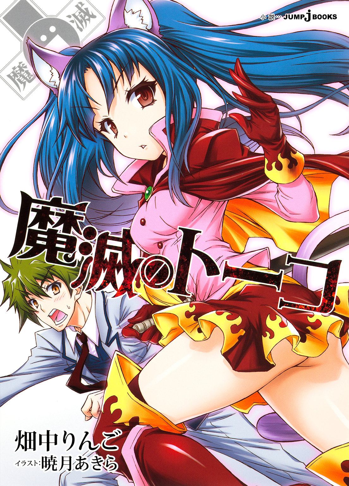
この本は縦書きでレイアウトされています。
また、ご覧になる機種により、表示の差が認められることがあります。
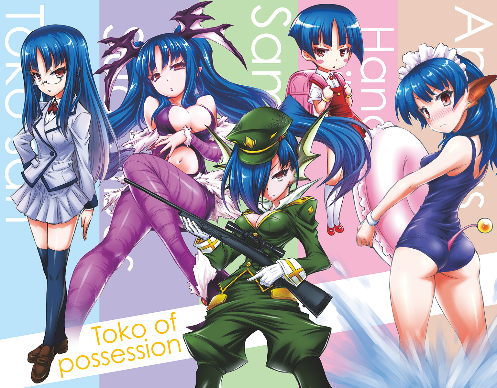
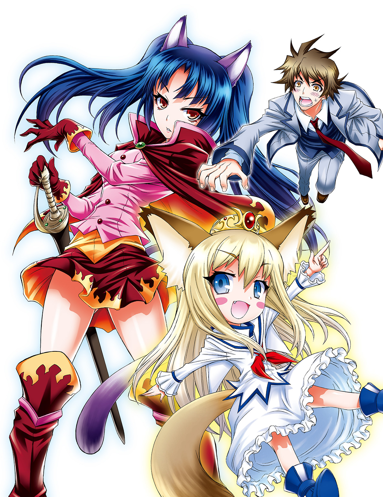
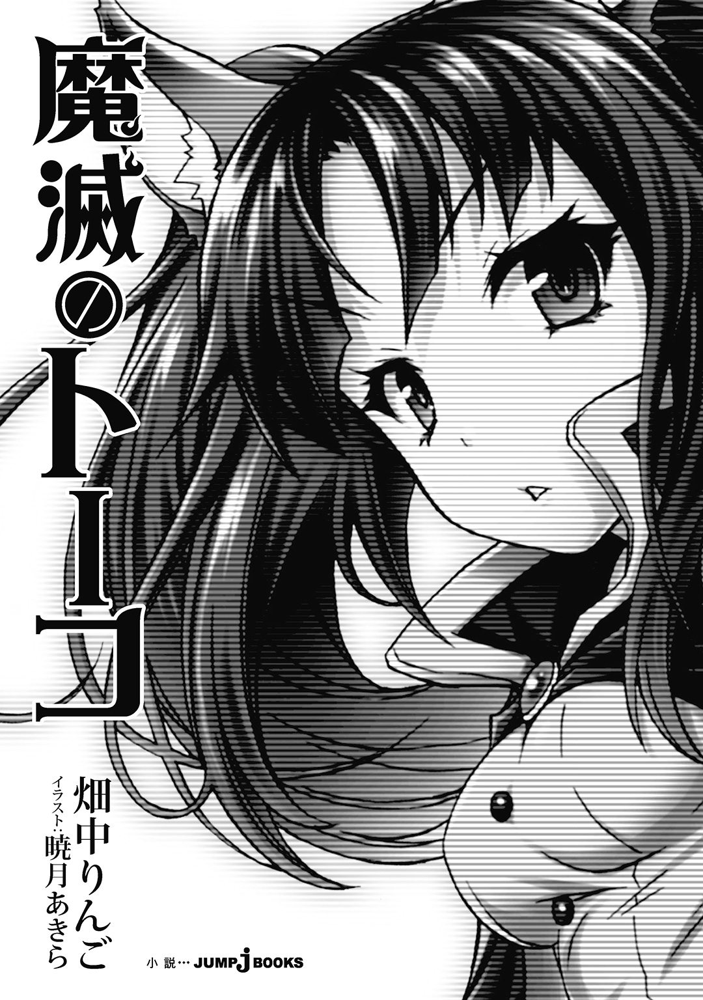
この作品はフィクションです。
実在の人物・団体・事件などにはいっさい関係ありません。
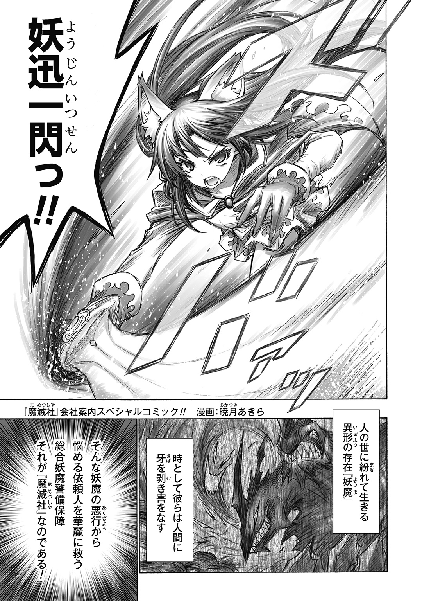
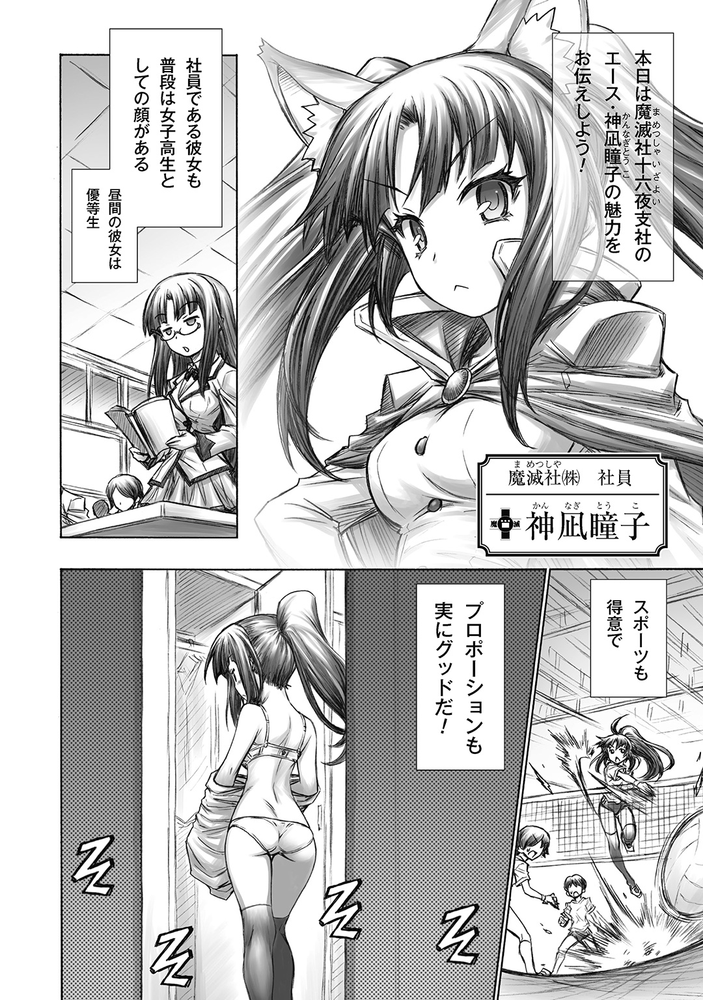
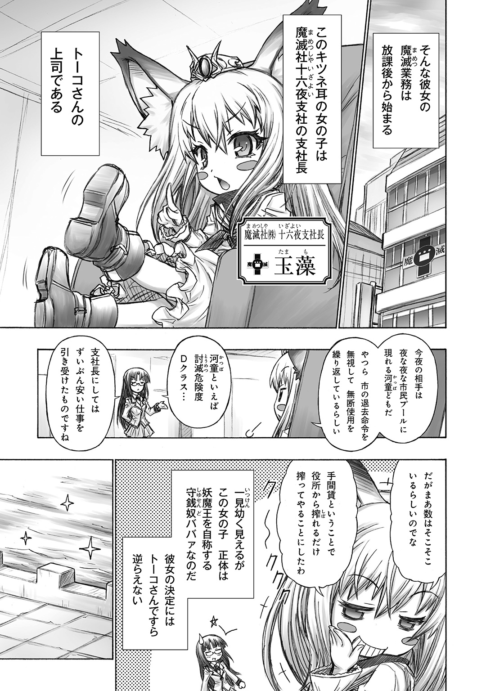
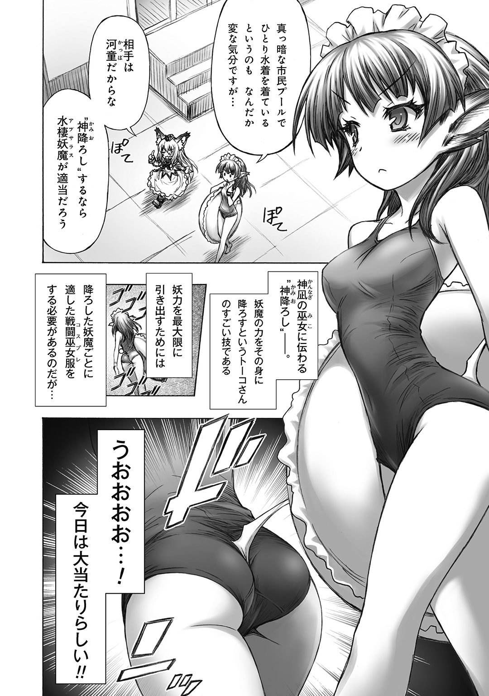
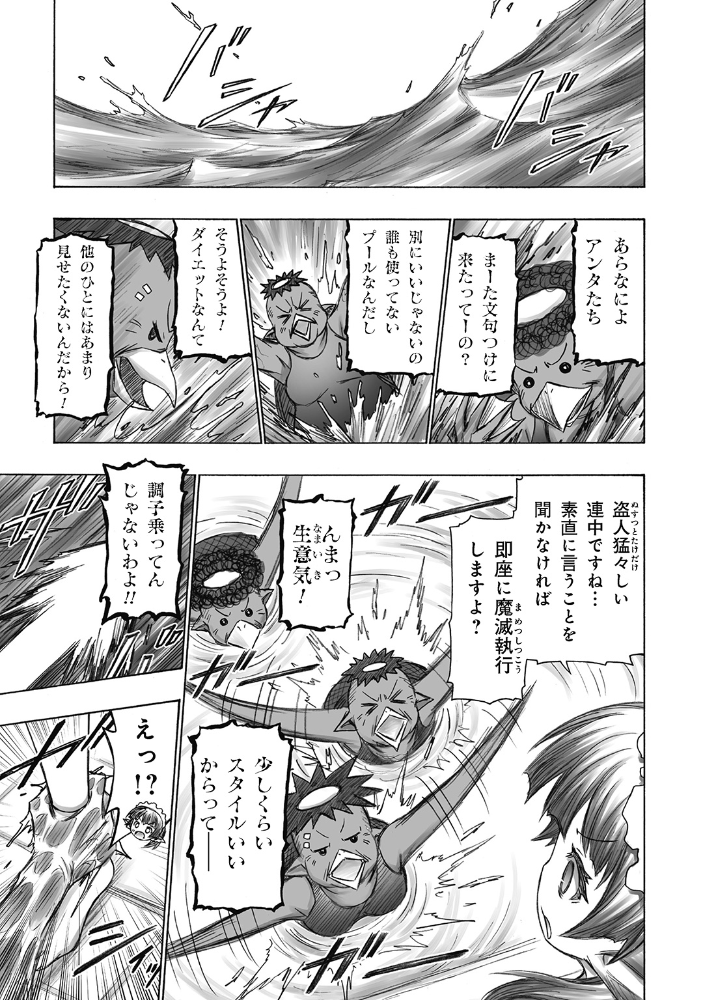
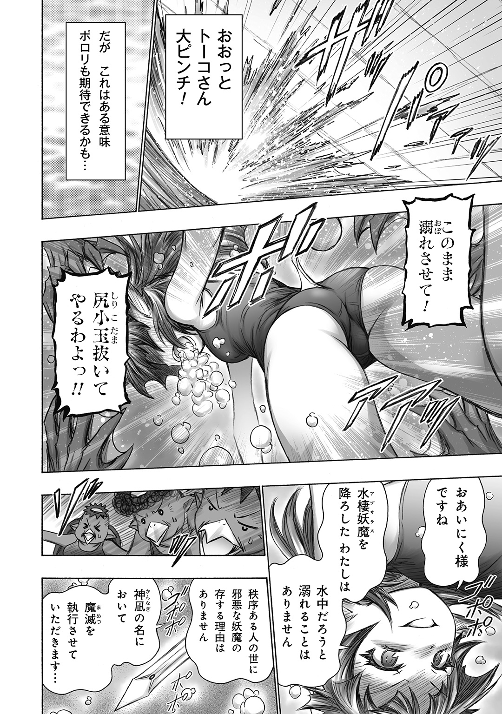
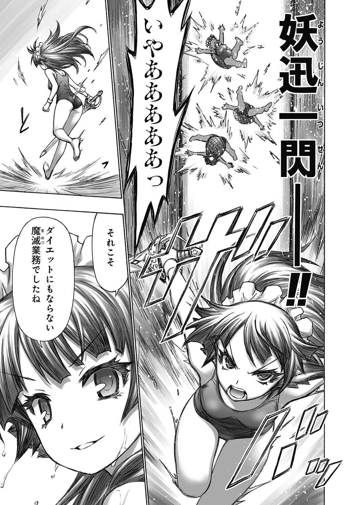
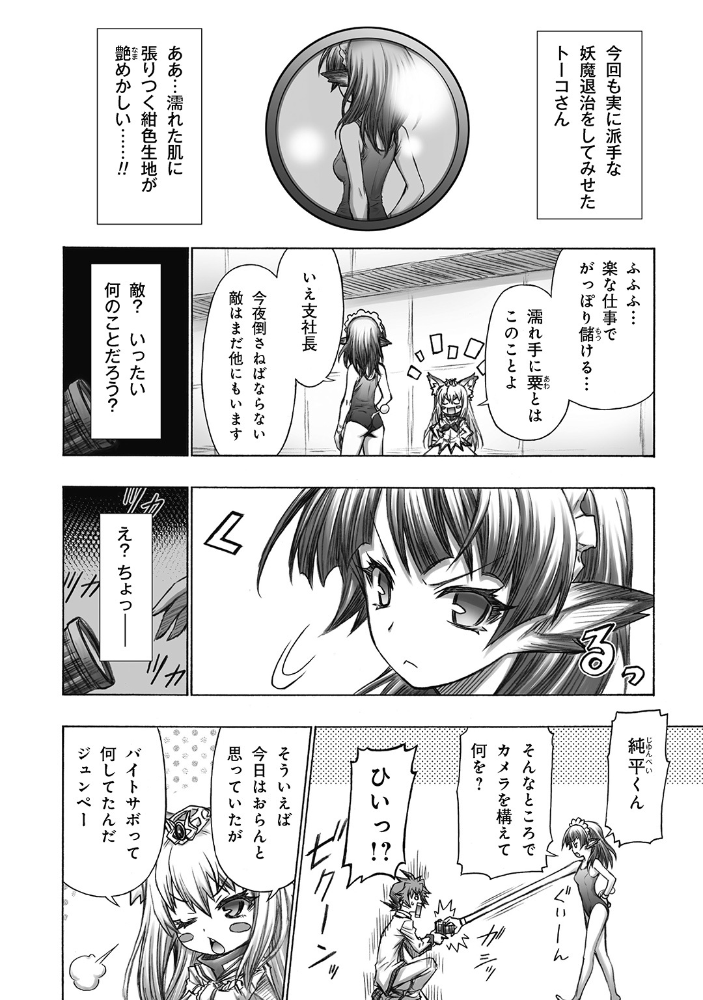
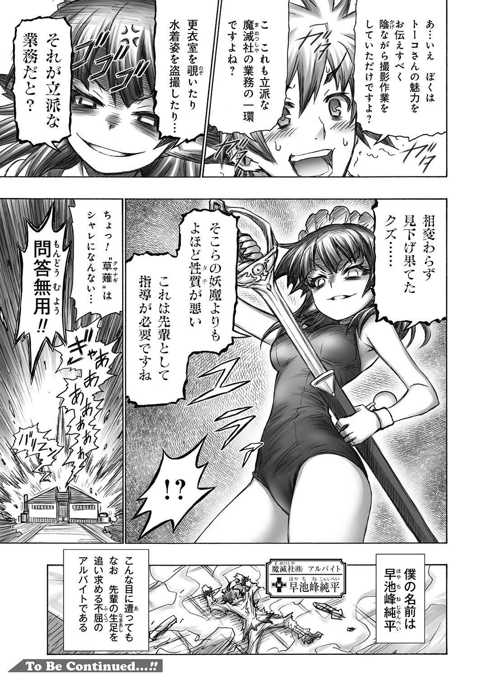
プロローグ
天使と悪魔。
精霊、妖精、妖怪、悪鬼、邪神。
この世の陰に棲む、異形の隣人たち。
強大な妖力と、人とは異なる智慧を有する彼らは「妖魔」と総称され、太古の昔から人間社会に大きな影響を及ぼす存在であった。
人類との共生を望む妖魔たちは、ときに人々に力を与える。
妖魔の力で吉凶を占った女は、とある地の女王として崇め奉られた。
妖魔の力で敵を打ち滅ぼした男は、千年続く帝国を打ち立てた。
妖魔の力で超人的な閃きを得た科学者は、世界を変える大発明を成し遂げた。
彼らの類まれな能力は、今日まで続く現代社会に強い影響をもたらすものばかりだったのである。
しかしもちろん、全ての妖魔が人間に対して友好的だというわけではない。
彼らの中には人間を強く憎み、その恐るべき妖力によって害悪を及ぼそうとする者たちもいる。世界各地の妖怪退治や悪魔退治の伝承が示す通り、歴史の裏側ではいつの時代にも邪悪な妖魔との闘争が繰り広げられていたのだ。
そして現代日本。
ここにも、邪悪な妖魔から人々を守るために設立された民間営利団体が存在する。
総合妖魔警備保障――魔滅社（株）。
これは、そんな死と隣りあわせの職場で戦う、ひとりの勇敢なる見習いバイトの物語である――。
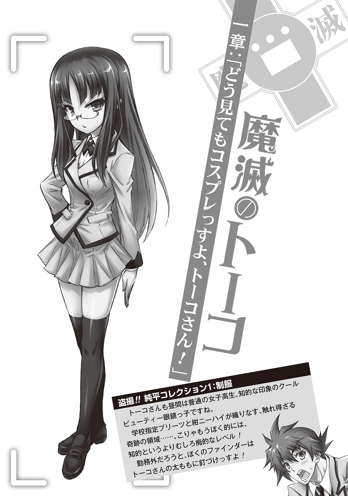
その日、県立十六夜高校の体育館は、業火に包まれていた。
壇上から燃え広がった炎が、瞬く間に舞台の幕を焼き、照明器具を燃えあがらせ、バスケットゴールの板を消し炭に変えてしまった。これはもう間違いなく、十六夜高校の歴史に残る大火災になるだろう。
ただ唯一不幸中の幸いだったのは、この戦闘に他の一般生徒が巻きこまれなかったことだ。深夜過ぎての業務だったことに、ぼくは内心安堵する。
「消防隊が来るまでには、なんとかケリをつけたいところっすけど......」
腕時計で時刻を確認。戦闘が開始されてから、もう一〇分かそこら経過している。
我ながら、なんて要領が悪いのだろう。そろそろ一般人にもこの事態は露見しているだろうし、周辺の建物への被害も考えなきゃならない頃あいであった。
「それ以前に、ぼく自身がこの炎の中で生き延びられるかって話っすけどね」
火の粉がそこらじゅうに舞い散り、空気を吸うだけで肺が焼けつくように熱い。
これだけの炎の勢いならば、もはや全焼も時間の問題だろう。そうなればもうオシマイだ。体育館中に充満した一酸化炭素を吸いこまないよう、ぼくは慌てて身を屈めた。
「んげほっ！ ごほっ！ ケリつけるどころか、こりゃあちょっとヤバい......？ 撤退も視野に入れておく感じっすかね、こりゃ......！」
つい十時間ほど前にクラスメートたちと吞気に体育の授業を受けていた場所が、まさか一瞬にしてこんな煉獄になり果てるとは思わなかった。
これだけの規模の災害を、普通の人間がそうやすやすと引き起こせるものではないだろう。十六夜高校がいくら田舎の高校だとはいっても、それなりの防火設備は完備されているのだ。防火扉や網入りガラスによって守られた建物を短時間で火の海に変えるなんて、絶対に人間業ではない。
だからやはり、この火災を引き起こした犯人も、人ならざる存在――妖魔の仕業なのだ。昔から、人智を超えた大事件は妖魔の仕業と相場が決まっている。今回の事件も、御多分に漏れずその一例なのである。
だからこそ、彼らを退治するエキスパート――総合妖魔警備保障魔滅社（株）の見習いバイトたるこのぼくが派遣されたというわけだ。
「しかしまさか、自分の学校を守らなきゃならないとは思わなかったっすけどね」
ため息混じりに、体育館の壇上を睨みつけた。
その中央には、火炎にまみれた体育館を楽しげに見つめる、一匹の妖魔の姿があった。二つの頭と四つの目を有し、西洋の騎士鎧を着こんだ巨大な異形の怪物である。
ぼくはそいつにびしり、と指をつきつけ、
「おい妖魔野郎！ ぼくたちの体育館をこんなにしやがった責任はちゃんととってもらうからな！ 女子バレー部や女子バスケ部、それから女子バドミントン部......彼女たちの青春の舞台を奪ったてめえを、ぼくは許さない！ この手で退治してやるっ！」
ぼくがそう叫ぶと、双頭の妖魔は、炯々と輝く四つの瞳でこちらをギョロリと睨み返してきた。
「うぉのれ、魔滅社の小僧がぁっ......！」「よぉくもこのうぉれたちを退治するなどと抜かしたなあっ！」
体育館中に咆哮を轟かせた妖魔の名は、地獄の騎士〝ビフロンス〟。
古くはソロモン王の使役した悪魔軍団にも名を連ねるような、外来の妖魔だ。
双頭部分も含めれば、体長四メートルくらいはあるだろう。かなりデカい。そして「地獄の騎士」と呼ばれるだけあって、赤銅色に輝く全身鎧を身に纏っていた。
だが、手にした得物は槍や刀剣ではなく、巨大な蠟燭である。そしてこの蠟燭こそが、体育館を炎に包んだ元凶なのだ。
「そぉんなに死にたいのであればぁっ！」「骨も残さず焼きつくしてやるうっ！」
赤々と燃え盛る蠟燭の炎が、まるで生き物のように自由自在に形を変え、いまにもこちらに襲いかかりそうな様子で鎌首をもたげていた。
ビフロンスは、あの不思議な蠟燭によって、炎を自在に操る恐ろしい妖魔なのだ。ぶっちゃけ、こうして面と向かっているだけでも縮みあがりそうなほどの貫録である。
「ちょ、調子乗って啖呵を切ってみたはいいっすけど......」
前情報によればビフロンスの討滅危険度はＣクラス。
熟練の魔滅社社員なら、討滅できてしかるべきレベルなのだそうだが、いかんせんぼく――早池峰純平は、入社してまだ半年の、見習いバイトにすぎなかった。
「――よくよく考えれば、ホントにアレに勝てるのか？ ぼくは」
ぼくが手にしている唯一の武器は、妖魔退治用の銀のナイフくらいのものだ。だが、こんなちっぽけなナイフ一振りが、あの巨大な化け物に通用するとはちょっと思えない。希望的観測として、せいぜいあの赤銅色の鎧にキズをつけるのが関の山だ。
だいたい過去にこのナイフでなんとかできたのは、Ｅクラスの〝小鬼〟とか〝魍魎〟程度のものである。討滅危険度Ｃクラスなんて、相手にしたことはない。
「むう......」
冷静に今のぼくの実力と装備を考慮すると、さすがにあの双頭の妖魔は荷が勝ちすぎる相手なのではないだろうか。退治どころか、逃げ出す前に消し炭にされてもおかしくはない。
「こりゃ確かに『命がけで戦え』とか、言われるわけっすね......！」
それは、今回の作戦前に支社長――つまりぼくの上司から直々にいただいた命令である。
万年人手不足の十六夜支社には、こういう理不尽な命令もままあるのだが、今回ばかりはいくらなんでも度がすぎている。新人のぼくにとっては、Ｃランクをなんとかしろなんて、ほぼ「死ね」と言われているのと同義なのである。
「こっちはまだ見習いバイトだっつーのに、酷いブラック企業っぷりっすよ、まったく」
今頃事務所のソファーでふんぞり返っているであろう支社長の顔を思い出し、ぼくは頭を振った。
どうせ資本主義社会においては、ぼくのような社会的弱者は会社と上司の命令には逆らえないのだ。事業主というのはすべからくコストを削減しようともくろみ、低賃金労働者を危険な現場に送りこむことを厭わない。そして金も発言力もない労働者は、ただ黙ってその命令を遂行するだけ。結局、資格経験のない肉体労働者は、身体生命を資本に賃金を得るしかないというのが、この世知辛い世の中の仕組みなのである。偏見じみていると思われるかもしれないが、あの強欲支社長のもとで働かされれば誰だってそう思うに決まってる。
悲しいかな、妖魔退治もビジネスなのだ。
「たとえここでぼくが焼け死んだとしても、あの守銭奴支社長、労災なんてビタ一文払う気はないんでしょうね」
と、そんなふうにぼくが魔滅社のブラックぶりに毒づいているうちに、いつの間にやら事態は悪化していた。
「ごちゃごちゃごちゃごちゃとおっ!?」「辞世の句は詠みおわったかあっ!?」
壇上のビフロンスが、手にした蠟燭を高らかに掲げていた。
蠟燭の先端で炎が大きくうねり、大きな紅蓮の火球が形成されたのである。
「ちょ、まじっすか......!?」
直径は一メートルくらいだろうか。大きめのバランスボールくらいはありそうな火炎が、赤々と火の粉を散らしている。まるで小さな太陽だ。あんなのが直撃したら、一瞬で骨まで蒸発してしまいかねない。
「ひと思いにいっ！」「消し飛ばしてくれるわああああっ！」
妖魔が叫び、無慈悲に右腕の蠟燭を振るった。
蠟燭から放たれた火球が、一直線にこちらに迫る。
ぼくは「ひいっ」と情けない悲鳴をあげつつ、飛びのくように床に横転した。制服が煤にまみれてしまったが、間一髪で火球の直撃を回避することができた。
火球はぼくのすぐ脇を通り過ぎ、そのまま背後のロッカールームに衝突。
ドジュウ、と何かが溶けるような音がしたあとで、激しい爆炎があがった。
「うおおおおおおっ!?」
壁のモルタルやコンクリがはじけ飛び、散弾のように周囲にばらまかれた。まるで花火をごく至近距離で暴発させたかのような、すさまじい爆発である。
強烈な臭いと煙で、視界が閉ざされてしまう。それでもなんとか火球の着弾点に目を凝らすと、ロッカールームの入口は酷い有様になってしまっていた。
超高熱によって扉はぐにゃりと歪み、一部にいたっては融解したり蒸発したりしている部分もある。金属製の扉を変形させるなんて、あの火球はいったいどれほどの高温だというのだろうか。千度？ 一万度？ それ以上か？
よくわからないが、いずれにしても扉があれでは、ロッカールームはもはや使用不可能だろう。
「ああ、なんてこった......！」
目に涙が溜まるのは、なにも爆炎による粉塵のせいだけではない。
あのロッカールームは、ぼくたち男子生徒にとっては憧れの地――我が校三本の指に入るベスト覗きスポットだったのである。
これではしばらくの間、女子運動部の女の子たちの生着替えをじっくり鑑賞することはできそうにない。それはつまり、ぼくが生きる意味の三分の一を失ったということにほかならないわけである（ちなみに残り三分の二は、中央階段の真下と、女子水泳部の部室である。もしこれらのスポットまで失ってしまったら、ぼくはきっと世を儚んで首を吊るに違いない）。
学校中の青少年たちの怨念を、このまま晴らさでおくべきか。
ぼくはおもむろに立ちあがり、双頭の妖魔騎士を強く睨みつけた。
「やいこらてめえ！ ホールのみならず、ぼくらの大事な桃源郷を破壊しておいて、タダですむと思うなよっ！」
「ほぉう？ タダではすまさないとぉっ？」「なぁらば、どうするつもりなのだあっ!?」
ビフロンスがふたつの首をかしげ、居丈高に笑う。
「どうするって――」
まあ確かに、ぼくごとき見習いバイトじゃ、Ｃクラス妖魔相手ではなす術もない。
せいぜいできることといえば、
「......あー。えと、そ、その。話し合いで解決、とか......？」
相手におもねり、へりくだることだけだった。
「話し合ぁいだとおっ!?」「どぉういうつもりだあっ!?」
ビフロンスが雄々しく蠟燭を振り回し、気勢をあげた。
鼓膜がビリビリと震え、ぼくは思わず後ずさる。あまりの迫力に、あやうく腰を抜かしそうになってしまったほどだ。
だが、ビビッてばかりもいられない。ぼくは愛想笑いを浮かべながら、壇上に近づいた。
「ま、まあまあ落ち着いてくださいっすよ。へへへ」
支社長あたりに言わせれば、こういうネゴシエーションは、『魔滅社の一員にあるまじき、実に姑息で情けない姿勢』なのだろうが、当方、生命の危機である。この場合は大目に見てもらいたい。
「まあぼくたち魔滅社としても、あなたをどうしても退治したいってわけじゃないんすよ？ ただその、ちょっとだけ放火活動を自粛していただけないかなーと思う次第でございまして」
揉み手をしつつ、へこへこと頭を下げる。へたれ？ いやいや、ラブ＆ピースである。平身低頭低姿勢は、人類の生み出した最高の文化的発明である。
そもそも、力による解決がすべてではないのだ。
魔滅社の目指すところは、人間と妖魔がお互いを尊重しつつ穏便に生活していくことなのである。宥和政策だって、その趣旨に反するわけではない。
しかし、
「なぁにを今更あっ......！」「百年前、うぉれたちを一方的に封印したのは、キィサマら魔滅社ではないかぁっ！」
ぼくの友好的な態度も、どうやら怒り心頭の相手には通用しなかったようだ。ビフロンスは激昂し、再び巨大蠟燭を掲げた。
薄ら笑いを浮かべるぼくに対して、双頭の妖魔の反応は容赦ないものだったのである。
「あ、いや、まあ。そうかもしんないっすけどね......」
かつて封印されたのがよほど腹に据えかねているのか、こちらの説得など聞く耳持たない姿勢らしい。百年も前の話なんて、こちとら知ったこっちゃないのに。
「あぁの日の怨みぃっ！」「今こそ晴らしてやるうっ！」
まずい。あの妖魔、またしてもあの火球を放つつもりらしい。
話し合いという手段を失ったぼくがとれる行動は、もはやこの場から離脱することのみだった。
「す、すんませええええええんっ！」
ビフロンスに背を向け、ぼくは全力で駆けだした。
あんなの相手にしていたら、命がいくつあっても足りない。
敵前逃亡は社訓違反。減給処分もありうると支社長にキツく言われていたが、命あっての物種なのだ。この際、命令違反上等である。
「せ、せめて出口までたどりつければ......」
燃えあがる床の隙間をぬうようにして、全力疾走で必死に体育館の出口を目指す。
そんなぼくの背中に、妖魔の罵声が浴びせかけられた。
「臆したかあっ！ 魔滅社あっ！」「うぉれたちから逃げられると思うなあっ！」
「んげえっ!?」
振り向くと、ビフロンスの蠟燭から再び火球が放たれていた。
しかも今度は数えきれないほど無数に、である。さきほどよりは少し小さ目な、バレーボール大の火球が、ぼくの進行方向へ雨あられと降り注いた。
「ひいいいいいっ!?」
慌てて足を止め、直撃を避ける。
着弾した火球は、体育館の床張りを瞬く間に融解させた。今やぼくの周囲にはいくつもの大きな穴が開いており、妙な臭いのする煙がシュウシュウと吹き出している。止まるのがあと数秒遅れていたら、ぼくの身体も床と同様、今頃雲散霧消していたことだろう。
「あ......」
煙の中で目に入ったのは、炎に包まれるモルタル扉だった。
あの火球の連弾はどうやら、こちらの逃げ道を潰すための攻撃だったようだ。出口があれだけの炎にまかれていては、もはや外に出ることはできない。脱出への望みが目と鼻の先で断たれてしまい、ぼくは愕然とする。
「悪運だけは強いようだがあっ！」「もぉはや逃げられんぞぉっ！」
気づけば周囲を炎と爆炎に取り囲まれ、ぼくは一切身動きがとれなくなってしまっていた。絶体絶命のピンチ、というやつである。
ビフロンスは雄叫びをあげ、三度巨大蠟燭を振りかざした。
「こぉれで終わりだあっ！」「跡形も残らず消し飛ばしてやるぅ！」
「ちょ、ちょっと待って！ タンマタンマ！ 話せばわかるっすよ!?」
「ざぁれごとはあっ！」「聞き飽きたわあっ！」
もうダメだ。万策尽きた――ぼくは地面にひれ伏し、頭を抱えた。
ぼくの脳裏にうずまいていたのは、こんな危険な任務を引き受けてしまったことに対する後悔の念......ではない。
もっと根本的なレベルで、自らの選択を悔いているのだった。
本当にどうしてぼくは、こんなバイト先を選んでしまったのか。
会社が通学路に近いから？
邪悪な妖魔から人々を守る職務に、強い誇りを感じたから？
高校卒業後、魔滅社という大企業に永久就職するコネを作るため？
どれも違う。単に近場でやりがいのある仕事なら、他にいくらでもあるはずだ。命がけの魔滅業務なんて、割にあわないにもほどがある。
「――ぼくがこのバイトを選んだのは、〝彼女〟のためだ」
そう。すべてはひとりの女性のためである。ひとえに〝彼女〟の傍にいたかったから、このバイトを選んだというだけの話なのだ。
〝彼女〟は由緒正しき神凪の巫女にして、魔滅社十六夜支社のエース。
異能の力を振るい、一刀のもとに妖魔を討滅する、絢爛にして峻烈なる魔滅の剣士。
半年前、妖魔に襲われたぼくを助けてくれたのは〝彼女〟だった。あの日命を助けられて以来、ぼくは〝彼女〟に強く心を奪われているのだった。
「ああ、どうせ死ぬなら最期に一目、この目に焼きつけておきたかった......」
いまわの際に思い出すのは、〝彼女〟のすらりとした肢体。
翻るスカートの裾からのぞいた、白く柔らかそうな太もも。
妖魔に焼き殺される前に、アレをどうしても見たい。アレをもう一度見なければ、死んでも死にきれない。
だからぼくは、全身全霊の想いをこめて、こう叫んだのである。
「ぼくは、トーコさんの絶対領域が見たいんだあああああああああああああっ！」
もしかしたら、そんな願いが天に届いたのかもしれない。
そのときぼくの耳に届いたのは、凜としてよく通る、落ち着いた少女の声――聞き慣れた〝彼女〟のツッコミだったのである。
「仕事中になにをバカなことを叫んでるんですか、あなたは」
妖魔騎士が訝しげに、声のするほうを振り返る。
「むうっ」「何奴うっ？」
体育館二階のギャラリーに、細身のシルエットがあった。
そこにいたのは、やれやれと億劫そうに首を振るマント姿の少女だ。
「あ......」
ふたつに結った長い黒髪に、すらりとした瘦身。
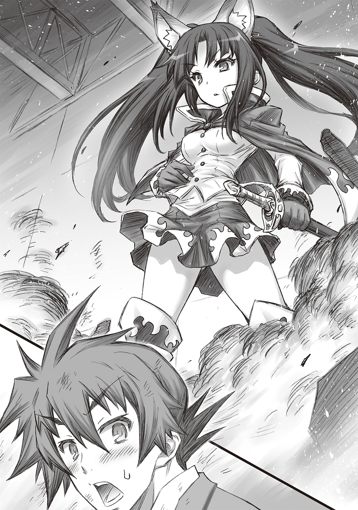
こちらを見下ろす切れ長の瞳は、サファイヤのような神秘的な輝きを帯びていて。
あのまぶしい絶対領域の持ち主を、間違えるわけもない。
赤を基調としたミニスカート――どう見ても巫女服には見えないそのコスプレは魔滅の巫女たる〝彼女〟のトレードマークなのである。
「と、トーコさん......!? どうしてここに？ まさか、ぼくの愛の叫びを聞いて？」
「愛の叫びというか、どう聞いてもセクハラ発言でしたが」
黒髪の少女が、半眼でぼくを睨みつける。
〝彼女〟の名は神凪瞳子。
ちょっぴりクールで実に頼りになる、ぼくの憧れの先輩である。
「んじゃ助けに来てくれたってわけっすね！ いやあもう一時はどうなることかと......」
「わたしがここに来たのは、そこの妖魔に対する魔滅執行のためです。別にあなたを助けに来たとか、そういうわけではないので勘違いしないように」
少女はギャラリーの手すりを蹴り、ぼくの傍へとふわりと舞い降りた。まるで猫のように軽やかな身のこなしである。
「え？ でも、ビフロンスの魔滅執行は、ぼくが請け負った仕事のはずじゃ？」
「いえ、純平くんがＣクラス相手に魔滅執行ができるなど支社長もわたしも最初から考えていません。あくまであなたは足止め要員です。わたしが今回の作戦の本命なんですよ」
「あ、足止め要員......？」
なるほど、ぼくはトーコさんが到着するまでの時間稼ぎのために送りこまれたらしい。つまりは、ザ・捨て駒。あのひとでなし支社長の考えそうな作戦だ。
「ですがまあ――」そこらじゅうが火の海だらけになってしまった体育館を一瞥し、彼女は深々とため息をついた「その足止めすらろくにできてはいなかったようですけど」
「あはは......。面目次第もないっす」
「まったく情けない。ある意味期待を裏切らない役立たずっぷりです」
トーコさんが肩をすくめてみせた。いつものことだが、ぼくの不甲斐なさにイラついているのだろう。
頭の猫耳がぴょこぴょこと動き、尻尾がぴん、と天を指している。
「ふむ......期待を裏切らないと言えば、トーコさんのコスプレも毎度素晴らしいですね。今日は猫耳ですか」
「コスプレじゃくて〝神降ろし〟です。何度も説明しているでしょう」
〝神降ろし〟とは、トーコさんの実家――神凪家の巫女に代々伝わる異能である。
端的に言えば、妖魔の力を一定時間自分に憑依させ、自由自在に使いこなすことができるという、とんでもない技なのだ。
「神凪の巫女が妖魔をその身に取りこむと、妖魔に近い存在になるのです。強大な妖力を得ると同時に、姿形も変わってしまう。それが〝神降ろし〟なんです」
以前、たしか彼女はそんなふうに説明していたような気がする。
強大な妖魔の力を操ることで、妖魔と互角以上に戦う――道理としては至極単純明快だが、実際にそんなことを行える人間はほとんどいない。全国の魔滅社社員の中でも、こんな特殊能力を持っているのはトーコさんくらいのものだろう。
「〝ケット・シー〟は、膨大な妖力を有する西洋化け猫です。この妖魔を降ろせば、その妖力だけでなく、猫科の身体能力と鋭敏な感覚を得ることができるのですよ」
〝ケット・シー〟というのは、とくに彼女が好んで〝神降ろし〟をすることが多い妖魔である。きっとお気に入りなのだろう。もちろん、ぼくもそうだが。
頭からぴょこん、と突き出たフサフサの耳を撫でながら、彼女は呟いた。
「......もっとも、見た目がアレな感じになってしまうのが、いちばんのネックですね」
「いやいや、その見た目が最高なんじゃないですか。猫耳プラス絶対領域とか、実にぼく好みのコスプレですよ」
「だから、あなたにそういう目で見られるのが嫌なんです」
猫耳絶対領域のコスプレ少女は、露骨に嫌そうな表情を浮かべた。
「えー......可愛いのに。そこはかとなくエロ可愛いのに」
自分で自分の魅力に気づいていないというのは、実にもったいないことである。
重ねて言うが、彼女の太ももは、実に素晴らしい。
特にこうやって床から見あげるような角度だと、スカートの中身が見えそうで見えない感じがまた、たまらないのだ。チラリズムならぬ、ギリリズムというべきだろうか。
さらに、そこに付属しているネコ尻尾。実に、ぼくのツボを心得ているとしか思えないコスプレである。「簡単には見せないにゃん」という幻聴すら聞こえてくるほどだった。
ぼくが唯一うちの支社長を尊敬しているのは、トーコさんにこの素敵なミニスカ衣装の着用を義務づけた点である。軽量性と呪的防御に特化した戦闘用巫女装束で云々......とかいう小難しい説明を聞いたことがあったが、そんなことはどうでもいい。
「絶対領域を拝めるから魔滅社をやめられないんすよねえ」
そんなぼくの紳士的な視線に気がついたのか、
「来るのが早すぎましたね。純平くんがあの妖魔にこんがりローストされてからで十分だったかもしれません」
トーコさんがスカートを押さえながら、ゴミを見るような目をぼくに向けた。
照れる姿もまた可愛らしい。
一方、舞台上の双頭の騎士は、現れた猫耳少女を四つの目で鋭く睨みつけていた。
「どぉんな助っ人かと思えば、ただの小娘ひとりではないかあっ！」「恐れるに足りぬわっ！」
「それはどうでしょう。見た目で判断すると、痛い目を見ると思いますが」
トーコさんが淡々と応える。
さすがは十六夜支社のエース。自分の何倍もの巨軀を誇る怪物に対しても、一切気圧されていないようだった。
「そぉの意気やよぉしっ！」「ふたりまとめて、消し飛ばしてくれるわあっ！」
ビフロンスが、手にした巨大蠟燭を大きく振り回した。先端の炎がメラメラと勢いよく燃えあがり、これまでにない大きさへと膨らんでいく。
あれは巨大な鳥だろうか。舞台の端から端までを覆いつくさんばかりの火が鳥の形をとり、翼を広げてこちらを見下ろしていた。
翼から放たれる熱気に、それだけで舞台付近が歪んで見えるくらいだ。
あんな大きな火の鳥、今度こそ避けようがない。もし発射されたら体育館ごと消し炭にされるのは必至である。
「ど、どどど......どうしましょう？」
もはやこの事態、ぼくが対処できる範疇はとっくに超えてしまっている。カッコ悪いのは承知の上で、ここはおとなしく先輩に丸投げすべき場面だろう。
「大丈夫です。あのくらいの相手ならばなんの問題もありません」
がたがた震えるぼくとは対照的に、トーコさんは冷静沈着そのものだった。どうやら彼女にとって、あんな炎は脅威の対象にもならないらしい。やはり頼りになる。
彼女は腰に差した剣をすらりと抜き放ち、舞台上の妖魔を見据えた。
「〝草薙〟......！」
その西洋風の細身の刀剣は、ただのアンティークではない。
持ち主の力に呼応して切れ味を変える第一級魔滅兵装――つまりは、十六夜支社の秘密兵器とでも言うべき代物なのである。
「はあああああああああああっ！」
トーコさんが気合をこめると、妖刀は、その刀身から輝くばかりの蒼い光を放ちはじめた。
〝ケット・シー〟を通じてトーコさんが得た妖力が、刃の切れ味を最大限に引き出しているのだろう。彼女から感じる威圧感は、今や壇上の妖魔とは比べものにもならないほど増大していた。
「「ぐぬううっ......！」」
ビフロンス自身もそれに気づいているのか、怒り心頭だった先ほどまでとは異なり、明らかな狼狽をみせていた。
「......な、なんだあっ!? その刀はぁっ!?」「うぉれたちが気圧されているだとおっ!?」
体育館を炎の海に変えてしまうような地獄の騎士が、今やたったひとりの人間の少女にここまで怯えている。
傍で見ているぼくにとってそれは、実に不思議な光景だった。
「観念しなさい。秩序ある人の世に、邪悪な妖魔の存する由はありません。神凪の名において、魔滅を執行いたしましょう――」
「なぁにい......!?」「小娘があっ...！」
見る者をぞっとさせるような冷たい瞳が、ビフロンスに向けられた。
「おとなしく、わたしの剣の錆となりなさい！」
だん、と強く床を蹴り、トーコさんは跳躍する。
飛び交う火の粉の中を、彼女は一直線に妖魔の元へ。
焼け落ちてくる天井の建材も、彼女の行く手を阻むものにはなりえなかった。まるで草を凪ぐような最低限の剣捌きで、彼女はそれらをいとも容易く打ち払ったのである。
「なんというっ!?」「速さぁっ......!?」
炎の中を貫くように跳ぶ彼女の姿は、さながら蒼い光弾の如く。
そんなアクロバットな動きを可能にしているのは、彼女が降ろしている化け猫の跳躍力によるなのだろう。
音もなくステージに降り立ったトーコさんは、肉食獣めいた眼光で獲物の姿を見あげた。
「捉えました」
「「ぐぅぬううっ......」」
ビフロンスは彼女の眼力に圧倒され、手にしていた巨大蠟燭を取り落としてしまう。巨大な鳥状の火炎は地に伏し、炎が舞台の板張りに燃え広がる。壇上は瞬く間に紅蓮に彩られていった。
しかしトーコさんは、一切狼狽えを見せない。周囲の炎などとるに足らないものであるかのように、双頭の騎士を見据えていたのである。
端で見ているぼくには、ただただ彼女の華麗な立ち居振る舞いに「おお......！」と、見蕩れていることしかできなかった。
これが、魔滅の巫女。
ぼくが憧れる少女の戦いなのである。
逃げ回るだけのぼくとは、明らかに次元が違う。まるで特撮かバトル漫画を目にしているような感覚である。
「あなたにはもはや、逃げ場はありません」
炎の中で、トーコさんが蒼の剣を高らかに掲げた。
紅の火炎の中に煌めく一筋の蒼い光条。トーコさんの剣を覆う妖気が、言葉とともにその出力をさらにあげた。刀身から轟々と噴出する光は、妖気の塊なのだろう。
それは炎の中にありながら、遠目で見てもはっきりとわかるくらいにさらに強烈な輝きを帯びていた。ビフロンスの火球などとは比べものにならない密度で妖気がこめられているに違いない。
魔滅の巫女はふう、と大きく息をつくと、
「――妖迅一閃ッ！」
目にも留まらぬスピードで、蒼い刀身を振り下ろした。
斬撃と同時に、刀身から生じた蒼い衝撃波が、舞台上のすべてを薙ぎ払う。それは燃えさかる炎ごと赤銅色の甲冑を両断し、妖魔の身体を吹き飛ばしたのだった。
「うぐわああああああっ！」「ぎゃああああああああっ」
ビフロンスの断末魔の叫びが、半壊した体育館に響きわたった。
だが、彼女の一撃は、単に妖魔を討滅するにとどまるものではない。
それは例えるならば、周囲にあるものすべてをのべつまくなしに破壊する、超大型の竜巻だった。「逃げ場がない」のは、ぼくも同じだったのである。
「ひええええええっ!?」
凄まじいまでの蒼い妖気の渦が、体育館中のありとあらゆるものを空中へと巻きあげた。板材やガラス片、バスケットゴールの破片に焼け残ったカーテンの燃え滓。もはや天井など、どこまで飛ばされたかもわからない。炎と瓦礫の隙間から、夜空が覗けるほどである。
「相変わらずやりすぎっすよねえぇぇぇぇぇぇっ！」
板張りの残骸にしがみつきながら、必死で吹き飛ばされまいと耐える。この妖力の渦に飲みこまれたら、貧弱なぼくの身体など瓦礫同然に粉々になってしまうだろう。
というかそもそも、トーコさんはぼくの安全を考慮することなど最初から考えていないのかもしれない。
彼女は蒼い竜巻の中心で、眉ひとつ動かさずに剣を鞘に納めていた。
「......魔滅、完了」
こんなの日常茶飯事だといわんばかりに、クールな表情を浮かべている。
身ひとつでこれだけの暴風を引き起こしているというのに、大したものである。ぼくなんか衝撃に耐えるのに精いっぱいで、パンチラを拝む余裕すらないというのに。
「ど、どっちが化け物だって話っすよ、マジで......！」
彼女こそが、魔滅社十六夜支社における最強のエース。
手加減不能の破壊巫女。
神凪瞳子は、へたな妖魔よりもよっぽど災害じみた存在であった。

そんな死闘から一夜明けた今日も、ぼくは高校生として登校の義務を果たさねばならなかった。普段通りに授業に出て、普段通りに友人と談笑し、普段通りにお宝本を没収される。放課後にいたるまで、なんら変わりのない一日であった。
体育館が（表向きは）妖魔のせいで完全に崩壊したにもかかわらず、平常通りの生活を送るあたり、我が十六夜高校の面々もなかなか図太いものである。まあ、十六夜市ではこうした妖魔がらみの災害は珍しくないため、事態の対応にもある程度慣れているだけかもしれないが。
そんなわけでぼくも日常ルーティンに則り、夕方からはこうしてバイト先に顔を出しているというわけである。
「つーか、あやうく死ぬかと思ったっすよ。ほら見てくださいよ、この怪我！ もうあちこちボロボロっす」
デスクにふんぞり返った支社長に向けて、ぼくは包帯の巻かれた額や腕を突き出してみせた。
「確かに、派手にやられてはおるが」支社長が淡々と口を開く。「だが、それらの怪我の原因は妖魔との戦いによるものではなく、もっぱらトーコの巻き添えを食ったからだろう？ 従業員同士の些細な過失を、労災と認めるわけにはいかんなあ」
部下が命からがら業務を遂行したというのに、実に冷たい対応である。
従業員の身体の安全よりも経費負担のほうを重視するあたり、血も涙もないがめつさである。この守銭奴上司め。
「まあ、どうせそんな扱いだろうって思ってたっすけど」
それ以上何も言うことができず、ぼくは舌打ち交じりに応接用ソファーに腰を下ろした。
ぼくたちがいるのは、魔滅社十六夜支社のオフィスである。昨日のミッションの報告をするべく、トーコさんとともに支社長に呼び出されていたのだった。
ちなみにこの十六夜支社のオフィスは、高校からほど遠くない商店街の雑居ビル二階に存在する。一階は落ち着いた雰囲気の喫茶店で、三階は空き部屋。通りのガラス戸にプリントされた豆マークの社章が、異様な存在感を放っているとひとは言う。
この社章、「魔滅社」という社名が節分の鬼退治で撒く「魔滅」に由来していることからデザインが決定されたそうなのだが、そんなことは普通誰もわからないだろう。
十六夜支社の構成員は、ぼくとトーコさん、そして支社長の三人のみである。
あとは魔滅業務に応じて、不定期に本社から何人か派遣されたりされなかったり。多いときでも、この事務所に十人以上の人間がいるのを見たことがない。
なので、オフィスと言ってもそんなに大それたものではないのである。フロアも広いものではなく、メインの応接室にソファーとガラステーブルが置かれている程度のものだ。あとは給湯室とトイレ、倉庫兼支社長の生活空間があるくらい。
余計なものがなく小ざっぱりとしている上に、トーコさんがやたらと綺麗好きなので、掃除は常に行き届いている。
総じて、実に閑静で過ごしやすい職場環境だと言えるだろう。おまけに同僚も美人、賃金も悪くないとくれば、理想的なバイトである。
トーコさんの魔滅執行によって、毎度死にかけるという点を除けば。
当の破壊巫女は、ぼくの隣でやれやれと首を振ってみせた。
「まったく、あれしきの攻撃の余波すら回避できないとは......。本当に十六夜支社のお荷物ですね、純平くんは」
「トーコさんが大味すぎるんすよ。普通の人間は、体育館を丸ごとぶっ飛ばすような衝撃波に耐えられませんって」
「そうでしょうか。あなたの場合、普段からどうにも集中力に欠けていますからね。それが怪我やら何やらの原因になっているんだと思いますが」
トーコさんが、冷静な口調で淡々と言い放った。
戦闘態勢でない彼女は、髪をおろし、真面目そうなリムレスフレームの眼鏡を着用している。服装も、いたって平凡な我が校の女子用ブレザーだ。
あの猫耳コスに比べれば、実におとなしい出で立ちであった。
こっちの神凪瞳子しか知らない他の生徒たちが、彼女を「十六夜高校の誇る清純派アイドル」「天然記念物級の文学少女」などと評価する気持ちもなんとなくわかる気がする。
「――せめてもう少し真面目に勤務すれば、役立たずだのゴミだの穀潰しだのと罵られないと思うのですが」
こういう毒舌がナチュラルに口をついて出る以外は、本当に清楚な美少女なのに。
「失礼な。ぼくだって普段から真面目に集中してますよ。もうこれ以上もないくらい全力で集中しまくりっすよ」
「どこが集中してるというんです。あなた、業務の最中でもしょっちゅう、ひとの太ももばかり目で追いかけてるじゃありませんか」
「ええ。ですから、トーコさんの絶対領域を全力で注視してるんすよ。見えそうで見えないあの超ミニの中身を、見逃すわけにはいきませんからね」
まあ、ぼくが戦場でできることなんて所詮、トーコさんを見守ることくらい――もとい、彼女のパンチラを見守ることくらいのものなのである。
「純平くん。わたしときどき、あなたの存在理由がわからなくなります。どうしてこんな犬にも劣る女の敵が、大手を振ってお日様の下を歩いているのでしょう」
トーコさんが、わりとマジ気味の白い目をぼくに向けた。
その切れ長の瞳で蔑まれるのは、毎度毎度なかなかに心に刺さるものがある（もっとも最近ではこれが快感になりつつあったりもする）。
そうやっていつものように言葉のナイフで弄ばれるぼくを見て、デスクの支社長は深くため息をついた。
「お気楽な連中だな、お前らは」
「「は？」」
支社長の機嫌があまり良くなさそうなことを察し、ぼくとトーコさんは思わず顔を見あわせた。
「お気楽な連中って、どういう意味っすか？」
「そうです。まるで意味不明です。わたしと純平くんを同じカテゴリに入れるなんて、心外です」
そんなふうに口答えするぼくたちが気に入らなかったのか、我らが十六夜支社のトップは眉間に皺を寄せて唸った。
「お前らはバカか？ バカなのか？ これを見て、どうしてそんなに吞気でいられる」
支社長はデスクの上に散らばったコピー用紙の中から一枚をつまみあげ、それをぼくらのほうへと投げ捨てるように飛ばした。
床にはらりと落ちた用紙を拾いあげ、ぼくはその内容に目を通す。
「ええと『補修代金請求書』......？」
用紙の金額欄に書かれていたのは、途方もない額の数字だった。
たぶんぼくが死ぬまでこのバイトを続けたところで、絶対に稼ぐことのできない金額だろう。なんかもう、宝くじとかそういう世界の話である。
「んで、なんすかこれ」
「わからんのか。昨日お前らが壊した体育館の補修費だ。県から直々に、十六夜支社に請求書が送りつけられてきたのだ」
なるほど、支社長の機嫌が悪いのはこれが原因だったというわけか。お金にうるさい支社長のことだ。こんな請求書を送りつけられた日には、むしゃくしゃして部下に当たり散らしたくなるのも無理はないだろう。
「言っておくが、請求書はそれ一枚じゃないからな。この一か月でお前らが壊した施設の被害総額は、まさに天文学的領域に達している」
机の上の請求書を、支社長がいらだたしげにトントンと叩いた。
まあ、そんなのを見せられたところで、ただの労働者であるぼくらにはどうしようもないわけだが。
「はあ、そうなんすか」
「そうなんすか、ではないっ！」
どん、と拳でデスクを叩き、支社長はぼくを睨みつけた。
「お前たちが不甲斐ないおかげで、わが十六夜支社は万年大赤字なのだ。......まったく、支社長の顔に泥を塗りおってからに」
「ですがしかし、きちんとビフロンスは退治したではありませんか」
トーコさんが口を挟んだ。
「与えられた魔滅業務は、百パーセント確実に執行しています。妖魔の討滅数だけなら、十六夜支社は全国の魔滅社でもトップクラスの成績のはずです。決して支社長の顔に泥を塗るようなことは――」
「やかましい！ お前らのおかげで、来季の役員報酬が削られることが決まってしまったのだ！ よけいな言い訳をするんじゃない！」
面子うんぬんよりも、なによりポケットマネーを大事にする人物。それが十六夜支社長の人となりであった。
「お前ら、そこに正座しろ、正座！」
支社長の憤激には逆らえず、ぼくとトーコさんはソファーから立ちあがり、事務所の床に膝を正した。楽しい楽しいお説教タイムの始まりである。
「まったく。常々口を酸っぱくして言っておるだろうが。『魔滅業務は市民の安全が第一』だと。だいたいお前たちはだな、そこらへんの認識が甘いから――」
必死の思いで妖魔と戦わされた挙げ句、説教されるというのも割にあわない話である。
だが、支社長がお説教モードに入ってしまった以上、あえて反論はしない。下手に文句を言って支社長の機嫌をそこねたら、ただでさえ長い説教がさらに長引くのが目に見えているからだ。
なので、ぼくとトーコさんは内心「また始まった」と思いつつ、こうして黙って床を見つめているというわけである。
「お前らな、魔滅社の仕事を勘違いしとるのではないか？ 魔滅社の業務は解体業ではなく、邪悪な妖魔の撃退なのだぞ？」
ネチネチと、支社長様の説教は続く。そろそろ足が痺れてきた。
「......わしが若いころは、もっとこう、丁寧な仕事をしたものだ。人間からも妖魔からも一目置かれるような、誠実で質のいい魔滅業務をな。......まったく、今の若者は本当に嘆かわしい」
「『今の若者』って、その見た目で言いますか......」
ぼそり、とトーコさんが呟いた。
この支社長の外見年齢と実年齢の間には、果てしないギャップが存在するのである。彼女は見た目だけならぼくよりも断然年若い。若いというか、幼い。
「こう見えて、わしはお前らの何百倍と長生きしているのだ。年長者の意見にはすべからく従うべきだぞ。小童ども」
支社長――玉藻ちゃんは、どこからどう見ても小さな女の子だった。
身長は百三十センチくらい、亜麻色の髪が特徴的な、小学校低学年くらいにしか見えない可愛らしい女児なのである。
「......見た目は幼女、中身は老害......」
そんなぼくの呟きに、玉藻ちゃんは頭の上のキツネ耳をピクリと動かし、こちらを睨みつけた。
「おいジュンペー、何か言ったか？」
「あ、いえその。支社長は見た目も可愛いし、中身もしっかりしててすごいな、と」
「すぐにバレる噓をつくでない。お前いま、上司に対して老害とか抜かしただろう」
「め、めめ、滅相もございませんよ？」
「......罰として来週の休暇ナシな。全日フルで出勤すること」
「ひぐうっ......!?」
陰口も速攻でバレる。このババア、千年生きてるくせに、聴覚はまったく衰えていないらしい。
「まったく、口のきき方を知らん小僧だ。妖魔王ともいうべきわしに向かって老害とはな」
そう、支社長は人間ではない。
彼女の頭のフサフサのキツネ耳も、フワフワの尻尾も、トーコさんのように〝神降ろし〟によって生じたものではないのだ。これらは、全て彼女の自前のもの――玉藻ちゃんは、御年千歳を数えるキツネの大妖魔〝白面金毛九尾〟なのである。
もっとも見た目的にはそんな威厳はまったくなく、ただの威張りくさった厄介な幼女にしか見えない。
「なんだその腑に落ちぬ視線は。......この頭飾りを見よ。これが王たるあかしだ」
安っぽい作りのティアラを指しながら、玉藻ちゃんは「どうだ女王っぽいだろう」と得意げに薄い胸をそらした。あの頭飾り、いつだったか百均の児童向けコーナーで見たことがあるような気がする。
「そうっすね。どっからどうみても王様っすね。女王様っすね」
女王様だというなら、鞭とかボンデージとか、ついソッチ系を期待してしまうぼくだったが、あえて口には出すまい。この鬼畜ロリババアに鞭なんか与えた日には、ぼくの人権は完全に剝奪されてしまうだろう。
「ともかくだ」自称妖魔王が、ふん、と鼻を鳴らした。「これだけ不祥事が続いてしまった以上、お前らふたりの処遇についても考えねばならんな。とりあえず来月いっぱいまで、八〇パーセント減給の方向でいくしかないな」
この幼女、ぼくたちの給料をピンハネして私腹を肥やすつもりなのだろう。八割も給料がカットされてしまったら、かなりの死活問題である。
何か言い返そうと口を開きかけようとしたのだが、
「支社長。それはおかしいです」
それまで黙って正座をしていたトーコさんが、先に口を開いた。
「む？」
「先ほどから黙って聞いていれば、建物破壊の責任が、まるでわたしたちふたりにあるような言い方ではありませんか。それは事実に反します」
「ふむ、どういう意味だ」
「簡単に言えば、わたしに非はない、ということです」
首をかしげる玉藻ちゃんに、トーコさんは淡々と説明する。
「昨日の十六夜高校体育館での任務の際、わたしが到着していた時点で、すでに体育館は敵妖魔の炎によって半ば崩壊していました。建物の保存など、最初から不可能だったんです」
彼女の言い分はつまりこうだ。
確かに体育館ごと〝草薙〟でぶった切ったのは自分だが、それ以前に体育館は火災によって全焼へまっしぐらだった。だから建物を壊した責任は自分にはない、と。
「あえて責任の所在を明らかにするなら、それは妖魔の足止めもろくにできずに火災を発生させてしまった人物にあると思います」
「つまり、ジュンペーが全て悪い、と？」
支社長の言葉に、トーコさんは躊躇なく頷いた。
「純平くんが作戦時に行っていたことといえば、わたしにイヤらしい目を向けていたくらいのものです。戦闘においては、路傍の石よりも役に立たない存在でした。......いえ、セクハラしないぶん、石ころのほうがまだマシかもしれませんが」
さすがトーコさん、クールな表情で平然と心を抉ってくる。
「まあ、お前の言いたいこともわかる。ジュンペーは所詮ジュンペーだ」
「ともかく減給処分なら、この穀潰しだけに限定すべきです。むしろクビにしてしまうのも一案でしょう」
「うわーお......きびしーっすね......」
だが、さすがにぼくも「はいそうですか」と納得することはできなかった。
こっちも一応、生活がかかっているのだ。頷きあうふたりに「ちょっと待ってください」と声をかける。
「なんです穀潰しくん」
「いや、トーコさん。その理屈はおかしくないっすか？ 最初からトーコさんが遅れずに到着していれば、もっと被害が少なくてすんだかもしれないじゃないっすか」
「む」
「むしろ毎度毎度、例の必殺技で景気よく建物を破壊してるのはそっちのほうだっつーのに。責任転嫁もいいとこだと思うんですよ」
「責任転嫁......？ それはこっちの台詞です。いつもいつもひとに助けられている分際で......。文句を言うならひとりで妖魔を退治できるようになってから言ってください。この能なし破廉恥漢が」
どうやらこの先輩、一切自分の非を認めるつもりはないらしい。
玉藻ちゃんがため息まじりに、
「こらこらお前ら、見苦しい争いをするでない。そもそも、どちらにも非があるのだから、ふたり仲良く九割減給という方針でな......」
「さりげなく減給割合を吊りあげないでくださいっ！ つーかですね、責任問題つったら、そもそもぼくに無茶な作戦を任せた支社長がいちばん――」
と、口論が混沌の様相を呈してきたそのとき。
コンコン、と扉を叩く音が、応接室に響いた。
「あ、あの。すみません......」
振り向いて見ると、ドアの隙間から若干恥ずかしそうに室内の様子を窺う少女の姿があった。
「あ、えーと、お客さんっすか？」
「魔滅社は、こちらでよろしかったでしょうか......？」
「ええ......はい。そうですよ」
頷くトーコさんを見て、来客はにっこりと微笑んだ。
「ああ、よかった」
扉を開けて事務所に入ってきたのは、今時珍しい着物姿の女の子だった。
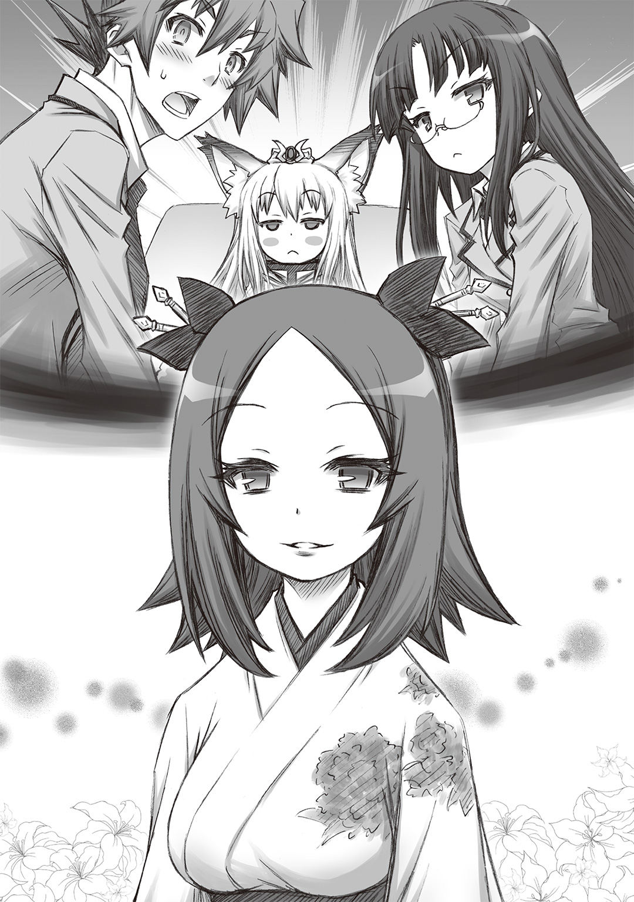
白地に紅い牡丹の柄――ぼくのような素人目にも、それが上等な着物だということはよくわかる。まるでどこぞの名家のお嬢様、といった雰囲気だ。肩口で上品に切りそろえられた髪や、着物の袖からのぞくきめ細やかな白い素肌に、気品のようなものを感じる。髪に刺した細工の綺麗な花飾りも、優雅さを演出していた。
全体的に華奢で清楚――見た目だけならトーコさんに近しい方向性を感じるのだが、この着物の少女はどこか儚げというか、中身までピュアなオーラが充満しているような気配がある。
端的に言えば彼女もまた、ぼくのストライクゾーンど真ん中の美少女であった。
「なんつっても、巨乳ですしね......」
そう。彼女は、着物の衿がぱつんぱつんになりそうなほどの、たわわな双丘の持ち主なのである。どちらかといえば細くて小柄なのに、あの胸は反則だろう。あれは実に見事な――。
「『実に見事なトランジスタグラマーだ』......純平くん、今あなた、そんなことを考えているでしょう」
トーコさんがため息まじりに呟いた。
「え、エスパー!? 魔滅の巫女って心まで読めちゃうんすか!?」
「いえ。あなたの顔を見ていれば、そのくらいわかりますよ。......別にわかりたくもないですが」
たった半年のつきあいで、よもやそんな芸当まで会得しているとは。恐ろしい先輩であった。
ぼくは愛想笑いを浮かべつつ、そのトランジスタグラマーガールへと向き直った。
「えーと、お嬢さん。魔滅業務のご依頼に？」
少女はこくりと頷く。
「はい。実はうちの屋敷に妖魔が入りこんだらしくて......。いろいろと困っているのですわ。できれば、それをなんとか退治していただけないかと......」
「ふむ、イタズラ、ね......。低級の仕業だろうか」
支社長が眉間に皺を寄せ、ううむと唸ってみせた。彼女がこういう顔をしているのは、決まって頭の中で汚い金勘定をしているときである。
「......雑魚退治ごときでは儲からぬしなあ」
ぼそり、とデスクのほうから呟き声が聞こえた。
魔滅社の依頼料は、退治する妖魔の討滅危険度に応じて高額となる。基本となるＣクラスなら一件あたりサラリーマンの平均月収程度、Ｂクラスならその十倍、Ａクラスにいたっては百倍近くに設定されている（当然Ａクラス依頼が舞いこんできた月には、支社長の機嫌はすこぶるよくなる。いち見習いバイトには関係ない話だが）。
そういうわけでＥクラス妖魔の退治など、報酬はたかが知れている。下手に引き受けたらまた（トーコさんのせいで）赤字になりかねない。だったらここはお引き取りいただいたほうが、会社にとってはプラスになる――。支社長はきっと、そんなことを考えているに違いない。
とにかくがめついのだ、この幼女は。
「ああ、お嬢さん、実に残念だ」玉藻ちゃんが、申し訳なさそうに口を開いた。「当社は現在、バカ社員とバカ見習いバイトのせいで色々ととりこみ中でな。業務遂行に支障をきたしておるのだ。ご期待に添えなくて申し訳ないが......」
「引き受けてもらえない、と？」
「うむ。そういうことになるな。なんなら他の会社を紹介するが」
「そ、そんな......」
着物の少女は顔を曇らせ、あからさまに肩を落とした。彼女だって、困り果てた末に魔滅社を訪れているのだ。なのにこんなそっけない対応をされてしまっては、さすがに気落ちするだろう。
「どうしてもダメでしょうか。皆さんだけが頼りでしたのに......」
きゅっと唇を引き結び、少女はじっとこちらを見つめた。赤みがかった茶色の瞳が、少しだけ潤んでいるようにも見える。紳士であるぼくにとっては正直、美少女にこんな顔をさせるというのは実に心苦しいものがあった。
少女は懇願するような表情で、
「あの......。皆さんが引き受けてくださるなら、なんでもいたしますわ。ええ、私にできることでしたら、どんなことでも......」
「どんなことでも......？」
その言葉にぴくりと反応し、ぼくは彼女の胸元へと視線をやってしまった。
その着物の布地が覆い隠しているのは、推定Ｆカップ、細身ながら脅威の胸囲である。男ならば誰もが求めてやまない、理想の果実がそこにあるのだ。
ぼくは立ちあがると、少女に詰め寄った。
「な、なんでもしてくれるって本当ですか!? どんなお願いごとでも？」
「え、ええ......まあ。妖魔退治さえしてくだされば、できる範囲で......」
ぼくの勢いに気圧されていた様子だったが、彼女は確かに頷いた。
彼女がどんなことでもしてくれるというのなら、それはつまり、この子に対して、なにをしてもいいということにほかならないわけで。
ぼくはごくり、と生唾を飲みこんだ。
「純平くん。その顔で外に出ないでくださいね。一発で逮捕されますから」
トーコさんが白い目を向けてくるが、かまうことはない。ぼくの期待は、いまや最高潮まで高まっていたのだから。
ぼくがこの子を華麗に助ければ、あのおっぱいを好き放題にできる。それだけで、ぼくが立ち上がるには十分だった。
デスクの傍に歩み寄り、小声で支社長に耳打ちする。
「玉藻ちゃん、ここはぜひ彼女を救うべきです。困っている美少女を助けずして、なにが魔滅社ですか」
「お前、相変わらず下半身だけでものを考えているのがモロバレだぞ......」
玉藻ちゃんが、呆れたように首を振る。
「でもですね。相手はいいとこのお嬢様っぽいですよ？ ここで恩を売っておけば、のちのちいい顧客になるかもしれませんし」
「そうは言ってもな。上客であれば、それだけ仕事にも慎重さが要求される。もしまた事故でも起これば、取り返しのつかん賠償額を請求されることになるぞ」
幼女が渋い顔で、ぼくとトーコさんに視線を送った。
なるほど、玉藻ちゃんが日和見に走るのもわかる気がする。この着物の少女が纏う雰囲気は、かなりやんごとないものだったのである。
しかし、そんなご令嬢オーラに気圧されるぼくではない。巨乳がそこにある以上、なんら躊躇する筋合いなどないのだ。
「いや、大丈夫っすよ玉藻ちゃん。いっそ、トーコさんには一切手出しをさせなきゃいいんです。低級妖魔の一匹や二匹、ぼくが軽く蹴散らしてやりゃいいんすよ」
「依頼人が美人だとすぐ調子に乗る。下劣というかクズというか......。純平くん、あなたの脳みそには下心以外入っていないんですか」
と、ジト目で呟くトーコさん。
まったくその通りだったので、ぼくはぐうの音も出なかった。
「......し、下心のなにが悪いってんです！ 男はみんな美少女が大好きなんですよ！ あわよくば色々したいと思っちゃう生き物なんですよ！」
「ここまで開き直られると、いっそ感心しますね」
トーコさんが隣でぼやいていたが、とりあえずは無視だ。近くのデレない巫女娘より、今後デレる可能性のあるご令嬢を大事にすべきだと、ぼくのソウルが叫んでいる。
しかし玉藻ちゃんの顔色は、あまりいいものではなかった。
「あのなジュンペー。彼女を救いたいというお前の動機が、高尚だろうが低俗だろうがそんなことはどちらでもかまわん。だがな、大事なのはやはり、先立つものが貰えるかどうかだ。ぶっちゃけ、金にならん仕事にかまけている暇はない」
本当に酷いぶっちゃけぶりである。もはや妖魔王を名乗るのがおこがましいほどの懐の狭さであった。
だが幸いにも、着物の少女のほうにはそれで気を悪くしたような様子はない。
「お金、ですか。......それでしたら」
少女は明るい表情で頷くと、懐から数枚綴りになった長方形の用紙を取り出した。そして、そこにペンで何やらサラサラと書きこみはじめる。テレビドラマでしか見たことがなかったが、どうやらあの用紙は、小切手帳というものらしい。
「手つけといたしまして、このくらいでいかがでしょう」
少女は小切手帳を一枚破り、こちらに示してみせた。
「んなあっ......!?」
そこに書かれた金額を見て、ぼくとトーコさん、そして玉藻ちゃんは、三人同時に目を丸くした。
「お、お嬢さん......正気か？」
小切手帳に書かれていた金額は、ゼロが、六つ、七つ、八つ――。
先ほど玉藻ちゃんに見せられた請求書の金額よりも桁がふたつほど多かったのである。
これだけあれば、ベガスでハリウッドばりの美貌を誇るねーちゃん達を侍らせたり、南国のプライベートビーチを貸し切って紐ビキニの巨乳ギャルにサンオイルを塗ってもらったりすることだって可能だろう。
ぼくのありとあらゆる妄想を実現できるようなビッグマネーを、この少女はコンビニでジュースでも買うかのごとき気安さで支払うというのである。
「そんなに驚かないでくださいませ。この程度、お小遣いの範疇ですから。私、みなさんには期待しておりますので......」
着物の少女がにこり、と柔らかく微笑んだ。
彼女は正真正銘の、まごうことなき上流階級のご令嬢だったのである。
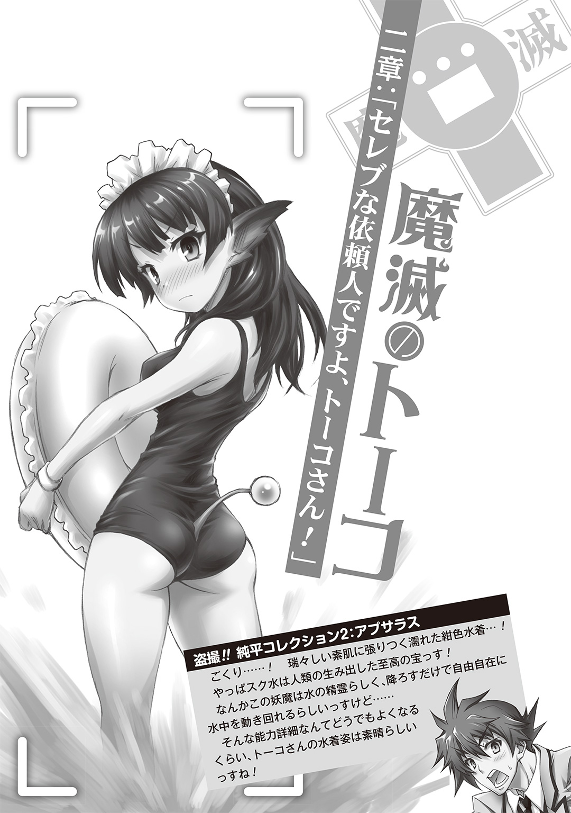
少女は、大江朱音と名乗った。
大江グループの名を、この日本で知らない者はいないだろう。明治時代から続く財閥で、主に造船や金融という分野で日本経済を支える超一流のコンツェルンである。
朱音さんは、なんとその大江グループ会長の孫娘なのだそうだ。
世界が違いすぎて逆にそのすごさが実感できないが、たぶん彼女くらいのお金持ちになれば、牛丼屋で躊躇せずに大盛り卵乗せを注文してしまうくらいのレベルに違いない。ぼくなんか、万年並盛オンリーだというのに。
「そもそもセレブが牛丼屋になど入るわけがないと思いますけど......。というか、純平くんの発想の侘しさにはさすがに悲哀を感じますね。これが格差社会ですか」
なぜかトーコさんに生温かい目を向けられてしまった。
着物の少女――朱音さんが小切手を渡したあの瞬間、事務所の空気ががらりと変わった。いや、空気というかむしろ、支社長の態度が一変したのである。
「いやいやお客様。お茶を出すのが遅くなって申し訳ない。......それと、こちらの羊羹もぜひ御賞味くだされ。お口にあえばよいのですが」
玉藻ちゃんがその小さな手で、ソファーに座る朱音さんに恭しくお盆を差し出していた。お盆の上には、京都から取り寄せた玉露と、老舗和菓子屋の高級茶請けが載せられている。
「あら。支社長さん自ら、これはどうもご丁寧に」
「いえいえ。お客様に対してこの程度の気遣いは当然ですよ。はっはっは」
普通の客にはスーパーのお徳用ティーバッグしか振る舞わないくせに、相手が超金持ちだと知るやいなやこの態度である。ボスのあまりの変わり身の早さに、ぼくとトーコさんは開いた口が塞がらなかった。
もっとも玉藻ちゃんのほうは、そんな部下の失望などおかまいなしに、忙しなく揉み手を繰り返しているようだったが。
「朱音さんは、なんでもお若い身でありながらいくつか会社を経営しておられるとか。いやあ、実にご立派ですな」
「いえ、そこまで褒められることでもございませんわ。結局は祖父の言いつけですから」
どうやらこの少女、大江グループ傘下の企業をいくつか所有し、自ら経営まで行っているらしい。若手経営者というヤツである。
朱音さんは手をふって謙遜していたが、ぼくとほぼ変わらないであろう年齢で社長というのはかなりすごいことではないのだろうか。社長令嬢というのはそこそこ聞くが、令嬢社長とは珍しい。経営学や経済学に長け、リーダーシップをとれるような人間でなければ務まらない仕事だろう。この大江朱音という少女、一見物静かな印象を覚えたのだが、どうやらただのお金持ちのご令嬢というだけではないのかもしれない。
家柄も容姿も才能も、ついでにおっぱいも、全てにおいてパーフェクトな美少女なのだ。
「大江建築本社においては取締役、そしてここ十六夜市では支社長のポストをいただいております。もしかしたら皆さんの家や学校、この事務所なんかにも、私どもの会社が関わっているかもれませんわね」
朱音さんが、はにかむように笑った。
大江建設は、全国規模の有名な巨大ゼネコンであり、関連企業として傘下に無数の建築、土木、設計事務所を抱えている。その支配力が及ぶのは十六夜市も例外ではない。住宅からビル、市のランドマークにいたるまで、様々な建築業に携わっているようだ。一説には、十六夜市の建物物には全て大江の息がかかっている、と聞いたこともある。
それなら確かに、あの馬鹿げた額の業務報酬も頷けるというものだ。同じ支社長という立場ではあるが、うちの玉藻ちゃんとは懐具合がまるで異なるのである。
「なるほど......。金持ちってのは、やっぱ違うもんすねえ」
「ポケットマネーでこんなに出すんですからね。わたしたちとは根本的な価値観から異なるのかもしれません」
トーコさんがため息をつく。
あんな法外な額を提示されてしまっては、赤字まみれの魔滅社十六夜支社に選択の余地などなかった。というか、目の色が￥マークに変わった玉藻ちゃんが、二つ返事で依頼を引き受けることを承諾したというわけである。
「金でホイホイ動く妖魔王......。威厳の欠片もないっすね」
「まあ、煩悩でホイホイ動くあなたが言っても、説得力は皆無ですが」
トーコさんが淡々と呟いた。
実際彼女の言うとおり、ぼくにとっては朱音さんが金持ちだとか、報酬を弾んでくれるとか、そういう要素はどうでもいい。なんでも言うことをきいてくれる――あんな可愛い巨乳お嬢様が、その約束をしてくれただけでお腹いっぱいなのである。
だからぼくは、なんだかんだ言いつつも玉藻ちゃんが朱音さんの依頼を受ける気になってくれたことに心底感謝していた。簡単な魔滅業務をさっさとこなすだけで、あのワガママボディがぼくのものになるなんて......。
実に胸が躍る話である。おっぱいだけに。
「では、さっそく本題ですが」
朱音さんの対面のソファーに座り、玉藻ちゃんが話を切り出した。
「屋敷に妖魔が入りこんだ、とおっしゃっていましたな。具体的には、どのような妖魔に、どういった被害を受けているのですか」
「どのような妖魔か......は、わからないのですけれど。具体的に姿を見ていないもので」
「姿を見ていない？」
着物の少女はこくり、と頷くと、湯吞に口をつけた。
たったそれだけの動作なのに、ぼくにはなぜかそれがすごく洗練されたものに思える。これがお嬢様マジックというヤツだろうか。
「うちの屋敷の離れに、古い蔵があるのです。かつて屋敷が祖父の別邸だったときに利用されていた蔵で、色々と趣味の品が収納されているのですが......。その蔵の中に何者かが入りこんで、ときどき荒らしているようなのですわ」
「その、何者か、というのが妖魔だと？」トーコさんが、じっと鋭い視線を向けた。「姿を見ていないのに、どうしてそれが妖魔だとわかるのです？」
「ああ、すみません。説明不足でしたわね」
朱音さんが、にこりと目を細めてみせた。実に可愛らしい。
「蔵の鍵は、定期的な掃除のとき以外は私が管理しているため、屋敷の誰も入れないようになっているのです。なのにときどき、誰かが侵入して荒らしている形跡がある。しかも、入り口の鍵がこじ開けられたりしていた様子はございませんでしたわ。こんな不可解なことができるのは、不思議な力を持つ妖魔だけでしょう？」
「そうでしょうか。古今東西の密室トリックを駆使すれば、別に妖魔でなくても鍵のかかった蔵に入ることができるかもしれませんよ」
トーコさんは顔色を変えず、唐突にそんなことを告げた。
対する朱音さんは、急に難癖をつけられて困惑しているのか、きょとんとした表情で首を捻っている。
初対面のお客さんに対して、いささか失礼すぎやしないだろうか。いくらトーコさんに壊し屋の気があると言っても、魔滅社の信用破壊までされてもらっては困る。
「あ、あのー......トーコさん。いきなりそんな意地悪なこと言わなくても......」
「いえ、わたしは可能性を追求したいだけですよ。今回の依頼は、ただでさえ途方もないお金が動くのです。わざわざ十六夜支社が出ばって、結局それで妖魔の仕業じゃなかった......なんてオチだったら、お互い損でしょう」
「ああ、そういうことでしたのね。私てっきり、嫌がらせをされたのかと思ってしまいましたわ」
朱音さんが、ほっとした様子で笑みを浮かべる。少しだけトーコさんに棘のある視線を向けていたが、まあ、気持ちはわからないでもない。
「妖魔の仕業だと思った理由は、もちろんそれだけではありませんわ。蔵の地面で見つけた奇妙な足跡も、その根拠のひとつです」
「ほう。奇妙な足跡ですとな」
玉藻ちゃんが興味深げに身を乗り出した。
「はい。大きさが五センチくらいの、小さな生き物の足跡......でしょうか。歩幅の狭い二足歩行で......まるでお人形かぬいぐるみが、蔵の中を気ままに歩き回っているような跡なのです」
「それが、蔵が荒らされた日に見つかるのですね？」
支社長の問いに、大江のご令嬢はこくりと首を縦に振った。
そんな足跡が発見されているというのなら、話は決まりだ。やはりこれは妖魔の仕業に違いない。ぼくはトーコさんに向けて口を開いた。
「足跡が五センチくらいの小さい生き物......。そういう妖魔に心当たりはあります？」
「そうですね。そのくらいのサイズだと、西洋由来の屋敷妖精が有名でしょうか。建物の中を勝手に掃除したり、あるいは逆に散らかしたり......。人間から衣類を貰うまで、使用人気取りでずっと家屋に住み続ける妖魔です。純平くんも聞いたことくらいはあるでしょう」
「ああ......。なんか昔、子供向けの本かなんかで、そういう妖精の話を読んだことがあるっすね」
家の中を散らかすという妖精なら、今回のケースにどんぴしゃりである。そのブラウニーとかいう妖魔が、朱音さんちの蔵を荒らす犯人に違いない。
「屋敷妖精の討滅危険度は最低のＥクラス。正直言って、わたしたちが出張る必要性すらないくらいに無害な妖魔です。それこそ純平くんでも――雑魚バイトの純平くんでもなんとかできてしまうレベルですね」
わざわざ雑魚バイトと言い直すあたりに引っかかりを覚えたものの、これもトーコさんなりの愛情表現だと思って流すことにした。
「にしてもこれ、本当にあんな大金貰っていい仕事なんすかねえ......。ぼくとしちゃ、ちょっと貰いすぎな気がするんですけど」
ぼくのような健全な青少年にとってみれば、「なんでもしていい」約束の時点ですでに報酬は破格なのだ。そのうえ大金まで貰ってしまうなんて、どうにも悪い気がする。
そんなぼくの顔色を察して、朱音さんが口を開いた。
「お金のことは、どうかお気になさらないでくださいまし。たとえ妖魔の脅威がどれだけ低かろうと、大江家が困っているのは事実です。お救いいただけるのでしたら、相応のお礼をせねば失礼だというものですわ」
「ああ、そういうことならしかたがないですな。我々も、報酬をいただけるというなら遠慮はしません。精一杯お力添えいたしますよ。ははは」
キツネ耳の幼女が、悪い大人の顔で笑っていた。実際、遠慮する気などさらさらないのだろう。欲の皮の突っ張り方だけは王様級である。
一方、トーコさんは対照的に、どこか納得のいっていない表情を浮かべていた。
「雑魚妖魔の退治だけで一攫千金......。なんだか、話がうますぎるような気がするのですが」
「ふふ。それだけ私が、皆さんに期待しているということですわ」
着物の少女が、くすり、と頰を緩めた。
美少女にそうまで期待されてしまってはしかたがない。平和主義者のぼくも、身体の芯から闘志が満ち溢れてくるのを感じていた。
立ちあがると、ぼくはおもむろに彼女の手を取った。
「ぼくにお任せください朱音さん！ たとえどんな悪鬼が相手だろうと、必ずこの早池峰純平が、あなたと大江家をお救いいたしましょう！」
突然手を握られたことに驚いたのか、朱音さんは「まあ」と目を見開いていた。
手を軽く握っただけでこの反応。純粋培養......というか彼女、見た目通りに男性に免疫がないのかもしれない。
彼女はきょとんした表情で「あ、その......ええと......？」と所在なさげに視線を彷徨わせていた。
こういう初心な反応、実にいい。
「なあに、そんなに緊張しなくても大丈夫です。業務執行後、例の〝約束〟を果たしていただくときには、ベッドの上までぼくが優しくリードしますから」
「え？ ベッドってなんです？ え？」
そうやってぼくが彼女の白魚のような細い指先の感触を堪能しようとしていると、横合いから咳払いが聞こえてきた。
「彼女から汚らわしい手を放しなさいこのゴミ虫」
トーコさんから放たれた強い殺気に反応し、ぼくは両手をすかさず引っこめていた。
さすが十六夜支社が誇る魔滅の巫女である。実に恐ろしい。〝神降ろし〟すらしていないのに、殺気だけでぼくをここまで震えあがらせるとは。
しかし確かに、公衆の面前で報酬の具体的内容に言及するのは避けたほうがいいかもしれない。相手は温室育ちのお嬢様なのだ。彼女の機嫌を損ねて依頼取り消しになっては元も子もない。慎重に事を運ばねば。
「あ、えーと。冗談っす。冗談。やだなあもう、トーコさんも朱音さんも、本気にしないでくださいよ」
「あ、あはは。冗談だったのですね。申し訳ありません。私、あまり同年代の殿方とおつきあいの経験がないもので――」
ぺこり、と頭を下げる朱音さん。
むしろ謝らなければならないのはこちらのほうだろうに、実に素直でお優しいご令嬢である。
「まあ、ジュンペーのアホは放っておいてやってください」
玉藻ちゃんが口を開いた。
「......それはともかく、これからその問題の蔵に案内していただいてもよろしいですかな。善は急げと言いますから」
「そうですわね。このくらいの時間なら、ちょうど夕餉の用意もできている頃でしょうし」
事務所の壁掛け時計を一瞥し、朱音さんがニッコリと目を細めた。
「夕食？」
「ええ。せっかくですから皆さま、私の屋敷でお食事などいかがでしょうか。せっかく我が家のために尽力してくださるというのですから、そのくらいのおもてなしはさせてくださいませ」
タダ飯をご馳走してもらえると聞いて、ぼくと玉藻ちゃんにはその申し出を断る理由などなかった。怪訝な表情を浮かべるトーコさんを引き連れ、そのまま大江邸の自家用車で十六夜市郊外の高級住宅地へと向かうことになったのである。
「車でけえ......。座席ふかふか......。なんすかこのセレブ空間......」
黒塗りのリムジンに乗ることなど、おそらくこれから先の人生では、まずありえないだろう。お付きの執事さんの手で社内の冷蔵庫から飲み物を振る舞われ、ぼくはちょっとした上流階級気分に浸っていた。
「お金ってあるところにはあるものなんですね......。毎日後輩のセクハラに耐えつつ、命がけの魔滅業務に従事している自分が、なんだか馬鹿らしくなってきてしまいました」
というのは、大江邸を目にしたトーコさんの台詞だ。
彼女が嘆きたくなるのも無理はない。この無駄に豪華な豪邸を見たときには、ぼくだって似たような感想を覚えた。
「うおおおっ......すげえ......！ もうこれ、すげえとしか言えないっすよ......！」
まず広さがすごい。建物と庭をあわせて、十六夜高校の二倍くらいは敷地面積がある。
塀に囲まれた外観はまさに、平安時代の貴族の邸宅を思わせる和風建築だった。
地面には白砂が敷き詰められ、丁寧に剪定された松の木や、天然の岩石がところどころに散在している。それらが揺れる石灯籠の灯に照らし出される様子は、なんとも抒情的ではないか。外人観光客あたりが見れば「ワビ、サビ、ビューリホー！」と叫びだしてもおかしくはないだろう。
「う、羨ましくなどないぞ。かつてはわしも、妖魔王としてこのくらいの城を構えていたことはあるのだ。今はその、確かにアレだが......」
事務所の倉庫暮らしの支社長様が、侘しげにそう呟いた。「タダ飯が食えるから」という理由でひょこひょこついて来たキツネ耳幼女に、妖魔の王たる威厳は微塵も感じられないのだが。
鹿威し付きの大きな池の脇を通る。
透き通った池の中には、立派な錦鯉が何匹も泳いでいるのが見られた。
この鯉一匹一匹の毎日の世話代が、ぼくの時給よりも遥かに高いと知ったときのショックは、今年一番の衝撃だと言っても過言ではない。もう、目に映るもの全てが、すべからくハイソなのである。
そんな庭園の異次元っぷりに呆けているぼくたちを見て、朱音さんがくすりと微笑んだ。
「本来この屋敷は、東京に住む祖父の休暇用の別邸として建築されたものなんです。庭園造りに多少こだわりがあるのは、そのためなのですわ」
「はあ......多少って感じじゃないっすけどねえー......」
「まあ、立派なのは見てくれだけです。屋敷の中は私や使用人たちが暮らす普通の生活空間ですから、さほど見て楽しいものではございませんよ」
朱音さんにそんなことを言われながら、ぼくたちは客間に案内されたわけだが。
「いえ。......中だって、十二分にすごいと思うのですが」
トーコさんが息を吞むほど、建物の内部だってヤバかった。
すでにこの客間からして、すでに庶民の常識を遥かに越えている。
イグサの匂いが香り立つ青い畳。凝った彫りが施された巨大な木の柱。ふすまには金箔が張られ、なんだか高尚そうな日本画が描かれている。「普通の生活空間」と言うわりには、広さも調度品も超高級旅館を思わせるようなスペックであった。
「これが普通なら、十六夜支社の応接室なんか犬小屋っすよね」
「ははは......何も言うな......。わしもなんだか自分の城の矮小さを突きつけられているようで、軽くショックなのだ......」
玉藻ちゃんが、卑屈な笑みを浮かべつつ肩を落としていた。
まあ、その気持ちもわかる。
実際ここは、雑居ビルのワンフロアなんかとは比べてはならないレベルの異空間なのだ。例えばいま尻の下にある座布団をひとつとっても、あまりにフワフワすぎてなんだか逆に落ち着かないくらいだ。
なんだか居心地悪いので、ぼくは部屋の中をいろいろ調べてみようと立ちあがったりしてみたのだが、
「純平くん。そのあたりの壺や掛け軸にみだりに触れないほうがいいと思いますよ。たぶんそれらひとつひとつが、あなたの命の何百倍も価値があるものでしょうから」
と、トーコさんにたしなめられてしまう。
結局この壺がいくらなのか気にはなったが、聞いたら聞いたで今度は違う意味でショックを受けそうなので、ぼくはおとなしく座布団に戻ることにした。
壺の値段を知るということはすなわち、トーコさんがぼくの命をいくらぐらいに見積もっているかということも自ずと把握できるということだからである。
しばらくして襖が開かれ、朱音さんを先頭に、着物姿の女中さんたちが入室した。彼女たちが運んできたのは、どうやら夕食のお膳のようである。
「では皆さま。夕餉の準備が整いましたわ。ごゆるりとお楽しみくださいませ」
朱音さんが指示を出すと、女中さんたちはぼくらの前にてきぱきとお膳を並べはじめた。
海の幸山の幸がふんだんに盛られた豪華和膳である。鮮やかな彩りと美味しそうな香りが、食べる前からぼくの食欲を刺激してやまない。
これはとても楽しみである。
「では」
いただきます、と朱音さんに会釈してから、ぼくは料理を口に運んだ。
「おお......うすうすは予想してたけど、やっぱ料理もうめえっ......！」
脂がたっぷりと乗った刺身は、舌の上でとろけそうなほどの味わいであった。もちろんステーキも負けていない。一口で柔らかな食感が口に広がり、実に幸せである。やはり、ファーストフードやファミレスの肉とは一線を画す高級食材のようだ。
添えられた山菜もカットや並べ方に一工夫がなされており、なんだか視覚的にも美味しい気がする。きっとお屋敷専属の料理人でもいるのだろう。
「こんなの、ぼくたち庶民がそう簡単に口にできるもんじゃないっすね。ああ......来てよかった！」
「ふふ、喜んでいただけで光栄ですわ」
朱音さんが、ぼくの対面でにこにこと微笑みを見せてくれていた。彼女はきっとホストとして食事に同席してくれているのだろう。料理とあわせて、これまた目の保養である。
高級和膳に着物美少女。大江邸はまさに、日本の伝統文化が生み出した極楽であった。
「こういう仕事なら、毎日でも来たいくらいなんすけどね」
料理に舌鼓を打つぼくの傍らで、しかし、トーコさんは「むう」と煮えきらない表情をしていた。
「なんすかトーコさん、辛気くさい顔して」
「いえ、少し気になっただけです。たかがイタズラ妖魔の撃退に来たくらいで、こんなおもてなしを受けることになるだなんて」
目の前の色とりどりのお膳を凝視しながら、トーコさんが訝しげな表情を浮かべた。
「破格の依頼料の件といい、この接待じみた料理といい、やはり何かが腑に落ちないのです」
「うーん、考えすぎじゃないっすか？」
彼女の空のコップにジュースを注ぎながら、ぼくは努めて明るく言った。
「トーコさん、いっつも真面目っすからねえ。たまにはこういう日に、肩の力を抜いてリラックスしたほうがいいっすよ」
「純平くんはむしろ、普段から肩の力を抜きすぎなのではないかと思いますけど」
ため息をつきつつ、トーコさんはコップの中の液体を軽く嚥下した。
いまだに憮然とした表情を浮かべてはいるものの、どうやら彼女も彼女なりに歓待を受ける気になってくれたようで、少しだけ内心ほっとする。これだけの豪華料理を出されてそれを食べないなんて、やっぱりもてなす側には失礼だろうし。
「肩の力を抜くといえば――」
ぼくは、対面の着物の少女をじっと見つめた。
より正確に言えば、彼女の身体の部位の中で最も目立つ部分を凝視していた。
というか、事務所で彼女に会って以来ずっと、そこ以外ほとんど目に入っていなかった。
「朱音さんって、肩凝ったりしないんですか？」
「え？ どうして――」
と首をかしげたところで、朱音さん自身ぼくの視線の意味に気づいたらしい。
「も、もう。早池峰さんったら。冗談はやめてくださいませ！」
少しだけ顔を赤らめ、朱音さんは両手で胸部を覆い隠してしまった。
ああ、こういう反応ってすごくいい。実にセクハラ――もとい、小粋なジョークの言い甲斐がある。
満足げに頷くぼくに、トーコさんが冷ややかな目を向けた。
「まったくですよ。純平くん、冗談はその存在だけにしてください」
「まるでぼくの存在そのものが冗談みたいな言い方ですね......」
「冗談だったらいいな、と常々思ってはいますが」
彼女は言うだけ言って、黙々と刺身をつつく作業に戻ってしまった。何気に心が張り裂けそうな一言である。
「んく......んく......ぷはあっ！」
一方、朱音さんの隣の席では、キツネ耳の幼女が徳利をラッパ飲みしていた。
畳に転がっている徳利の数は、一、二、三......全部で六本。この短期間の間にそれだけの量を空けたのだ。彼女の顔はすでに真っ赤になっていた。
どうやらトーコさんとは対照的に、我らが支社長様は完全にご優待ムードに浸っているようである。
「いやあ、タダ酒というのは本当に旨い。まさに天上の美酒ともいうべき味わいよの......。おおい、もう一本追加してくれい」
玉藻ちゃんが、小さな手で高らかに徳利を掲げてみせた。
教育委員会のお偉いさんが卒倒してもおかしくないような光景だったが、よく考えてみればこの支社長、人間でも子供でもなかったのである。妖魔ババアの飲酒ごとき、誰が止めることでもないのだろう。
朱音さんや他の使用人の方々もそれをわかっているのか、とくに咎める様子はないようだった。
ふと朱音さんが席を立ち、ぼくの隣にやってくる。
「早池峰さんも一杯どうです？ ウーロン茶ですけど」
「え？ そ、そんな恐縮ですよ。天下の大江グループのご令嬢にお酌してもらうなんて」
「いいんですよ。早池峰さんも、今夜は大切なお客様ですから」
瓶の注ぎ口を向けられ、ぼくは慌てて空のコップを差し出した。
朱音さんはくすりと笑みを浮かべ、コップにお茶を注いでいく。
鼻腔をくすぐる、彼女の髪の柔らかな薫り。朱音さんの綺麗な睫毛と柔和な目元がこんなにすぐ近くにあることに、ぼくは内心の動揺を禁じ得なかった。やっぱりこのお嬢様、実にお美しい。
そしてもっとも目を惹くのはやはり、そのダイナマイトなふたつの果実であろう。
「ごくり......」
彼女がうまい具合に上半身を傾けてくれると、襟元からちらりと見えてしまうのである。
ぷるぷると弾力を帯びた、真っ白な丘陵が。
――これはぜひ、覗きこまずにはいられないっ......！
お茶の注がれるコップの位置を微妙に調整しつつ、ぼくはベストな角度を確立すべく体を左右に揺らしていた。あと少し......あと少しで、谷間が――。
しかし、それがまずかったのかもしれない。
「......何をなさっているんですの？」
「あ、いえ。その......」
ぼくの挙動が、どうやら朱音さんに不審に思われてしまったようだ。
「ええと、運動不足の解消のため、ちょっと軽い運動をですね――」
「もしかして早池峰さん、私の胸を覗こうとしていたんじゃありませんか？」
ぎくり。さすが社長というだけのことはある。鋭すぎる洞察力であった。
訴訟問題に発展する前に、ここは平謝りする場面だろう。トーコさんのツッコミによって培われた反射神経によって、ぼくはとっさに額を畳へとこすりつけていた。
「ごごご、ごめんなさいっ！ 覗こうとしてました！ でも覗いてません！ 神に誓って未遂です！」
「まったくもう......。さっきから、しょうがないひとですわね」
朱音さんはちょっとだけ頰を膨らませ、ぼくのオデコを「めっ」と指で弾いた。
「嫁入り前の女性にオイタはいけませんわ。ちゃんとあとで責任をとってくださいましね」
「せ、責任......？」
これはどういうことだろう。トーコさんなら一切の容赦なく言葉の刃を突き刺してくるであろう場面だというのに、朱音さんにはあまり怒っている様子は見られない。
それどころか「責任をとって」ときた。
これはつまり、「純平くんに肌を見られちゃった以上、結婚するしかないわ」ってことなのでは......？
やばい。なんだそれ、すごくいい。
朱音さんくらいの巨乳美少女相手なら、責任のひとつやふたつ、とる覚悟はいつでもオッケーである。というか、むしろとらせてくださいというレベルだ。
「......生きててよかった......」
早池峰純平、感動の極みである。
ブラック企業でバイトを始めて苦節半年。普段は先輩社員に役立たずだのセクハラだのと罵られてばかりの毎日だが、とうとう苦労が報われる日がやってきたのである。
そう、神様はちゃんとぼくを見ていたのだ。
「これをきっかけに朱音さんと交際スタート......恋愛......同棲......そして初夜......！ 艱難辛苦を経て、周囲から祝福されてのゴールイン......そしてゆくゆくはぼくが大江グループを背負って立つ若社長に......！」
目の前に広がるのは、輝かしいまでの薔薇色の人生であった。
「早池峰さんが若社長、ですか」
脇の畳の上に瓶を置きながら、朱音さんが微笑んだ。
「実際、それも面白いかもしれませんわね。魔滅社のお仕事で幾多の死線をくぐり抜けてきた方なら、不況の波すら乗り越える手腕がおありでしょうし。......案外、私などよりも上手く経営をこなせてしまうかもしれません」
「おお......！ 朱音さん、実にお目が高い！ 実にその通りっすよ！ ぼくくらいのクレバーな男が、野蛮な魔滅業務なんぞで一生を終えるなんてもったいなさすぎっすよね！ 自分でも常々、経営者向きなんじゃないかなあ、とか思ってたんすよ！」
令嬢社長に誉められるなんて、大変に気分がいい。ハイテンションに身を任せ、ぼくは彼女の肩に両手を置いた。
「朱音さん！ あなたと大江グループの将来は、ぼくに任せてください！ 愛の共同経営......そう、いっそのこと心も体も企業合併しちゃう方向で――」
と、そこまで言ったところで横合いから思いきり耳を引っ張られてしまった。
「あだだだだだ!? やめてくださいよトーコさん!?」
「おぞましい未来予想図を語らないでください。この魔滅社の面汚しが」
切れ長の目で睨みつけながら、彼女は一切手を緩めようとしない。
容赦のない先輩のツッコミにぼくが耐えかねている様子を見て、朱音さんが「あらあら」と目を丸くしていた。
「神凪さん。そんなに乱暴にしなくとも......」
「これがうちの教育方針です。部外者の方にご迷惑をおかけするわけにはまいりませんから」
「力で押さえつけるだけが指導ではありませんわよ。私ならば、もっと部下には温情ある態度で接しますけれどね」
朱音さんにそう言われ、トーコさんはぼくの耳を引っ張っていた手を離した。そして少しむっとした表情を浮かべ、
「なんです。魔滅社のやり方にケチをつけるつもりですか。まるで、自分のほうが純平くんをうまく扱えるかのような口振りですね」
「まるで、ではなく、実際にそうでしょう。彼の才能に気づいていれば、もっと有意義に使うべきだと考えるのは当然ですわ」
才能......。冗談などではなく、本当に彼女はぼくに経営者の才覚を見いだしているということなのだろうか。普段クズ扱いされているぼくとしては、実に新鮮なサプライズである。
「あなたが、純平くんの何を知っていると言うのです」
「十六夜支社さんの抱える秘密については、今回の仕事を依頼するに当たって、調べさせていただきましたわ。私、それなりに業界に顔が通じますので」
「............」
十六夜支社の秘密......いったいそれは何なのだろう。下っ端のぼくごときに皆目見当のつくところではなかった。
「いっそのこと、早池峰さんを大江グループに引き抜いてしまってもよろしいですか？ 彼、ぜひとも私の手元に置いておきたいくらいの人材ですし」
着物の少女が、くすりと目を細めた。対するトーコさんは、憮然とした表情で彼女を見つめている。
なんだこの空気。ふたりの少女の睨み合いによって、場が一気に凍えてしまったような気がする。どういうわけかこのふたり、あまり性格が嚙みあわないようだ。
「大江さん」トーコさんが口を開いた。「あなたがその歳でいくつもの会社を経営する辣腕経営者だということは理解できます。ですが、だからといって純平くんを渡す理由はありません。こんなのでも一応、わたしの大事な後輩ですから」
「大事な後輩......ですか。まるで恋する乙女のような台詞ですわね」
「こ、恋......!? トーコさんが？」
その発想には、さすがのぼくも驚きである。普段からぼくをゴミクズのごとく足蹴にしているトーコさんが、実はこちらに恋心を抱いているなど考えもしなかった。
だがしかし。
だからこそ、という考え方もできる。普段の冷徹な態度はいわゆる好意の裏返しなのかもしれない。一昔前に流行った「ツンなんとか」というヤツだ。彼女がこうして朱音さんによるぼくのヘッドハントを拒んでくれているあたりに、その片鱗を窺い知ることができるのだ。
「すみませんトーコさん！ 今まで気持ちに気づいてあげることができなくて......。まさかトーコさんが、そこまでぼくに夢中だったとは気づきませんでしたよ」
「はあ？」
ものすごい勢いで首をかしげられてしまった。これも素直になれない乙女心の表れなのだろう。
「......いいんです。照れ隠しは」
「照れ隠し......？ 意味がわかりませんが」
「きっとアレですね。ぼくが本当に朱音さんに取られたら――そう考えるだけで、胸の奥がなんだかチクチクしちゃうような、少女コミックのヒロインのごとき揺れる想いというわけですね」
「......あなたが何を言っているのか、まったくわかりません」
トーコさんが呆気に取られたような表情を浮かべている。きっと本心を指摘されてしまったことで、驚いているに違いない。
「でも心配には及びませんよ。たとえぼくが若社長になったとしても、トーコさんには愛人二号として変わらぬ寵愛をへぶううっ!?」
言い終わらないうちに、彼女が持参していた竹刀袋がぼくの鳩尾に叩きこまれていた。中に入っているのは〝草薙〟、その鋼鉄製の鞘である。地味に痛い。
さすがはトーコさん、気配すら悟らせない的確なツッコミであった。
「純平くんの愛人にされるくらいなら、いっそ名誉ある死を選びます」
「そ......その前にぼくが死にそうなんですけど......」
この容赦のなさも、やっぱり素敵。
「まったく。わたしがあなたのようなヘタレに好意を抱いているはずがないでしょう。妄言もたいがいにして下さい」
そんなぼくたちを見て、朱音さんが「ふふ」と柔らかな笑みを浮かべた。
「なんだかんだ言って、仲がよろしいことで」
「は？」
トーコさんが、心外極まりない、といった目を着物の少女に向けていた。
朱音さんが小さく頰を緩めた。
「まあ、ご心配なさらないでくださいまし。早池峰さんを取る取らないという話は半分冗談のようなものでしたから。ただ、神凪さんの反応が見てみたかっただけですわ」
「わたしの反応......？」
「ええ。大事なものを取られそうになったとき、あなたがどういう顔をするのか。......意外と独占欲が強いのですね、魔滅の巫女さんは」
朱音さんに言われたのが気に障ったのか、トーコさんは憤然と彼女から視線を外しつつ、
「たとえ無用の長物であろうとも、どこの馬の骨かもわからない女に自分のものを取られたくない。......ただそれだけですよ。別におかしいことはありません」
言い放つと、再びふたりの少女の間に沈黙の帳が降りた。
ふたりとも丁寧な言葉遣いでありながら、どうも内容が棘々しい。一触即発の雰囲気である。
こういうとき、年長者こそが空気を察して止めるべき立場だと思うのだが、うちの支社長は知らん顔。意気揚々と十四本目の徳利を注文していた。タダ酒だからって調子に乗りすぎである。
こうなればもうしかたがない。ぼくが止めるしかないだろう。
「と、ともかく朱音さん。妖魔退治は安心してぼくらにお任せください」
「まあ。頼りになるお言葉ですね」
「ええ、存分に頼りにしてくださっていいんですよ。その代わりさっきの約束のほうは――」
朱音さんは一瞬きょとん、とした顔を浮かべ、
「ああ。『できることならなんでもする』というアレですね。もちろん忘れてはおりませんわ。金銭報酬とは別に、みなさまの望み、どんなものでも大江グループの総力を挙げてかなえさせていただきます」
彼女はにこり、と可愛らしく頷いて見せた。
どうやら、朱音さんはぼくのほうには好印象を持ってくれているようであった。頼めば取締役の席のひとつやふたつ、簡単に譲ってくれそうな雰囲気である。
まあ、若社長というのもビッグな夢だとは思うのだが、それ以上にぼくにとって魅力的なのは朱音さんのビッグなおっぱいだった。やはり、選ぶのならば後者だ。それこそが健全な青少年としてのあり方だろう。
「美少女令嬢との淫らなひととき......。ああ、あのマシュマロおっぱいが一晩ぼくのものになると考えただけで、夢が膨らむっすね......！」
ぼくがそんな皮算用に身悶えているうちに、朱音さんは「では」と席を立ちあがった。
「仕事の指示を出さなければなりませんので、私はお先に失礼させていただきますわ」
さすがは大江グループの取締役。こんな遅い時間でも何かと忙しいのだろう。
「お仕事っすか。大変そうっすね」
「ええ。申し訳ありません。今夜は色々とやることがあるんですの。みなさま、ごゆっくりお食事をお楽しみくださいませ」
逆に言えば、彼女はそんな忙しい時間の間をぬって、わざわざぼくたちにお酌をしてくれたということになる。これは、彼女がよほど魔滅社に期待をしてくれているのか、あるいは早池峰純平という男性の魅力にメロメロになってしまったかのどちらかだろう。もちろん個人的には、後者であることを切に願ってやまないわけだが。
「それでは、これで......」
彼女は戸口で深々とお辞儀をし、周りに控えていた使用人たちを引き連れて部屋を出ていってしまった。客間に残されたのは、ぼくとトーコさん、それからアルコール臭漂うキツネ耳幼女の三人だけだった。
「ふぃぃ......。飲んだ飲んだ。たらふく飲んだ。他人のおごりでのむ酒というのは。いつの世も最高だな。コンビニのワンカップとはやはり違う。ここはまさに地上の楽園というべき場所だな」
焦点のあわない視線で、玉藻ちゃんが「がはは」と品のない笑い声をあげた。
どうやら彼女、最近の赤字続きのせいで、ろくにお酒を楽しめていなかったらしい。久方ぶりの美酒の味に、すっかり気を良くしているようだ。
「ぼくもまあ、このサプライズ接待には十二分に満足ですけどね」
普段じゃ絶対食べられないような豪華な食事に加えて、見目麗しいご令嬢のお酌のサービス。不満などあるわけがない。
眉間に皺を寄せているのは、トーコさんひとりだけだった。
「おかしい......やはり、絶対におかしいです」
「おかしいって、何がっすか」
「あの大江朱音という女、どこか胡散臭い。そう簡単に信用すべきではないと、わたしの直感が告げています」
膳に乗った高級料理を見つめながら、魔滅の巫女は呟いた。
疑い深いというかなんというか、彼女は出された料理にもほとんど手をつけていないようだった。ぼくから見ればちょっとヘソを曲げすぎ、と思えなくもない。朱音さんと気があわなさそうなのは、なんとなく見ていてわかるのだが。
「たかがＥクラス妖魔の退治ごときでここまで歓待されるなんて......。この不相応なご馳走すら、なにかの罠じゃないかと思えるくらいですよ」
「気にしすぎじゃないっすか。朱音さんは美人で優しくて気だても良くて、おまけに巨乳で、しかもぼくたちをこんな宴会に招待してくれるくらい、心の広いお嬢様だった――そういうことでいいじゃありませんか」
「......本当に彼女は人格者でしょうか？ 下心が服を着て歩いているような純平くんに対して、なんの躊躇いもなくお酌できる人間なんて、まともな神経をしているとは思えません」
相変わらずの、歯に衣着せぬ物言いだった。
「やはり、このような屋敷に長居するのは危険です。手早く仕事をすませて、早々に立ち去るべきでしょう」
実に彼女らしい、生真面目な意見である。
しかしそんな正論も、ぼくと玉藻ちゃんの士気を奮い立たせるまでにはいたらなかった。こんな豪奢な料理を前にしては、せっかくの腰も重くなるというものだ。
「むう。せっかちだの。せめてデザートの水菓子を食べ終わってからでもいいではないか」
「そうっすよ、トーコさん。宴はまだまだこれから。この雰囲気なら、これからゲイシャさんとか来てもおかしくないじゃありませんか。席を立つのはまだ早いんじゃないっすかねえ」
のんべんだらりと食事を楽しむぼくたちを睨み、トーコさんが露骨な舌打ちをする。あれは完全に、ぼくたちのダメ人間っぷりに苛立ちを覚えている様子だ。
「論外ですね。......だったら、わたしひとりで仕事を終わらせてきます」
トーコさんが刀の鞘を握り、おもむろに立ち上がる。
「え？ マジで行っちゃう気ですか？」
「ええ。どうせ大した相手でもありませんし、わたしひとりでもなにも問題はないはずです。どうせ支社長は〝神降ろし〟要員ですし、純平くんにいたっては、最初から戦力外ですからね」
神凪瞳子は、こうなってしまうと梃子でも動かない頑固者である。
もちろん、彼女は魔滅社指折りのエキスパートなわけだし、単独でもきちんと依頼を遂行してくれることだろう。そのあたりはまったく心配していない。
ただ気がかりなのは、またひとりで派手に暴れた挙げ句、この大江邸を派手にぶち壊してしまうのではないかということだ。仮にもしそんなことになれば、十六夜支社に突きつけられる賠償金の額はこれまでの比ではないだろうし、こちらに好感を抱いてくれた朱音さんにも愛想をつかされてしまいかねない。そうなれば、楽しみにしているあの約束さえも反故にされてしまう危険性があるのだ。
せっかく立った貴重なお嬢様フラグを折られるのは、やはりもったいなさすぎる。
ここはやはり、お目付役が必要な場面だ。
「わかった、わかりましたよ。ぼくも行きますって」
「......役立たずは不要だと言っているのに」
トーコさんが、ぼくをジト目で睨みつけながら深いため息をついた。
まったく、可愛げのない。
木々は夜風にざわめき、聞こえてくるのはキイキイという奇妙な虫の音。
懐中電灯であたりの様子を探りながら、トーコさんが庭園を先導する。
月もない夜空の下、大江邸の和風庭園は明らかに何か「出そう」な雰囲気に満ち溢れていたが、まったく恐怖心を感じないのは、ひとえに頼りになる先輩が隣にいるおかげだろう。
「しかし、土蔵を荒らすイタズラというのが、ただ単に、中のモノの置き場が変わるだけだったとは」
朱音さんいわく、土蔵の中には彼女の祖父が収集している壺や掛け軸などの骨董品のコレクションが大量に納められているそうだ。その祖父とやらは収集品の管理にうるさい老人らしく、毎晩使用人たちに蔵の清掃を義務づけているようなのだが、最近、使用人たちが蔵の中に足を踏み入れるたびに、それら壺や掛け軸の置き場所が微妙に変わることがあるのだという。
密室の中で物品が移動するなど、片づけを担当している使用人たちにとっては気味の悪いことに違いない。もっとも、あくまで位置が移動するだけで、とくに何かが壊されたり紛失したりといったことはないらしい。実に些細なイタズラである。
「話を聞く限り、危険度は、かぎりなくゼロに近い妖魔ですね。普通屋敷妖精でも、置物が壊されたりといった被害は多少出るものです。そこまで無害な妖魔がいるなんて、わたしでさえ知りませんでした」
「そうっすよね。物の位置を置き換えるなんて、イタズラとも言えないくらいですよ。ぼくが仮に朱音さんにイタズラするとしたら、もっと面白いことするけどなあ」
「面白いことって......あまりいい予感はしませんが、一応尋ねます。何ですかそれは」
「え、そりゃもうあのマシュマロを後ろから遠慮なく――うごおおっ!?」
嬉々として話しはじめたところで、トーコさんの剣の鞘が遠慮なくぼくの腹部に叩きこまれていた。
「それはもうイタズラというか、セクシャルハラスメントの領域です。大江グループ相手に訴訟沙汰はシャレになりませんよ、純平くん」
「......ぐ、うう......シャレにならないつったら、その猫耳フォームで容赦なくツッコミいれるトーコさんも大概っすよ......？」
例の現代巫女服（どう見てもコスプレ衣装）に着替えたトーコさんは、〝神降ろし〟をすませ、いまや完全に臨戦態勢であった。〝ケット・シー〟の耳が妖気を探知し、ぴょこぴょこと彼女の頭の上で動いている。
この状態の彼女なら、相手がどんなに隠密能力に長けた妖魔だろうと鋭敏にその存在を捉え、一太刀で斬り伏せてしまうに違いない。実に頼りがいがあることだ。
「やはり、〝神降ろし〟の必要などなかったかもしれませんね」トーコさんが口を開いた。「こうして蔵に近づいても、とくに強い妖気も感じませんし......生身のままでも十分退治できる相手でしょう」
「いやいや、何が起こるかわかりませんし、用心しておくに越したことはありませんよ。転ばぬ先の〝神降ろし〟です」
「純平くん......あなた、そうやってもっともらしいことを言いつつ、結局は単に『儀式』を覗きたかっただけでしょう？」
ぼくを蔑みの視線で見つめるトーコさん。
先ほどぼくが〝神降ろし〟の儀式を覗こうとした一件が、よほど腹に据えかねたに違いない。
「ええそうですよ。あんな素晴らしい儀式、健全な男子であれば好奇心を抱いて当然です。それのなにが悪いってんですか」
「開き直らないでくださいこの破廉恥野郎。悪いというなら、覗きをしようとしておいて一切悪びれないその性根からして最悪です」
唐突だがここで、その素晴らしき儀式の概要について説明しよう。
実は〝神降ろし〟とは、単独でできる儀式ではない。妖魔の力を身に宿すこと自体は、確かに神凪の巫女の能力なのだが、宿すべき妖魔が近くにいなければそれも行えない。
つまり儀式には別途、妖魔を呼び出す介添人の存在が必要不可欠になるわけだ。
そして、驚くなかれ、その介添人とは、妖魔王たる〝白面金毛九尾〟――我らが支社長、玉藻ちゃんなのである。千の妖魔を束ねると自称する彼女は、部下たちとどんなに物理的に距離が離れていようと、世界中からその魂を召還することができるらしい。
もちろん、〝ケット・シー〟もそのひとりだ。トーコさんは玉藻ちゃんを通じて、この化け猫妖魔の力を貸し与えられているというわけである。
「力の授受をするためには、巫女と介添人との間に濃厚な粘膜接触が必要......。まったくもって厄介なルールです。そのせいで、儀式のたびに純平くんみたいな変態の目を気にしなければならないのですから」
トーコさんがため息をついた。
濃厚な粘膜接触。つまるところそれは、ディープでアダルトなキッスのことである。
しかもただの口づけではない。妖力の授受効率を高めるためにはなるべく装身具を身につけない状態が望ましいらしく、儀式はなんと、巫女も介添人もほぼ半裸で行われるらしいのだ。
実に興味深い――いや、けしからん儀式である。
いっそぼくも混ざりたいと常々主張しているわけだが、当然あのふたりがそんなことを許すわけもない。
今日もまた、ぼくはひとり除け者。儀式を行うというトーコさんたちに冷たく客間から閉め出されてしまったのである。
だがこの早池峰純平は、そこで諦めるような浅い男ではなかった。
「男として、桃源郷を覗かずにいられるわけがない......！」
好奇心の赴くまま、ぼくはこっそりと襖を開け、廊下からそのあられもない儀式を目に焼きつけようとしたわけである。
きっとこの襖の向こうには、めくるめく百合色のエロスが広がっているはず。
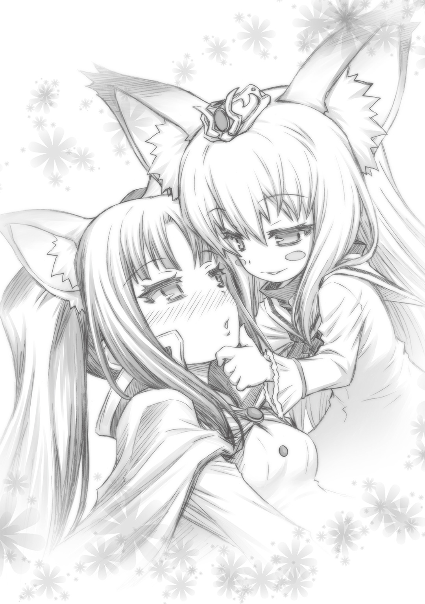
――ああ、だめです支社長。そこは敏感なところでっ......！
――ふふ、トーコはまだ若いな。こちらの唇でも儀式を交わしたがっておるくせに。
――そ、そんなことは決して。はむ......んっ......！
――遠慮はいらぬ。どうれ。もう十分火照っておるではないか。
――い、いけません......！ あああ、らめえっ......！
屋敷に響きわたる嬌声。
交差する白く柔らかな肢体。
美少女と美幼女は、互いを求めあいながら熱く絡みあう......。
密室でくんずほぐれつ口づけを交わしあうふたりの痴態を妄想するだけで、ぼくのアドレナリンは全力全開待ったなし状態へと移行していった。
「いざゆかんパラダイスへ！ ......って、あれ？」
勢い勇んで襖に手をかけたぼくを待っていたのは、トーコさんの虫けらを見るように冷たい眼差しであった。
「あなたのようなミジンコ以下の低脳の行動を、このわたしが予想していないとでも？」
そう。とどのつまり、今日も未遂に終わってしまったというわけだ。
覗く前にトーコさんに勘づかれてしまい、ぼくの脳天に草薙の鞘という鉄槌が下されてしまったのである。
もう通算五十連敗くらいだろうか。毎度のことだが、実に悔しい。
「トーコさん、相変わらず容赦ないんだもんなあ......」
それが、つい一〇分くらい前の話だった。
ぼくが殴られて気絶させられている間に〝神降ろし〟の儀式はつつがなく終了してしまったらしい。
「ある意味最近じゃ、覗きに来た純平くんを昏倒させるという部分も含めて、儀式の一部だと捉えていますから」
「なんつー非人道的な話っすか......」
腫れた頭のタンコブが夜風に撫でられ、ひんやりと気持ちいい。
まあそんなことがありつつ、ぼくたちふたりは問題のイタズラ妖魔を探すために土蔵へと向かっているわけである。
ちなみに玉藻ちゃんは、客間で飲み直しを始めていた。あの子ほんと、いったい何しに来たんだろう。せめて欠片でもいいから支社長らしい態度を見せてほしい。
「上司は飲兵衛。後輩は覗き魔。間に挟まれるわたしの苦労を考えてほしいものです」
トーコさんが半目でぼくを睨みつけた。
「覗き魔だなんて人聞きが悪い。男ってのは皆、性の探究者なんです。リビドーには逆らえない生き物なんすよ」
「どうしようもない言い訳ですね。まだ殴られたりないんですか、あなたは」
「まあ、何度殴られようとぼくは決して膝を屈したりしませんけどね。たとえこの脳漿がぶちまけられようとも、いつかは絶対にトーコさんたちの秘密の花園を垣間見てやるつもりです」
意気ごんでみせたぼくだったが、トーコさんの反応は「ああそうですか」と淡泊なものだった。
「......せめて普段の魔滅業務にも、そのくらいの意気ごみを見せてくれればいいんですが」
呟きつつ、トーコさんは懐中電灯で前方を照らした。
ライトが照らし出したのは、漆喰で塗り固められた石の壁だった。どうやらこの壁は大きな建物の一部らしく、年季の入った木造の扉がついている。
「これが、噂の土蔵っすかね。蔵というわりには、うちのアパートよりデカいっすけど」
「そうみたいですね......。内側から微弱な妖気を感じます」
トーコさんの猫耳センサーが、ぴこんぴこんと反応していた。便利なものである。
朱音さんから預かった鍵で門扉にかかっていた閂を外し、ぼくたちは土蔵の中へと足を踏み入れた。
「中は......けっこう暗いっすね」
蔵の中に光源はない。かなり上のほうにある天窓だけが唯一の採光手段のようだった。
とはいえ今夜のような月のない夜では、その天窓すら役に立たないため、ぼくたちは手にしたライトでじっくり周囲を探っていくしかなかった。
「また変な妖魔とか出なきゃいいんすけど」
室内はけっこう広めのようだ。
壁を背に棚がいくつか置かれ、その上によくわからない壺や置物、額に入れられた絵画の類が並べられている。なんだか、学校の美術準備室を彷彿とさせる雰囲気だ。
古そうな蔵に見えてもそんなに埃っぽくないのは、使用人のみなさんの清掃が行き届いているからだろう。さすがは天下の大江グループ、見えないところの管理もぬかりはないらしい。
怪訝な表情のトーコさんが、地面に落ちているお椀を指さした。
「純平くん。ちょっとそのお椀、気になりませんか」
「これっすか？」
整然とした蔵の中で、なぜかひとつだけ、ぽつんと地面に伏せられていたお椀。古ぼけて薄汚れていたが、別に高価なものには思えない。
「なんか......あからさまに怪しいっすね」
「ちょっと調べてみましょうか」
お椀の前に屈み、それを持ちあげてみる。
するとどうだろう。なんとそのお椀の中に、小さな人影を見つけたのである。
突然の小人の出現にぼくは思わず「うおっ」と跳び上がったが、どうやら驚いたのは相手も同じようだった。
「は、恥ずかしい......！ あんまり見ないでけろ」
「なんだお前......？」
それは体長十センチにも満たない、小さなオッサンだった。マスコットサイズの体をぷるぷると震わせ、こちらをじっと見上げている。
パンチパーマに赤ら顔。髭面で、ころころと丸く太った身体に虎縞柄のジャージを着こんでいる。
これでビールでも片手に持っていれば、甲子園球場の応援席でくだを巻くタイガースファンのオッサンに見えないこともない。だが、実際に彼が手にしていたのは紙コップではなく、金棒であった。それも、つまようじくらいの大きさの可愛らしいミニチュア金棒だ。
「鬼......？ ちっこい鬼に見えないこともないっすけど......」
「そうだべ。オラ、こう見えて悪逆非道、凶悪無比な赤鬼様だ。おどれらごとき、二秒でけちょんけちょんに――」
「ていっ」
人差し指でその小さいオッサンをつついてみると、彼は「おふっ」と悲鳴をあげて、床に転がった。
「......や、やめてけろ！ 暴力はよくないべ！」
赤鬼様は、ぼくごときに二秒でけちょんけちょんにされていた。
どうやらこいつ、見た目通りめちゃくちゃ非力なようだ。今まで出会ってきた妖魔の中でも、最弱の部類に入るだろう。
「屋敷妖精かと思っていたら、鬼の類でしたか......。希少種でしょうか。こんなサイズの鬼もいるものなのですね」
トーコさんがもの珍しそうな表情で、その自称赤鬼のオッサンを見下ろしていた。
確かに、鬼というにはまったく迫力が足りない。むしろ一寸法師といったほうが近いくらいだった。
「それで、あなたがこの蔵の品物にイタズラをしていた犯人ですか」
「ん、んだ。この家の高慢ちきな金持ち連中に、鬼の恐ろしさを教えてやろうと思ったんだべ」
「それでこうして毎晩、品物の配置替えを？」
「んだ」
赤鬼氏は腕組みしつつ、得意げに頷いてみせた。
恐ろしさというよりは、もはや小ささしか感じない。いろんな意味で。
「別に放っておいても大した害はなさそうですが......一応、雇い主からはあなたを退治しろと言われています。しっかりと魔滅を執行せねばなりませんね」
トーコさんがそういうと、赤鬼氏はぎょっと目を丸くした。
「お、おめーら、あの魔滅社の連中だべか!?」
「ああ、その通り。悪い妖魔をお仕置きするのがぼくらの仕事だ。......それっ」
「あおうっ!? 腹はやめれ！ 腹はっ！」
「このこのっ！ 朱音さんを困らせる悪党め！ どうだ！」
しばらくぼくは指先でそのオッサンをこづき回し、久々の「俺つえー」感に浸っていた。相手が弱いって最高。いつもこういう魔滅業務なら望むところである。
「おふうっ！ 勘弁してくれだよ！」
「恐れ入ったか！ ふははははは！」
声高に笑うぼくを、気づけばトーコさんが呆れたような表情で見つめていた。
「普段ヘタレなくせに、弱者に対しては超強気......。すがすがしいほどのクズっぷりですね、純平くん」
「た、たまにはいいじゃないですか。ぼくが妖魔を圧倒できる機会なんてそうそうないんですし」
「まったく......見下げ果てた男です」
トーコさんはため息をつき、腰の刀に手をかけた。
「ともかく、遊んでいる暇はありません。早いところこの仕事を終わらせて、この胡散臭い屋敷を出ましょう」
鞘から抜かれた草薙が、〝ケット・シー〟の妖気を吸ってその刀身を蒼く輝かせた。空気が震え、蔵中の物品がカタカタと揺らめきはじめる。
「......って、トーコさん!? その剣使うつもりなんすか!?」
「当然です。相手がいかに矮小な存在だろうと、その妖魔が人間に仇をなした以上、全力をもって滅ぼさねばなりません」
刀を上段に構え、トーコさんは足下の赤鬼氏を見下ろした。
彼女のあまりの威圧感に、赤鬼氏は地面に腰を抜かして身を振るわせている。
「か、かか、堪忍してけろ！ オラ、本当は『あの方』に頼まれただけで――」
「問答無用。......秩序ある人の世に、邪悪な妖魔の存する由はありません。神凪の名において、魔滅を執行いたしましょう......！」
「ちょ、ちょっと待った！」
決め台詞とともに刀を振るおうとするトーコさんを、ぼくは慌てて後ろから羽交い締めにして押しとどめる。
「必殺技はダメです！ また吹っ飛んじゃいますから！ 蔵ごと吹っ飛んじゃいますから！」
「離してください！ というか、どさくさ紛れに変なとこ触らないでください！ この痴漢！ 変態！ 猥褻犯！」
「いくら罵られようが離しません！ やりすぎたら玉藻ちゃんにまた説教されちゃいますよ!?」
「しかたありません、こうなったら純平くんごと一刀両断に――！」
トーコさんがそんな物騒なことを口にした瞬間だった。
草薙の刀身からふっと蒼い光が消え、蔵の中の振動が止まる。
あれだけ強力な妖気を放っていた魔滅の刀が、どういうわけか突然眠ったようにおとなしくなってしまったのである。
「あ......〝神降ろし〟が――」
「どうしたんすか、急に」
「わかりません。こんなタイミングで〝神降ろし〟が解除されるなんて」
尻尾のなくなってしまったお尻をさすりながら、トーコさんが首をかしげた。
「なにか胸騒ぎがします。介添人たる支社長の身に、何かが起こったのかもしれません」
「何かって――？」
ぼくが問おうとしたそのときだった。
背後で蔵の戸がぎいっ、と開かれ、聞き覚えのある声がかけられたのである。
「動かないでくださいね、魔滅社のお二方」
声の主は牡丹柄の着物の少女――この屋敷の主、大江朱音さんである。
彼女は周りに使用人たちを侍らせ、戸口で柔らかな微笑みを浮かべていた。
「あ、朱音さん？ それはいったい......」
彼女が小脇に抱えていたものを見て、ぼくとトーコさんは目を丸くする。それは、四肢をだらんと弛緩させた玉藻ちゃんの身体だった。
「あうー......ひっく。わしゃまだ飲める。飲めると言っておろうがぁぁ......」
彼女の顔はゆでだこのように真っ赤になり、目は完全に据わっている。
我らが支社長は、終電を逃した新橋のサラリーマンを彷彿とさせるような、見事な酔っ払いぶりを露呈していた。
警察官にでも発見されれば、即留置所送り間違いなしであろう。いや、玉藻ちゃんの見た目なら、いったいどこに送られるのであろうか。
「な......！ ど、どうしちゃったんすか。玉藻ちゃん」
ただ酔っ払っているだけならよくあることだ。ぼくだって別に心配はしない。
異様だったのは、彼女の顔に貼りつけられていたモノである。
それは、なにやら複雑な文様の書かれたお札だった。
まるで往年の中華ホラーのごとく、玉藻ちゃんの額には長方形のお札が貼りつけられていたのだった。
「ああ、これですか」
抱えた玉藻ちゃんを見下ろして、着物の少女がくすり、と微笑む。
「ご心配には及びません。この子の妖力が少し邪魔でしたので、封印させていただいただけですわ」
「封印......？ 支社長は腐っても妖魔の王ですよ？ それを、あなたが封印したというんですか？」
眉をしかめるトーコさんを見て、朱音さんが楽しそうに口元を歪めた。
「ええ、そうですわ。妖魔王といっても御しやすいものですね。あれしきのアルコールでへべれけになってしまうのですから」
お札が貼られた玉藻ちゃんの身体を地面に落ろし、朱音さんは優雅に微笑む。
「この私、名前負けしない程度にはお酒の強さに自信があります。そんな私相手に飲み比べを挑んできたのが、彼女の運の尽きでしたわね」
「名前負け？」
彼女は何を言っているのだろう。
朱音さんの様子は、どこかおかしい。いったいなんのために、玉藻ちゃんの力を封印などしたのだろうか。
「ああ、姐さん、ようやく来てくれただか！」
ぼくの足下にいた赤鬼氏が、喜びの声を上げながら朱音さんのほうに駆けだしていった。
「怖かっただよ。オラ、殺されるかと思っただよ」
「ああ、危険な任務ご苦労様ですわ。あなたのおかげで、憎き魔滅社の巫女を無力化することができました」
朱音さんは赤鬼氏を手のひらに乗せると、そのパンチパーマを指先でよしよしと撫でつけた。心地いいのか、小さいオッサンはデレっとした表情を浮かべている。
「あ、あの......これっていったいどういう？」
「まだわかりませんか？」
朱音さんが、ぼくを見て薄い笑いを浮かべた。それはさきほどお酌をしてくれたときと同じ笑みのはずなのに、どこかが決定的に違っている。
「あなたたちは、まんまと私たちの罠にかかったのですわ」
「罠......？」
「イタズラ妖魔が出るなんて話は、まったくのデタラメ。全ては、白面金毛九尾を捕らえ、あなたたちの戦力を封じるためのお芝居だったにすぎません」
「へ......？」
彼女の言葉に、ぼくは一瞬頭が真っ白になる。
朱音さんがぼくらを騙していたなんて、そんなの信じられるはずがない。綺麗な女の子は、すべからく噓なんてつかないものなのだ。
「じょ、冗談ですよね？ 蔵の妖魔の話も、ぼくと結婚するって言ってくれたことも、全部噓だったなんて......」
「え？ 結婚？」
素っ気なく返されてしまう。何を言っているのかわからない、とでも言いたげな、ぽかんとした表情で。
「いやほら、『責任とってもらう』って......」
「ああ、あれのことですか。あれは『私の肌を見た者は、死をもって償ってもらう』程度の意味ですわ。だいたい、この私があなたごとき庶民と結婚するなんて、普通に考えてありえないじゃありませんか」
かなり上から目線な、酷い言い草であった。
華奢で儚げなご令嬢という第一印象すら、芝居だったということなのだろうか。
「じゃ、じゃあまさか......例の約束も......？ 朱音さんのナイスバディを好き放題貪っていいというあの約束も、真っ赤な噓だったってことですか!?」
「まあ確かに『なんでもする』とは言いましたけど......。そこまで下劣なことを考えていたとは思いませんでしたわ」
朱音さんが、心底汚らわしいものを見るような視線をぼくに向けた。これはかなりショックである。
「ともあれ、そんな約束は論外です。この大江朱音が、あなたたちに与えるものなど何ひとつありませんわ」
「そんな......」
彼女の言葉に打ちのめされ、ぼくは地面に膝をついてしまった。
あの約束が噓だとしたら、ぼくはいったい何のためにここまで来たというのだ。
「なんてこった......。すっかり信じてたってのに......」
「そんなに驚かないでください。全部が全部噓だというわけでもありませんから。少なくとも『屋敷に妖魔が出る』という部分だけは、紛れもない真実です」
朱音さんが周囲の使用人たちを睥睨し、ぱちん、と指を鳴らした。
なんと驚くべきことに、それを合図にして使用人たちの身体が、むくむくと大きく膨れあがっていくではないか。
隆起した筋肉は作務衣を引き裂き、まるで鋼のような赤黒い肌が外部に露出する。彼らの瞳はらんらんと輝きはじめ、頭には凶悪に尖った二本の角が出現した。
瞬く間に、使用人たちは身長三メートルを超える異形の妖魔へと変じたのである。
「ひ、ひいっ......」
彼らの迫力に、ぼくは思わず後ずさる。
その姿は紛れもなく、〝鬼〟そのもの――。赤鬼氏などのような可愛いものではない。逞しく巨大な身体を持った悪鬼の群れが、ぼくたちを睨みつけていたのである。
ただひとり、朱音さんだけはその美しい姿を変えていなかったが、彼女はこの場にいるどの鬼よりも圧倒的な存在感を放っていた。
彼女がただそこにいるだけで、まるでトーコさんの猫耳フォームのような、ひしひしと肌を刺すようなプレッシャーを感じる。ここにいたってようやくぼくは、朱音さんがただの人間ではないことに気がついた。
彼女は間違いなく、強力な妖魔なのである。
「あなたが見た目通りのお嬢様でないことは、うすうす感じていました。ですがまさか、昨日のビフロンスなんか目じゃないくらいの化け物とは......」
トーコさんが、ごくりと息を吞んだ
「化け物、とはまた心外ですわね。魔滅の巫女さん。私たちは由緒正しい鬼の一族なのですよ」
着物の少女が、にこり、と笑いかける。
「古くからここ大江の屋敷は、鬼の一族の棲み家です。そしてこの私、大江朱音こと四十三代目酒吞童子は、当代における彼らの筆頭なのでございます」
「ま、まじっすか......！ 朱音さんが鬼......!? この毛むくじゃらでデカいマッチョメンどもの仲間!?」
「あら。今の時代、正体を隠して人間社会に溶けこんでいる妖魔など、ザラにいるではございませんか。......ねえ、早池峰さん」
朱音さんが艶のある流し目をぼくに向ける。
どういう意味なのだろう。ぼくにはまるで見当もつかない。
「大江グループだけ見ても、会長の祖父以下、首脳陣はすべて鬼の一族なのですわ。日本経済の何割かは、確実に妖魔のものと言っても過言ではありません」
「え、そ、そうなんすか......!?」
告げられた意外なトリビアに、ぼくは素直に感心してしまった。
もしかすると、テレビに出ているような政治家や芸能人の中にも、妖魔がいるのかもしれない――。
ぼくがそんなことを考えて呆けていると、トーコさんが口を開いた。
「なんとなく怪しいとは思っていましたが、完全にしてやられましたね。まさか支社長を狙われるとは」
「ふふ。迂闊でしたわね。十六夜支社さん」
朱音さんが、地面に横たわる玉藻ちゃんを一瞥した。
「えうー......？ まぁだ飲むんか？ よーし、いいぞぉ、わしはどこまででもつきあうぞ？」
彼女は白砂の上をごろごろと転がりながら、ろれつの回らない声色で何かを呟いている。
いかに最強の妖魔王と言っても、力を封印されてしまえばただのアル中幼女である。
完全に足手まといだった。
「この魔滅の札の封印は簡単に解けるものではありませんわ。解除に独特な手順が必要なことは、あなたたちもご存じでしょう？」
朱音さんが勝ち誇ったような表情を浮かべた。
魔滅社に勤めているのであればもちろん、あの札の仕様は十分によく知っている。業界で知らぬ者はいないくらい、有名な品物なのだ。どんな妖魔の力をも封じる強力な魔滅兵器――それがあの姉妹札である。
「たしか、二枚の札で封印を保持するっていう――」
姉妹札は、姉札と妹札の二枚によって妖魔の力を封じる呪符であり、たとえうち一枚が破壊されても妖魔の封印は解除されない。封印を解除するためには、妖魔に貼られた一枚と、術者が有するもう一枚を、両方とも破壊する必要があるのである。
そういう意味では、実に堅固な封印が期待できる魔滅札だというわけだ。
玉藻ちゃんクラスの妖魔の力を封じるなら、そのくらいの魔滅兵器を用いるのは確かに道理ではある。それをまさか、みすみす敵に使われるとは思ってもみなかったが。
朱音さんが、力なく地面に横たわる玉藻ちゃんに目を落とした。
「この娘の生殺与奪の権利は、今や私にございます。このまま首の骨を折られたくなかったら、おとなしく投降してくださいまし」
「......しかたありませんね」
トーコさんが、手にしていた草薙を鞘ごと朱音さんのほうへ投げ捨てた。
着物の少女はその刀をつかみ取ると、おもむろに鞘を引き抜いてみせた。その瞬間、周囲の空気が明らかに変化する。
「なるほど、これが噂の妖刀ですか......。存外、美しいものですわね」
朱音さんの妖気に反応しているのだろうか、刀身が灼熱の色に染まっていく。大気が震え、蔵の中の壺や額縁がガタガタと揺れ動き始めた。外の木々も、強風に煽られているように枝をしならせていた。
まるで周囲にあるものすべてが、彼女の圧倒的な妖気に畏怖を感じているようだ。そして当然、その中にはぼくも含まれているのは言うまでもない。
「では試しに......」
彼女が「そうれ」と刀を一振りしてみせると、その瞬間、刀身からぶわりと強い熱風が巻き起こった。蔵の中なのに、思わず身を強張らせてしまうほどの突風であった。
「あはは。すごいものですわ！」
例えるなら、熱したフライパンで正面から殴られたような、そんな感覚である。
ぼくはその衝撃に耐えきれず、「ひい」と悲鳴を上げ後ろへとすっ転んでしまった。普段の魔滅業務で、こんな強烈な妖気に当てられることはそう多くはない。もしかすると、〝神降ろし〟をしたトーコさんと互角か、それ以上ではないか。
「こ......これってもしかして、大ピンチっすか......？」
支社長が人質に取られ、トーコさんは武器を失い、そしてぼくは相変わらずのお荷物っぷり。これはもう、完全にチェックメイトである。
「さすがは鬼の頭領、酒吞童子を名乗るだけはありますね」
トーコさんが不機嫌そうに口を開いた。
「――それで、あなたたちの要求は何です。罠を張ってわたしたちを待ちかまえていたくらいです。ただで返してくれるつもりなどないのでしょう？」
冷静な態度こそ崩さないものの、彼女の顔色には若干の憔悴が混じっているのが見てとれる。
いかに彼女がプロフェッショナルだといっても、八方塞がりなこの状況を打開する術はなさそうだった。〝神降ろし〟が封じられてしまった以上、ぼくたちにはもはや、投降以外の選択肢は残されていなかったのである。
「ご安心ください。そんなに難しい要求をするつもりはありませんわ」
朱音さんが、くすりと口の端をつりあげた。
「――神凪瞳子さん。私どもが欲しいのは、魔滅の巫女たるあなたの首です」
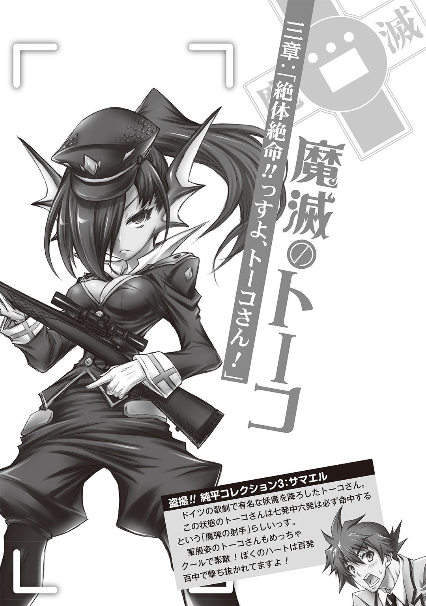
暗く冷たい空気が、深夜の土蔵を支配していた。
先ほどから歯の根が合わず、背筋が凍えるように寒い。だがそれは、漆喰の間から吹きこむすきま風だけが原因ではないだろう。
「......うう、なんてこった」
間近に迫る死の恐怖に怯えながら、ぼくはがたがた震えて膝を抱えていた。
朱音さんがその正体をさらけ出してから、もう小一時間ほどは経過していただろうか。
離れの土蔵の中に押しこめられたまま、ぼくとトーコさんは、ただ無為に時間を浪費していた。処刑まで、ここで過ごせと申しつけられてしまったのである。
「あと数時間の命だなんて......」
自らを酒吞童子だと名乗ったあの着物の少女は、明朝の日の出とともにトーコさんを処刑することを宣言した。神凪の巫女をさらし首にすることが、鬼の頭領たる彼女の悲願らしい。
なぜ朱音さんがトーコさんの命を狙っているのか、その理由は定かではない。
だが、これまで数えきれないほどの邪悪な妖魔を斬り伏せてきたトーコさんのことだ。きっと妖魔にとっては悪名高い存在なのだろう。彼女の命を狙う妖魔がいたとしても、なんらおかしくはない。
しかし腑に落ちないのは、
「なんでぼくまで一緒に殺されなくちゃなんないんすかね......」
明朝の処刑の対象には、ぼくや玉藻ちゃんまで含まれていたのである。
――目障りな魔滅社の人間には、全員消えてもらいましょうか。
あの美しい朱音さんが、よもや笑顔でそんなことを言い放つとは思わなかった。
ぼくのような人畜無害な少年を殺したところで、妖魔にはなんの得があるというのだろう。完全なとばっちりである。
「こんなあからさまに怪しい依頼、引き受けよう、なんて言ったのは誰ですかまったく......！」
「終始ノリノリだったのは、純平くん自身だと思いましたけど」
頭を抱えるぼくに、トーコさんの冷ややかな視線が向けられた。
まあ、まさに彼女の言う通りなので、何も言い返すことができないわけだが。
そうやってぼくがぐちぐちと泣き言を言っている間にも、トーコさんは土蔵の中をあちこち動き回り、脱出経路を探しているようだった。
さすが妖魔退治のエキスパートだけあって、精神的にもタフである。
「......ダメですね。当然ながら隠し扉なんてありませんし、天窓にも手が届かないようです。素直に出口の扉を使う以外、外に出られる手段は皆無でしょう」
トーコさんが首を振りつつ、淡々と告げた。
「――まあ逆に言えば、あの扉さえなんとかすれば脱出できるということですが」
「なんとかって、それが一番難しいんじゃないっすか......。だって、外にはめちゃめちゃ怖そうな門番の鬼がいるわけですし」
扉の隙間から外の様子を窺ってみると、屈強そうな鬼が一匹、この蔵を見張っているようだった。彼は般若の如き険しい表情で、金棒片手にじっとこの門を注視している。
「......おいおめえら、よもや脱走しようなんて考えちゃいねえべな!?」
扉の外から、ドスの利いた声が聞こえてくる。もうその迫力だけで縮みあがりそうなくらい、恐ろしげな声色だった。
「い、いえいえ。そんな逃げようだなんて滅相もございませんよ。......へへへ」
「ならいいけんどもよ......。もしおめえらがここから一歩でも外に出たら、処刑を待たずにオラたちで食っちまってもいいって言われてんだかんな。覚悟しとけよ」
どうやらそれが朱音さん――酒吞童子の命令なのだろう。
よほど給料がいいのか根が真面目なのか知らないが、どうやらあの鬼は彼女に強い忠誠を誓っているようで、監視には一部の隙も感じられなかった。
こんな寒い夜の見張りなんて、ぼくなら三分で投げ出しているところだ、実にご苦労なことである。
「簡単に逃げられそうな雰囲気じゃないっすね。......せめて何か武器になるようなものがあれば、話は違ったんでしょうが」
外の鬼には聞こえないよう、小声で呟く。
彼らに捕まった際、ぼくたちの持っていた魔滅用品はすべて没収されてしまっていた。トーコさんの草薙はもちろんのこと、護身用のナイフや清めの塩にいたるまで、一切合財取りあげられてしまっている。
蔵の扉ぐらいなら体当たりで壊せるかもしれないが、そんなことをした時点でゲームオーバーだ。あんな恐ろしい鬼相手になんの備えもなく立ち向かうなんて、まず無理だろう。五秒で肉塊になる自信がある。
「いえ、武器があってもどうでしょうね......。純平くんレベルの雑魚じゃ、たとえ対戦車ライフルで武装していたとしても秒殺がオチでしょう」
「......む。それは言いすぎじゃないですか、さすがに」
「いいえ。事実です」トーコさんが、無表情で首を振った。「ご存じの通り、鬼種の討滅危険度はＢクラス。魔滅社の精鋭が、数人がかりでようやく一匹倒せるか倒せないかという難易度なんですよ。そんな危険な妖魔に、あなたが太刀打ちできるとは思えません」
「むう......」
情けないことに、一切反論できないのがつらい。
鬼とは、古来から様々な伝承に登場する有名な妖魔である。
ポピュラーということはつまり、それだけ人間から恐れられる存在だったということであり、実際、そういう妖魔は高い妖力を持つ場合が多い。
話によれば、鋼の皮膚には刃物は通じず、その金棒は、岩を砕き大地を振るわせ、そして海さえ割るらしい。そんな鬼どもを相手にするだなんて、まず天地がひっくり返っても不可能だろう。
「まあ、現状の戦力で、鬼とまともに戦うのは無理だとしても」
「としても？」
「あの見張りの目をかいくぐる作戦なら、ないこともありません」
「おお、まじっすか!?」
トーコさんが、こくりと頷いた。
この絶体絶命の状況下において、冷静に作戦を立案できるなんて、さすがはうちのエースである。
「で、どんな作戦なんです」
「まず純平くんがこの扉を蹴破り、敵に向かって突撃します」
「む。なかなか勇気が要りそうな作戦ですが......。それで？」
「純平くんが鬼に美味しくいただかれている間に、わたしがこっそりと蔵を離脱します」
「へ......？ それで？」
「以上です。シンプルな作戦ですが、成功の可能性は高いでしょう」
トーコさんは、平然と言い放った。あまりにシンプルすぎて、絶句したのは言うまでもない。
「......名付けて、『ここは俺に任せて先に行け』作戦です。いかがですか」
「いかがですかって......。それはアレですか、遠回しにぼくに死ねと」
「端的に言えばそうなりますね。......いつも役立たずなんですから、せめて散り際くらいカッコいいところを見せるのはどうでしょう。罰は当たらないと思いますよ」
「......じょ、冗談っすよね？」
ドＳにもほどがある。むしろ、この先輩こそが鬼である。
「ええ、冗談です」
くすり、と顔をほころばせるトーコさんだったが、その目は一切笑っていなかった。どこまで冗談でどこまで本気なのか、わからないのが怖い。
「――まあ、そのくらいの覚悟がなければ脱出不能というのは、事実ですけどね」
彼女は、ふう、とため息をついて腰を下ろし、壁に背をもたれさせた。
手元の腕時計によれば、現在時刻は深夜零時を少しすぎたところ。あと五、六時間もすれば夜が明けて、理不尽な処刑タイムが待っている。
自分たちにできることは、このまま座して死を待つことだけなのだろうか――。
普段あまり使っていない脳味噌をフル稼働させて、ぼくは今の自分に何ができるかを考えた。
考えに考えて、そしてようやくひとつの答えにたどり着いたのである。
「トーコさん」
「なんです。何かいい作戦でも？」
首をかしげる彼女に近づき、ぼくはその両肩に手を置いた。彼女が顔をしかめたが、今は気にしている場合ではない。
「いえ、まったく手段は思いつきませんでしたが......。ぼくたちが何をすべきなのかは、ハッキリとわかりました」
「はあ？」
「つまりですね。ぼくたちに今必要なのは、青春の思い出を作ることだと思うんです」
「青春の思い出......？」
ぽかん、と口を半開きにしているトーコさんに向け、ぼくはまくし立てた。
「そうです。トーコさんに出会って約半年、ふつう年頃の男女が一緒に仕事をしてりゃ、もっとこう、甘酸っぱい思い出のひとつもできるもんじゃないですか。でも、実際はなにもなかったんですよね......。悲しいことに」
「まあ、仮にあと百年一緒に仕事をしたとしても、あなたのようなゴミクズとの間に甘酸っぱい思い出が生まれる日は永久にこないと思いますが」
相変わらず毒気たっぷりの言葉だったが、気圧されることなくぼくは続けた。
「思い出といえばそういう心ないツッコミと、命がけの魔滅業務ばかり。......果たしてぼくは、こんな灰色の青春しか知らないまま死んでしまっていいんでしょうか。いや、いいはずがない。......ぼくたちは、もっと甘酸っぱい青春の思い出を作っておくべきなんですよ！」
「......で、何をしようって言うんです」
「トーコさん、一生のお願いです......！ せめて死ぬ前に、ぼくと男女の契りを――ぼくを男にしてくださいっ！」
地面に頭を擦りつけ、ぼくは必死に懇願した。
我ながら情けない姿だとは思うが、トーコさんと結ばれるためなら土下座くらい厭わない。こんな素敵な絶対領域を前にしながら、何もしないで死ぬなんてのはまっぴらゴメンなのである。ああこれぞ、童貞の気概というものだ。
「......バカですか、あなた」
ある意味予想通りの罵声が、冷たく響いた。
「ああいえ、ある程度バカなのはわかっていましたが、ここまで度を超したバカだとは思いませんでした。そんな煩悩全開の直球台詞で、わたしが素直に『はい抱いてください』と答えるとでも思ったのですか」
「ダメですよねー......やっぱり」
「あなたと恋人めいた行為をするくらいなら、鬼に食われたほうがまだマシです」
そんなふうに、彼女は素っ気なく言い捨てる。
こうまで言われてしまっては、ぼくにはもうどうすることもできなかった。
無理矢理彼女を拝み倒したところで、どうせ返り討ちにあうのが目に見えていることだし。
「ですが、まあ」
トーコさんが、少しだけ頰を染めながらぼくを見つめた。
「キスくらいなら、してもいいかと思っていますが」
「へ？」
ぼくは耳を疑った。今聞こえたのは、本当に彼女の言葉だったのだろうか。
あのトーコさんが。
これまでぼくに絶対に靡かなかった鉄壁のツンツン少女が、こともあろうに「キスくらいならしてもいい」などと。
数秒前に土下座までしておいてなんなのだが、ぼくにとって彼女のその言葉は到底信じがたいものだったのである。
「き、聞き違いじゃないっすよね？ 今トーコさん、キスしてもいいって言ったんですよね？」
「ええ。言いました」
「地面とキスさせてやんぜ、とか、ぼくを無に『帰す』つもりだとか、そういう悪辣な冗談ではないですよね？ ちゃんとマウス・トゥ・マウスの接吻をしてもいいって意味ですよね？」
「そうです。何度も言わせないでください。あなたと口づけを交わしてもいいと、そういう意味のことを言っているんです」
あれだけひとを罵倒しておいて、これはまたいったいどういう心境の変化なのだろう。さっぱりわけがわからない。
「正確に言えば『キスしてもいい』と言うよりは『キスするしかない』と言ったほうが正しいでしょうね。苦渋の決断というやつです」
「そ、それってどういう......？」
首をひねるぼくに、トーコさんがため息まじりに告げる。
「〝神降ろし〟ですよ。あくまで、儀式のための口づけをしようというだけです。ここから出て鬼をなんとかするためには、どうしたって妖魔の力を〝降ろす〟必要がありますからね」
「〝神降ろし〟......？」
そう言われても、ぼくにはまだピンとこなかった。
〝神降ろし〟の儀式が玉藻ちゃんとの百合ん百合んなプレイによって行われているのは知っているが、なぜここでぼくとその儀式をする必要があるのだろうか。
「通常、わたしは支社長という介添人を通じて、遠方の妖魔の力を借り受けているわけですが......〝神降ろし〟の方法はなにもそれだけに限りません。介添人の存在なしに、直接わたしの身体に力を取りこむことだってできるんです。力を貸してくれる妖魔さえ、すぐそばにいれば」
「で、その妖魔がどこにいるってんです？」
「ほら、目の前にいるじゃないですか。あなたのことですよ、純平くん」
彼女の切れ長の目が、まっすぐにぼくを見据えていた。
「はあ、ぼくですか......って、はい？ えっ？ うえええええええええっ!?」
耳を疑った。このぼくが、妖魔だって？
いったいトーコさんはなにを言っているのだろう。処刑が迫っている今、冗談を言っている場合ではないのに。
「い、いやいや。なに言ってんですかトーコさん。ぼくは見たまんまの、普通の人間ですよ？ 一ミリの妖力もない、純真無垢な男子高校生ですって」
「純真無垢......では絶対にないと思いますが」トーコさんが真剣な表情で続けた。「純平くんは、人間ではありません。れっきとした妖魔です。退治したわたしが言うんですから、間違いありません」
「退治した......？」
彼女の言葉に、ぼくは眉をひそめる。
「半年前――わたしとあなたが出会ったときのことを覚えていますか」
「ええ。忘れるわけがないじゃないっすか。妖魔に襲われて意識不明になったぼくを、トーコさんが助けてくれたんすよね」
病院のベッドの脇で、ぼくの目覚めを待ってくれていた素敵な女性。えらい脚の綺麗な美人がいるもんだなあと思ったことを、ぼくはハッキリと覚えていた。
その脚線美に惹かれるまま、退院したその日のうちにぼくは魔滅社の門を叩いたのだ。
「ああ......実はわたし、あの日あなたを助けたわけではないんです。倒しきれなかった妖魔の魂魄を、死んだ人間の身体に封印しただけなんです」
「はい？」
彼女のあまりの発言に、ぼくは開いた口が塞がらなかった。
「〝神降ろし〟の応用ですね。神凪の巫女にとって、妖魔を〝降ろす〟ことができるのは、自分の身体に限りません。相手がしかるべき適性がある人間なら、他人の身体に〝降ろす〟ことだって可能なのです。それがたとえ死体相手であろうとも」
「はあ......!? んじゃ、今モノを考えて、喋っているこのぼくは、ホントのぼくじゃないってことっすか......？ 妖魔の魂魄が、死体を操っているだけ......？」
「はい。その身体の持ち主――早池峰純平くんは、半年前に死亡しています。今のあなたは、その身体に残った記憶の残滓から、自分を早池峰純平だと誤解しているにすぎません。生前の記憶を引き継いでいるのも、そのせいでしょう」
「............」
ぼくはポカン、と口を開くことしかできなかった。
身体がすでに死んでいるとか、そのうえ人間じゃなかったとか、信じられないにもほどがある。
「あ、あはははー......じょ、冗談キツイっすよ、トーコさん」
「冗談などではありません。証拠もちゃんとありますし」
「証拠って」
「ゴミ以下の実力しかない純平くんが、この半年もの間、魔滅社に雇用され続けていること。それが確たる証拠です。早池峰純平がその身のうちに妖魔を封じる特異な存在だからこそ、観察対象として留め置かれているというわけです」
なるほど、言われてみれば確かにその通りだった。
自分自身、なぜ首にならないのか少し疑問ではあったのだ。
ぼくの存在意義は、実はモルモットのようなものだった――。そう考えれば、色々と腑に落ちることも多い。
トーコさんの言葉には、不思議と信憑性があったのである。
「そうか......ぼくは妖魔だったのか......」
「急にそんなことを言われたら、落ちこむかもしれませんが――」
トーコさんが珍しく、こちらを気遣うように声のトーンを落とした。
だが、ぼくは気を遣われるほど落ちこんでいたわけではない。それどころかむしろ、胸のうちでテンションが否応なく上がるのを感じているくらいだ。
「ふふふ......！ 妖魔......最高じゃないっすか！」
「は？ 純平くん、どうしてそんなにニヤニヤしているんです？」
「だって、ぼくが妖魔だからこそ、トーコさんがキスしてくれるってわけですよね？ さあレッツ〝神降ろし〟！ ねっとりまったりアダルトな粘膜接触を楽しみましょう！」
彼女の両肩をつかみ、ぼくはそのまま床へ押し倒した。
トーコさんは呆気にとられたような顔をしながら「ひゃっ」と短い悲鳴を上げる。
「ちょ、ちょっと待ってください純平くん。今、あなたという存在の根幹に関わる重要な話をしていたはずなのですが」
「そうっすね、だから？」
「いや、そんな軽い反応でいいのかと......。妖魔としての自分の正体とか、その他色々気にならないのですか」
「どうでもいいっす、そんなことは」ぼくは即答する。「ぼくにとって大事なのは、大手を振ってトーコさんとキスできるというその一点のみ......！ 正体だとかそんなのは二の次っすよ！」
「そういえばそうでしたね......。あなたはそういう、煩悩まみれのゲス野郎でした」
ぼくの真下で、トーコさんがやれやれとため息をついた。実に失礼極まりない。
「重ねて言いますが、この状況を切り抜けるには、あなたという妖魔を〝神降ろし〟するしか方法はありません。ですが、覚悟をしてください。〝神降ろし〟をするということは、わたしと肉体をひとつにして、あの屈強な鬼たちに立ち向かうということなのですから」
「ええもう、覚悟なんかとっくに完了してるっすよ！ トーコさんとのキスのためなら、たとえ四肢を引き裂かれたってかまいません！」
ぼくの心に、一切の恐怖はなかった。
むしろ、歓喜で身体がうち震えているくらいである。なんたって、長年憧れていた女の子が唇を許してくれるというのだ。他のことなんか考えている暇はない。
屈強な鬼？ 酒吞童子？ 何それ？
「まったく、欲望もここまで極まると、いっそすがすがしいくらいですね」
ため息をつくトーコさんの頰には、少しだけ赤みが差していた。ぼくの袖をつかむその手にも、若干の震えがあるように思える。もしかしたら、彼女も緊張しているのかもしれない。
「忠告しておきますが、これは別に、恋人同士のキスというわけではありませんよ。これは......そう、意味合い的には人工呼吸などと同じです。やむにやまれずにする行為であって、ノーカンです。完全にノーカンです。ノーカン以外の何ものでもありません」
「いや、そんなノーカン連呼しなくても、わかってますってば」
いざそんな可愛い顔をされてしまったら、ぼくだってドキドキしてしまう。
たとえこの口づけが生存戦略の一環だとしても、憧れの女の子とのファーストキスであることに変わりはないのだから。
「......ごくり」
ぷるんと柔らかそうな、桜色のくちびる。
そんなトーコさんの素敵な唇を見ていたら、もう我慢できない。〝神降ろし〟がどうとか、鬼と戦うとか、そんなことはもはやどうでもよくなってしまうほどである。
ちゅーしたい。ああちゅーしたい。ちゅーしたい......！ （感極まるあまり、一句詠んでしまうレベルだった）
「で、では、その、純平くん。目を閉じていてくれませんか。......さすがに恥ずかしいので」
「......は、はいっ！」
トーコさんに言われるがまま、ぼくは瞼を固く閉じた。
下から聞こえてくるのは、心持ち荒い感じの彼女の息づかい。頰にそっと添えられた手のひらが、ひんやりしていて気持ちいい。
ああ、夢にまで見たトーコさんとの接吻――それを考えるだけで、理性を手離してしまいそうになる。
だがここは我慢だ早池峰純平。ファーストキスくらいムードたっぷりにこなせないようでは、ジェントルマンとは言えない。
「い、いきますよ」
「ど、どっからでもどうぞ......！」
トーコさんがふうっ、と息を止めた。
ついに歴史的瞬間――ぼくとトーコさんの間に、愛の第一歩が刻まれようとしている！
ぼくは唇へともたらされるであろう極上の感触に期待し、その身を焦がしていた。
いたのだが。
耳に届いたのは、とんでもない一言だった。
「死ねええっ！」
「......へぶうううっ!?」
感じたのはなぜか、下あごを中心とした鋭い激痛。
仰け反ったまま後ろに倒れそうなほどの強い衝撃が、ぼくを襲っていたのである。
「......ど、どうして......。ぐふっ......」
それがトーコさん渾身のアッパーカットだと気づく頃には、ぼくの意識はすでに暗い闇の中へと引きこまれていたのである。
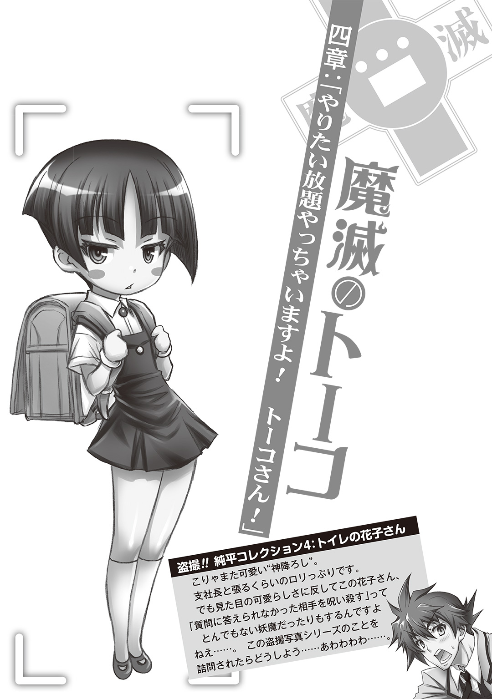
なんだか身体がふわふわしていた。
いや、ふわふわどころか、身体そのものを失ってしまったという状態だろうか。
重力から解き放たれ、どこか違う世界を漂っているようである。そして、肉の檻の代わりにぼくを包んでいたのは暖かい何かだった。
（な、何がどうなって......？）
トーコさんにキスをしようとしたところまでは覚えている。
たしかぼくはあのとき、なぜか理不尽な暴力によって気を失ってしまったのではなかっただろうか。
視界には、仰向けで土蔵の地面に横たわる早池峰純平の姿があった。
鼻血を垂らしながら白目を剝いて気絶しているその間抜け面は、間違いなくぼく自身である。
我ながら間抜けな顔だなあ、と思うと同時に、ふと奇妙な事実に気がついた。
（ど、どうしてぼくがあそこで寝てるんだ？）
あそこで伸びているのがぼくだとしたら、それをここから見ているぼくはいったい何者だというのだろうか。まるで幽体離脱した魂が、抜け殻になった身体を見ているような......。
「ああ、ようやく気がついたんですね。純平くん」
トーコさんの声が聞こえてきた。
いや、聞こえてきた、という言い方は正確ではないだろう。実に摩訶不思議なことなのだが、まるでぼく自身の口が、トーコさんの声で喋ったかのように聞こえてくるのである。
（......これはいったい......？）
「〝神降ろし〟の儀式は無事終了しました。あなたの意識は、妖気とともにわたしの身体に取りこまれています」
（取りこまれた......？ え？）
「現在あなたが目にしている光景や聞こえている音は、わたしの感覚器官を通じて得ている情報です。慣れない感覚でしょうが、これが〝神降ろし〟というものなんですよ」
トーコさんが右を向けば土蔵の石壁が目に入り、左を向けば木の扉が目に入る。
彼女の言うとおり、ぼくの五感は今や完全に彼女に依存しているようだった。自分の身体が勝手に操作されているような感覚で、なかなかにもどかしい。
（それにしてもトーコさん、いつの間に儀式が終わっちゃったんです？ せっかく楽しみにしてたのに）
「楽しんでもらったら困るから、意識を吹っ飛ばさせてもらったんです。面と向かってあなたと口づけするなんて、正気じゃできませんでしたから」
そう言ってトーコさんは、腕で唇を拭う仕草をした。血も涙もない女である。
意識を飛ばすどころか「死ねえ」とか言ってた気がするのだが......それはあえてツッコまないほうがいいのかもしれない。
（しかし、これがトーコさんの中ですか......。ついにぼくたち、合体しちゃったんですね）
「妙な感慨に耽るのはやめてください。気持ち悪い」
身体が自動的に、ふんと鼻を鳴らした。
外から見れば、独り言を喋っている状態なのかもしれない。
（んで結局、これってどんくらい強くなったんです？ 〝ケット・シー〟を降ろしてるときみたいに、この蔵ごと吹っ飛ばしたりできるんすか？）
「妖力ですか。......そうですね。あくまでわたしの体感ですが、〝ケット・シー〟を降ろしているときの妖力総量を百とすると、現在は二か三くらいでしょうか」
（二か三!? 弱っ！ いくらなんでも弱すぎじゃないっすか!?）
「まあ、当然でしょう。半年前の封印の際、あなたの魂魄はかなり弱体化していましたから。妖力だけでいえば、おそらくＦクラス妖魔以下......。さっきの小さい赤鬼さんのほうがまだ強いくらいです」
トーコさんが、倒れているぼくの身体に蔑むような目を向けた。
妖魔だとわかってもなお役立たず扱い......我ながら情けないにもほどがあった。
「当然、外の鬼なんかとまともにやりあえるわけもありません。金棒でミンチにされるのがオチです」
（そこまでわかってるんなら、いったい何のために〝神降ろし〟なんかしたんすか？）
今生の終わりに、ぼくと接吻を交わしたいだけだった――などということはないだろう。トーコさんに限って。
「妖力こそゴミですが、あなたは少々特殊な妖魔ですからね。うまくその特性が発揮されれば、この窮地を脱出することができるかもしれません」
（特殊な妖魔？ どういう意味です？）
「それは......知らないほうがいいかもしれませんね」
なぜか言いにくそうに、トーコさんは少しだけ俯いた。
（え？ なんですその思わせぶりな態度は。気になるじゃないですか。もしかして、口にするのも憚られるような妖魔なんですか、ぼく）
世の中には例えば、便所の神様として祭り上げられている妖魔や、存在するだけで周囲に祟りを振りまくような妖魔がいる。もちろん彼らは彼らで立派な妖魔ではあるのだが、自分がそういう類の妖魔だと言われるのは、ちょっとツライものがある。
トーコさんは「むう」と唸ったあと、
「あえて言うなら〝悪戯〟と〝災厄〟を極めたような妖魔、ですかね......。それも限りなく邪悪な部類の」
（じゃ、邪悪っすか......）
「実際、あなたにも思い当たる節があるでしょう。純平くんなんて、悪戯で周囲に災厄を振りまくしか能のない生き物ですからね」
酷い言われようだったが、まあ納得はできる。
ぼくの内から溢れ出るリビドーは、実は妖魔としての存在証明だったのかもしれない。
（にしても、その妖魔っていったい何なんだ......？）
悪戯と災厄。字面的にはもはや不穏な印象しかない。悪霊とか邪鬼とかそっち系の妖魔なのだろうか。
後ろ頭をかきつつ、自分の正体をあーだこーだと予想してみる。だが、まるで思いつく気はしなかった。正体不明というのは、なんとも居心地が悪いものだ。
（まあ......〝ケット・シー〟のときみたいに、〝神降ろし〟で目に見えた変化があるわけじゃないみたいっすね。強いて言えば、髪の毛が若干短くなってるくらい？）
トーコさんのさらさら黒髪を、指ですくように確かめてみる。かなり長めだった彼女の髪は、肩口くらいの長さになっているようだ。
ぼく（短髪）＋トーコさん（ロング）を平均して、セミロング......なのかも。
（それにしても綺麗な髪だなあ......。なんかいい匂いもするし）
「髪を撫でないでください。......ていうか純平くん、どうしてあなた、わたしの身体を勝手に動かせるんです？」
（え？ 動かせるのっておかしいんですか？）
トーコさんは不思議そうに眉間に皺を寄せた。
なんでも〝神降ろし〟というのは普通、宿主たる巫女が完全に降ろした妖魔の主導権を握るものであり、妖魔が巫女の意志に反して身体を動かせるなんてことは、まずありえないことらしい。
（つっても、動かせるもんはしょうがないですけどね......）
「まあそもそもが変な妖魔ですからね、純平くんは......。でもいいですか、勝手に変なことしたらタダじゃおきませんよ」
（変なことって、例えばこういうことですかね）
ぼくはおもむろに、スカートをはらりと持ちあげてみることにした。
清純な白である。うむ、なかなかに良い。
こうして自分が穿いているのを見るのは、けっこう貴重な経験かもしれない。普段戦闘中にちらりと見えるパンチラとは、また違った趣がある。
すらりと伸びた脚が本当に綺麗だ。まさか、憧れていた脚線美を、間近で拝める日がくるとは思わなかった。
（〝神降ろし〟......なんと奥が深い！）
ぼくが感動に打ち震えていると、身体のほうが心底不快そうに舌打ちをした。
「だから、そういうことをするなって言ってるんです！」
トーコさんは目の前に横たわるぼくの抜け殻に近づくと、そのどてっ腹に思いきりかかとを振り下ろした。
そのあまりの衝撃に、ぼくの身体は「く」の字に折れ曲がり、出てはいけない系の液体を口から噴き出している。
（ああっ!? 痛い！ 痛くないけど見てるだけで痛いっ！）
しかし怒り心頭のトーコさんは、それでも追撃を緩めなかった。
「死ね！ 死ね！ 死ねえっ！ あなたのような破廉恥妖魔、この世に存在すべき由はありませんっ！」
これはやばい。いつになくトーコさんがぶち切れている。このままでは本気で魔滅されそうだ。
（す、すみません！ ほんの出来心だったんです！ ささいな誘惑に勝てなかっただけなんです！ だから殺さないでええっ！）
実際のところ、ぼくの身体はすでに死んでいるらしいが、それでもこのような一方的な暴行は見るに忍びない。
ひとしきり謝罪の言葉を並べ立て、必死に彼女をなだめてみる。
しかしようやくトーコさんがおとなしくなってくれた頃には、ぼくの身体はすでに見るも無惨な状態になり果てていた。青痣と流血にまみれた、ぼっこぼこの満身創痍である。
「......まったく。憑依した巫女の身体に欲情するなんて。次やったら、確実に息の根を止めますよ」
こんなボロボロにされて、ちゃんと元の身体に戻れるのだろうか――。
戦々恐々としつつ、心の中でため息をついていると、扉のほうからガタン、と鈍い音がした。どうやら、外側の閂が外されたようである。
「こら、やかましいぞ！ よもや、脱走する気でねえべな!?」
扉を開けて入ってきたのは、毛むくじゃらの赤ら顔。
見張りの鬼だった。
彼は傷だらけのぼくの身体に目を落とすと、「はて」と首をかしげた。
「あんだおめーら？ 仲間割れだべか？」
「いえ。そもそもこんな役立たずのボロ雑巾、とくに仲間だと思ったことはありませんけれど」
いつも通りの、心が張り裂けそうな台詞であった。
たとえ〝神降ろし〟で運命共同体になっていようが、トーコさんの毒舌は平常運転のようである。
「あのなあ。おめーら。どうせ、あと残りわずかな命なんだ。だったらちっとは仲良くだな――」
トーコさんの残虐な所業に、鬼ですらも苦言を呈しようとしたそのときだった。
「......うぐうっ!?」
突然鬼が腹部を押さえ、その場に蹲ったのである。
ものすごい形相で多量の汗を額に浮かべ、赤いはずのその顔は真っ青になっていた。どういうわけか、大変に苦しそうである。
「どうしたんです？」
「痛たた......。な、なんだべ、急に腹の具合が」
鬼は苦痛に顔を歪め、目には涙まで浮かべてしまっている。いったいどうしたというのだろうか。
「ぐぐう......ひ、昼間のフグ刺しが当たっただか......？ こうしちゃいられねえっ！」
鬼は扉に手をつき、よろよろと立ちあがった。彼はそのままうなり声をあげながら、小走りに蔵の外へと駆けていく。おそらくは厠にでも向かったのだろう。
（使用人ですら昼間からフグ刺しとは、さすがお金持ちのお家は違いますね......。きっと罰が当たったんすよ、罰が）
「貧乏人の妬みは見苦しいですよ、純平くん」
鬼が慌てて立ち去ってくれたおかげで、扉は開け放されたままになっていた。このあまりにもできすぎた幸運に、ぼくとトーコさんはしばし呆然とする。
（ですがまあ、こりゃラッキーっすね......）
「いえ、ただのラッキーではありません。〝神降ろし〟によって、妖魔としてのあなたの力が発現したんです」
（ぼくの力？）
「さすが行疫神とも言われる妖魔です。さっきの鬼が急に腹下しに陥ったのは、その〝災厄〟の能力のせいですよ」
行疫神とは、疫病や災厄をもたらす妖魔の別称である。文字通り、疫病神と言ってしまってもいいかもしれない。
ともあれ、指一本触れることなく見張りの鬼を追い払ってしまったのである。どうやら今のぼくとトーコさんは、強力極まりない〝災厄〟の力で守られているらしい。
「思えば実に純平くんらしい能力ですよね。あさましいというか卑劣というか」
（なんつーか、素直に喜べない感があるっすね......）
やはり、ぼくの正体はろくなもんじゃないようだった。
外の様子を窺い、ぼくとトーコさんはそっと蔵を出る。
月明かりのない闇夜は、脱出にはうってつけだった。庭園には木々や岩も多く、身を隠す環境もばっちりと整えられている。
（これなら、なんとか逃げられそうっすね）
「逃げる？ とんでもない。目標は支社長の奪還と、あの着物女に対する魔滅執行です。わたしにここまでの屈辱を与えたあの女を、生かしておくわけにはいきません」
トーコさんが、憤然とそう告げた。
よほど先ほどの儀式がトラウマだったのだろう。彼女に退く気はさらさらないようだった。ぼくとの口づけを屈辱呼ばわりというのは、実に失礼な話だが。
（うーん......果たして「ちょっと相手の腹を下させる」くらいの能力で、そんな危険なミッションを遂行できるのかは、はなはだ疑問っすけどね......）
もちろんぼく個人では、蔵を脱出することさえ不可能だっただろう。〝神降ろし〟によって、そのチャンスが得られたのだということはわかる。
しかし、正体不明の能力に頼るだけで鬼は倒せないだろう。あのやたらと強そうな酒吞童子に対して魔滅を執行するためには、どうしたって強力な妖魔の力が必要なのである。
（やっぱここはいったん退いて、準備を整えたほうが......）
「いえ。どうやらそんな暇もなさそうです」
トーコさんが屋敷の母屋に目を向けた。その方向からは、地を震わせるような足音が多数、聞こえてくる。
「こんの小娘えっ！ どうやって抜け出しただあっ!?」
「姐さんにかまうこたぁねえ！ 遠慮せず殺っちまうべ！」
早くもぼくたちの脱走が気づかれてしまったのだろうか。酒吞童子配下の鬼たちが、大挙してこちらに押し寄せてくるではないか。
（う、うわあああああああっ!? ツイてないっ!?）
丸太よりも太い金棒を片手で振り回し、鬼たちは咆哮した。
あんなのに殴られたら、こんな細い身体は容易く粉砕されてしまうに違いない。
勝ち目などあるわけがなかった。普段の猫耳フォームならともかく、ぼくなんかを〝降ろし〟たままあんな化け物どもを相手にするのは、いくらなんでも無理ゲーすぎる。
（に、逃げましょうトーコさん！）
しかし彼女のとった行動は、そんなぼくの提言とは真逆のものだった。
トーコさんはなんと、真っ向からその鬼の群れに向けて駆けだしたのである。
「魔滅社の社訓に、敵に背を向けろと教えるものはありません。邪悪な妖魔が立ちはだかるなら、蹴散らして進むのみ......！」
（なんすかその社畜根性――っ!?）
さすが十六夜支社のエース。無駄にカッコよかった。
だがこの状況では、そんな蛮勇も無謀以外の何ものでもない。打つ手なしでの正面突破など、ただの自殺にすぎないのだ。
気づけば先頭の鬼の巨体が、もうすぐそこまで迫っていた。鬼は恐ろしげに表情を歪め、高く金棒を振り上げている。
「逃げずに向かってくるとはいい度胸だべ！ 挽き肉にしちゃる！」
（ひいいいいいいっ!?）
巨大な鉄塊が振り落とされようというその瞬間。
身体がすっと横にぶれ、すんでのところで一撃を回避した。
空を切った金棒はそのまま地面に打ちつけられ、足元にあった飛び石を叩き割る。
「うぬうっ？ すばしっこい小娘だ！」
鬼はそのまま横なぎに金棒を振るったのだが、トーコさんは軽くバックステップを踏み、「ふっ」と一息で難を逃れる。
（おお!? なんか知らんけどすげえ！ さすがトーコさん！）
「いえ、これも純平くんの力なんでしょうね」
（へ？）
四方から振るわれる容赦ない金棒の連撃。しかし彼女はまったく臆することなく、舞うような動作で軽々とそれらの間隙を縫ってみせる。
明らかに普通の人間の反応速度ではありえないレベルなのだが、これがぼくの力とはいったいどういうことなのだろう。
鬼の攻撃をいなしつつ、トーコさんが説明する。
「〝神降ろし〟によって巫女にもたらされるのは、妖力だけではありません。個々の妖魔の個人的な特性――この場合は、あなたの性格的な『逃げ足の早さ』も、わたしに付与されているんです」
（に、逃げ足の早さ......）
「ええ。おそらくこの超回避スキルも、それが強化されたせいかと」
確かにぼくの十八番といえば、言わずと知れた敵前逃亡である。
まあ、それしかできないのだが。
「身体が危険を察知しているのか、勝手に避けてくれる感覚ですよ。......ヘタレもたまには役に立つものですね」
なぜだろう、まったく誉められている気がしない。
金棒がまったく当たらないことに業を煮やした鬼たちは、額に青筋を浮かべ、血走った目でぼくたちを見下ろしていた。
「ぬぐわああっ！ ちょこまかちょこまかとおおっ！」
「こうなりゃ一気に叩き潰してやるだあっ！」
鬼たちは雄叫びをあげ、こちらを一斉に包囲する。逃げ場をなくしたうえで、金棒で粉砕する気なのだろう。多数対一の常套手段である。
しかしそうやって彼らに囲まれてもなお、トーコさんの表情に迷いはなかった。むしろこの身体は、余裕の笑みさえ浮かべている。
「ひしゃげろ小娘があああっ！」
足下の少女に向け、幾本もの金棒が振りかぶられた。
いかに相手が素早かろうと、これだけの一斉攻撃を避けられる道理はない――。きっと鬼たちはそう考えたに違いない。その作戦もまあ、理屈においては正しかったのだろう。
今の彼女の「逃げ足の速さ」を考慮にいれなければ。
トーコさんは目にも止まらぬ速度で一匹の股下をくぐり抜け、すでに包囲の外側に逃れていたのである。
「......鬼さんこちら、ですよ」
一匹の鬼の背後で、トーコさんはイタズラっぽく舌を出してみせる。
鬼たちが彼女の移動に気づいた頃には、時すでに遅し。
「そこにいたべかあっ！」
トーコさんを狙っていた金棒は、その勢いを止められぬまま、彼女の近くにいた鬼へと降り注いだのである。
「......お、おいちょっ、待......ぶべらっ!?」
周りの連中に一斉に殴られ、その鬼は泡を吹いて地面に倒れてしまった。
あの金棒で渾身の一撃を食らったのだ。それも数本分一気に。
哀れな鬼は白目をむき、びくんびくんと痙攣を繰り返している。そんな倒れた仲間を見下ろし、他の鬼たちは戦慄に身を震わせた。
「ご、五郎――――!?」
「五郎がやられちまっただ！」
「誰じゃあっ!? 今ワシの親友殴ったんは誰じゃああっ!?」
「お、オラじゃねえ！ 五郎を殴ったんはオラじゃねえよっ！」
「おどれか!? おどれがやったんじゃろ！ いつも五郎は姐さんに目えかけられとったからのう！ 妬んどったに違いねえ！」
「ああん？ それはおめえのほうだべ！ 毎度毎度姐さんに媚び売っとる分際で、よく言えたもんだ！」
「おお？ やんのかおどれえっ!?」
「望むところだあっ！」
なんだかよくわからないうちに、鬼たちが同士討ちを始めてしまった。
口汚く罵ったり、金棒を振り回したり、互いの胸ぐらをつかみ合ったり。馬乗りになって、相手を殴りつけている者もいる。
海外のカートゥーンのごときコミカルな状況なのだが、三メートル強の巨体同士が繰り広げる大乱闘は、かなりの地獄絵図であった。
鬼の世界もまた、いろいろ複雑なのだろう。
「争いというものは、ごく些細なきっかけで起こってしまうものなのですね......もしかしたらこれも、純平くんのもたらした〝災厄〟の結果なのかもしれません」
トーコさんが、いけしゃあしゃあと呟いた。ひとのせいにしているが、どちらかと言えば彼女の策略という面が強い気がするのだが。九割くらい。
（鬼さんたち、もう内輪揉めに夢中で、ぼくたちなんてどうでもいいっぽいですね）
「ええ。この隙に、早いところ本邸に向かいましょう」
トーコさんは暴れる鬼どもを尻目に、そっとその場から駆けだした。
頼れる武器は正体不明の妖魔の能力。さて、鬼の頭領を相手に、どこまでこれだけで乗りきれるのだろう。胸の内には不安しかない。
化粧台の引き出しを引っ搔き回しながら、トーコさんがため息をついた。
「ない......。こっちにもない......」
屋敷に侵入したぼくたちがまず向かったのは、大江朱音の私室だった。
畳の上に散乱しているのは、櫛や手鏡、髪飾りなどの女性用の日用品。それからパーティ用と思われる振袖や、普段着用の小袖などといった衣類である。
いずれも高価そうな品物であったが、トーコさんはそんなことには頓着せず、片っ端から取り出しては調べ、そのあたりに放り投げていた。一〇分前までは綺麗に整理整頓が行き届いていたはずの和室は、今やこの少女の手によって荒らされ放題になっているのだった。
（まるで空き巣の所業っすね）
「まるで、ではなく、空き巣そのもののつもりです。あの着物女に見つかる前に、なんとしてでも姉妹札を見つけ出さなければなりません」
トーコさんは、平然とそう言い放った。
手段を選ばない、怜悧冷徹な魔滅の巫女の顔である。
酒吞童子に対して魔滅を執行するためには、今のぼくたちだけでは非力にすぎる。だから強力な妖魔の力が必要なのは言うまでもない。
そのためには、どうしたってまず玉藻ちゃんを救出することが絶対条件なのである。
（この屋敷のどこかから、支社長の力を封じた姉妹札を見つけ出す......。なかなかに骨が折れそうなミッションっすね）
ほぼ無力なぼくたちにとっては、悠長に捜索をしている余裕はない。配下の鬼ならまだしも、朱音さんに見つかった時点で、即ゲームオーバーだろう。
散らかした部屋を見回しつつ、トーコさんが呟いた
「やはり、姉妹札はこの部屋にはないということでしょうか。あるとすれば、絶対にこの着物女の私室だと思ったのですが」
（ここまで探して見つからないなら、そうかもしれませんね）
「とはいえ、これだけ大きな屋敷です。他の部屋を逐一調べている余裕はありませんし......」
トーコさんの声色には、疲労の色が窺えた。
よくテレビの刑事モノなんかで、現場に落ちていたたった一本の髪の毛から犯人を追いつめるシーンがときたま見受けられるが、ああいうのは人手があって初めてできることである。この広い屋敷の中から、どこにあるのかもわからないお札を実質ひとりで探すなどという行為は、かなりの苦行だと言わざるを得ない。
捜索活動というものが、人海戦術ありきの手段だということを、ぼくははじめて思い知ったのだった。
「純平くん。姉妹札がどこに隠されているか、見当がつきませんか？」
（そうですね......）
トーコさんに言われ、ぼくは必死で頭を捻ってみた。
調べるべき場所。
この限られた時間を用いて、ぼくたちが捜索しなけれればならない場所とは、いったいどこなのか。
（例えば、あの簞笥とかどうでしょう）
部屋の隅に置かれていた桐簞笥を指差し、ぼくは言った。
「あそこはもう調べたじゃありませんか。中はとるに足らないものばかり......下着類くらいしか入っていませんでしたよ」
（下着......。だからこそ、もっと丹念に調べるべきじゃありませんか？）
「はあ？」
（あのお嬢様の下着のサイズはいったいいかほどなのか。お気に入りはどんな色なのか。それらをどんなローテーションで身に着けているのか。あの簞笥を調べれば、そういうことがわかると思うんです）
「......で、その情報を得られたからといってなんだというのです」
それは心底こちらに失望したかのような、実に冷ややかな声色だった。
（いやその、気分的にちょっとほっこりするかなー......と）
「今ここにあなたの身体があれば、確実に頭蓋骨を割っていたでしょうね。踵で」
とんでもないことを言う少女だった。
つくづく、ジョークの通じない先輩である。くわばらくわばら。
「とにかく、あなたの馬鹿げた冗談につきあっている暇はないんです。こうしている間にも、いつあの着物女がやってくるか――」
「着物女が、どうかしたんですの？」
底冷えのするような女の声が、背後から聞こえてくる。
振り向けば、この部屋の主が、朗らかな微笑を浮かべていた。
「よくもまあ、他人の部屋を好き放題荒らしてくれたものですね。どういう教育を受けて育ってきたのでしょう。礼儀のなっていない娘ですわ」
「迂闊......。わたしたちの侵入は、すでに把握されていたのですね」
「使用人たちが外であれだけ派手に暴れていれば、何かがあったということくらいすぐにわかります。むしろ、バレないと思っていたことのほうが不思議なくらいですわね」
朱音さんの手には、紅い光を帯びた妖刀が握られていた。
完全に臨戦態勢である。草薙から発せられる妖気の圧力が、部屋に散らばる小物や衣類を細かく振動させていた。明らかに、これはヤバイ。
「ところで神凪瞳子さん。あなた、髪でもお切りになりまして？」
まるでバラエティ司会者のごとく吞気な口調だったが、彼女には一切の隙は見られなかった。こちらが少しでも変な動きを見せようものなら、いつ斬りかかられてもおかしくない雰囲気である。
だが。
トーコさんもそれを十分わかっているはずなのに、開いた口から出たのは毒にまみれた一言だった。
「少々特殊な〝神降ろし〟をしただけですよ。調子に乗った高慢ちきな鬼娘に、魔滅社の――神凪の巫女の恐ろしさを刻みつけてやろうと思いまして」
「ああ......例の彼を降ろしたのですね」
朱音さんが少しだけ眉をひそめる。
「まったく、いくら私に対抗するためとはいえ、後先考えずに恐ろしいことをする娘ですわね。あの力――扱いを間違えればどうなるか、知らぬわけではないでしょうに」
それはまるで、正体不明のぼくの力を忌避するかのような言い方だった。扱いを間違えれば、周囲の者全てが腹下しをするとでも言うのだろうか。それは確かに恐ろしいことだが。
トーコさんが、ふっと微笑む。
「確かにあなたのような雑魚妖魔を退治するには過ぎた力かもしれませんね」
「あらあら、御冗談がお上手ですこと」
「いえいえ、冗談ではありませんよ」
ふたりの少女は「おほほ」「うふふ」と笑顔を交わしあっていた。
一見穏やかそうに見えてしかし、その目はどちらも笑っていない。このふたり、やはり相性は最悪な様子であった。
（挑発しちゃダメですって！ 今のぼくらには勝ち目なんてないんすよ!?）
「そんなことはどうでもいいんです。こんな勘違い女に、背など向けたくはありません」
相変わらずの好戦的な姿勢であった。
まったく、トーコさんにつきあっていたら命がいくらあっても足りない。厄介なひとに惚れたものだと、今さらながらに自分が茨の道を歩んでいることを実感する。
まあ、別に後悔はしていないが。
「勘違い女とは......また失礼な物言いですね」
鬼の少女は刀を正眼に構え、にっこりと微笑みを浮かべた。
「やはりあなたには、この私直々に、躾を施す必要がありそうですわ！」
（と、とと、トーコさん！ 早く逃げ――）
しかし、なにもかもがすでに遅かった。
「死んでしまいなさいっ！」
少女は、構えた刀をその場で無造作に振り下ろした。
傍目にはただの素振りでしかない動作だったが、普段からトーコさんの剣を見ているぼくには、その恐ろしさが嫌というほどよくわかる。
先日トーコさんが、体育館を吹き飛ばしたときと同様の技だ。振り下ろされた刀の先から、部屋ごと両断するかのような巨大な刃が生まれ、トーコさんに襲いかかったのである。
「......っ!?」
草薙は、相手を斬る刀ではない。その刀身に蓄えた妖力を、剣圧の塊として敵にぶつける武器なのである。
つまるところ、持つ者の妖力が高ければ高いほど恐ろしい威力を発揮する、実にシンプルな魔滅兵装――それをこの鬼の少女は、いとも容易く最大出力でぶっ放しているのであった。
（ぎゃああああああっ!?）
〝神降ろし〟によって強化された「逃げ足」といえども、目の前に迫る圧倒的な妖気の塊に対しては完全に無力である。
（む、無理無理無理！ こんなの無理っ！）
「役立たずは黙っていてくださいっ！」
この剣閃は、そもそも制圧用の面攻撃として用いられるものなのだ。部屋中どこに逃げても食らうような攻撃を、避けられるはずがない。
とっさにトーコさんは両腕で身体を庇ったが、焼け石に水であった。
巨大な紅い刃を正面から受け止めたことで、身体が糸の切れた凧のように後方へと吹き飛ばされてしまう。
（死ぬううううううっ!?）
障子を破り襖を破壊し、二、三部屋貫通してもまだその勢いは止まらない。
ぼくたちは受け身を取ることすらできないまま、遂には屋敷の外へと放り出されてしまったのである。
「......ううっ!?」
なす術もなく庭をごろごろと転がること数秒。
背中を石壁に打ちつけたところで、ようやく止まった。
何十メートル飛ばされたのだろう。どうやらここは、先ほどの離れの土蔵の前のようだった。さほど離れていないところで、鬼たちがドンパチ同士討ちをしている気配がする。
「かはっ......」
血の味が、口中に広がった。
肺は呼吸が止まりそうなレベルまで圧迫されており、あちこちぶつけたせいで身体中がバラバラになりそうなくらいに軋みをあげている。どこもかしこも酷く出血し、痺れのあまり視界がぼんやりとしているようだ。剣閃をまともに受けた両腕など、もはや感覚が喪失しているほどだった。
端的に言えば、むちゃくちゃ痛い。意識がだんだん遠のいているせいなのか、鬼たちの叫び声が、遠いもののように感じる。
（し、死ぬぅ......死んじゃいますよぅ）
「泣き言言わないでください。痛いのは、わたしも同じなんですから」
げほっ、と血痰を吐き出しつつ、トーコさんが呟いた。
感覚を共有している以上、彼女もぼく同様の激痛に身を苛まれていることはわかる。男のぼくですら悲鳴をあげたいくらいなのだ。それでも堪えようとする彼女の胆力は、やはり凄まじいものがある。
「にしても、たった一撃でこれですか......。ある程度予想はしていましたが力の差は如何ともしがたいですね」
自身の身体を見下ろしながら、彼女がため息をつく。
やはり、あの鬼の頭領に勝ち目などないようだ。
玉藻ちゃん謹製の戦闘用巫女服の恩恵なのかどうか知らないが、真っ二つにされなかっただけまだマシなのかもしれない。
身体はもはや傷だらけ、せっかくの衣装もあちこちが破れ、ぼろぼろになってしまっている。客観的に見れば実に扇情的な外見だと思うのだが、じっくりと鑑賞している場合ではないのが悔やまれる。
「身体は......もうほとんど動きませんね。たぶん、全身の骨がイカレてしまったのでしょう。全治一年、ってとこでしょうか」
（そ、そんなに......？）
命があるだけで奇跡、というレベルの大怪我である。
こうなってしまえばもはや、トーコさんが魔滅社の前線に復帰するのは難しいかもしれない。そうなるともう、彼女の素敵な絶対領域に身悶えることもできなくなってしまうわけで。
（トーコさんが戦えなくなっちゃうなんて困りますよ！ このコスプレ衣装だけが、ブラックなバイトにおける唯一の清涼剤だったのに！）
「本当に唾棄すべき変態ですね、純平くんは。......今はそんなことよりも、他に心配することがあるでしょうが」
トーコさんが、ちらりと前方を見た。
闇の中に浮かぶのは、紅い光輝に満ちた一振りの刀。
死を告げる草履の足音が、何かを引きずりながら、こちらへゆっくりと近づいてきていた。
「おや、直撃を受けてまだ息があったとは。ろくな〝神降ろし〟をしていないくせに、しぶとさだけは一級品のようですわね」
それは、酒吞童子を名乗る鬼の少女だった。土蔵の壁に寄りかかるこちらを見下ろし、彼女はくすくすと笑みを零す。
そんな鬼の少女を睨みつけ、トーコさんは不敵な笑みを浮かべた。
「あいにくと、悪運だけは強いんですよ」
「ああ、例の彼を降ろしているんでしたね、あなた。......もっとも、そんな虫の息ではどうすることもできないでしょうけれど」
「さあ......それはどうでしょう」
それが精いっぱいの強がりだということは、身体を同じくしているぼくには痛いほどわかった。たとえぼくが〝災厄〟を振りまく妖魔だったとしても、指一本もまともに動かせないこの状況では、反撃の糸口すらつかめないのだ。
「本当に、口の減らない生意気な女ですこと。上司ともども、魔滅社の連中は本当に生意気ですのね」
彼女は、片手で引きずっていたものを、ぽい、とこちらに放り投げる。
地面にどさり、と転がったそれは、小柄なキツネ幼女だった。
「あうっ！ こ、これ、鬼娘、丁重に扱わんか。わしは妖魔の王であるぞ」
玉藻ちゃんが、いつものように偉そうに怒鳴り散らしている。
まだ酒が抜けきっていないのか、少しだけ目がとろんとしていたが、どうやら意識だけはおおむね取り戻したようである。
「支社長、大丈夫ですか？」
「大丈夫なものか。お前ら部下どもが不甲斐ないせいで、力を完全に封じられてしまっとる。今のわしは、見た目通りの単なるコムスメ......プリティでキュートなケモミミ娘にすぎん」
額に例のお札を貼りつけたまま、支社長は憮然とした表情を浮かべた。
（自分で勝手に酔いつぶれてこれだもんなあ。部下に責任なすりつける老害ババアの、どこがプリティでキュートなんすかね......）
「おいジュンペー。聞こえておるぞ。お前、罰として三か月減給処分な」
（んなあっ――!?）
トーコさんの内なる存在であるはずのぼくの声を、どうやって聞きとったのか。
おそるべき地獄耳......もといキツネ耳である。力を封じられてるくせに、こういうとこだけは元のままなのだから性質が悪い。
そんなぼくたちのやりとりを見つめていた朱音さんが、ふっと息をこぼした。
「せめてもの情けです。十六夜支社の人間は、みんな仲良くまとめて浄土へ送ってさしあげますわ」
彼女は石壁にもたれるトーコさんの胸ぐらをつかみ上げ、その首筋に草薙の刃をあてがった。妖気を纏った刃が、まるで焼き鏝のように熱く燃えたぎっているのを感じる。
「まずはあなたからですわね、神凪瞳子。魔滅の巫女の首、この場で頂戴いたします」
「............」
トーコさんはただ無言で、愛刀を握る彼女の姿をじっと睨みつけていた。
このような窮地においても、決して屈しないという覚悟の表れなのだろうか。少なくとも、凡夫たるぼくではその境地には絶対にいたれそうにない。
（ひいいいいっ!? し、死にたくないっ!?）
この場でトーコさんが殺されようものなら、それはぼくの死と同義である。彼女と肉体を共にしているぼくもまた、ただではすむまい。
よしんば〝神降ろし〟が解除され、元の身体に戻れたとしても、結果は同じだろう。すぐにこの鬼の少女に見つかって、後を追うことになるだけだ。
（腹上死以外の最期なんてぼくは認めないっ！ こんな死に方はあんまりだああっ！）
「ああもう、ひとの頭の中でごちゃごちゃと......往生際の悪い男ですね」
トーコさんの舌打ちが聞こえてきたが、もはや彼女にどう思われようと知った事ではない。一瞬のちに待っているのは、逃れることのできない終焉なのである。
そんないまわの際において頭の中に浮かんでくるのは、魔滅社で過ごした日々の走馬灯――殴られ蹴られ罵られる、最低の思い出たちであった。
（ああ、思えばパッとしない人生だった......）
トーコさんの太もも眩しいコスプレに惹かれるまま、ほいほい始めてしまった魔滅社バイト。しかし彼女の絶対領域には決して手が届くことはなく、与えられたのは危険な任務の数々と「痴漢」「変態」「助平小僧」という不名誉なレッテルばかりだった。おまけに、今日にいたって「早池峰純平はすでに死んでる」だの「正体はろくでもない妖魔だった」だの、さんざんな事実が発覚する始末。
こうして〝神降ろし〟されたことを除けば、トーコさんとまともにスキンシップを図る機会さえなかったのである。
ぼくの一生が、そんな惨めなもので終わってしまっていいのだろうか。
いいや。健全な青少年として、そんなの許せるはずがない。
（せめて最期に......！ せめて最期に一矢報いてやるっ......！）
それは、ぼくの執念の叫びだった。
「うおおおおおおおおおおおおおおおおおっ！」
まさに命運が尽きようとするとするその刹那、強烈な我執によって生じた魂の叫びが、その奇跡を引き起こしたのである。
「......は？」
朱音さんは呆けたように口を半開きにし、不可解な表情を浮かべていた。
驚くのも当然だろう。今まさに殺そうとしていた相手が、突如、両手で自分の乳房をわしづかみにしたのだから。
「な!? 神凪瞳子......！ あ、あなた......いったい何をなさっているのです!?」
ふにふに、ふよふよ。
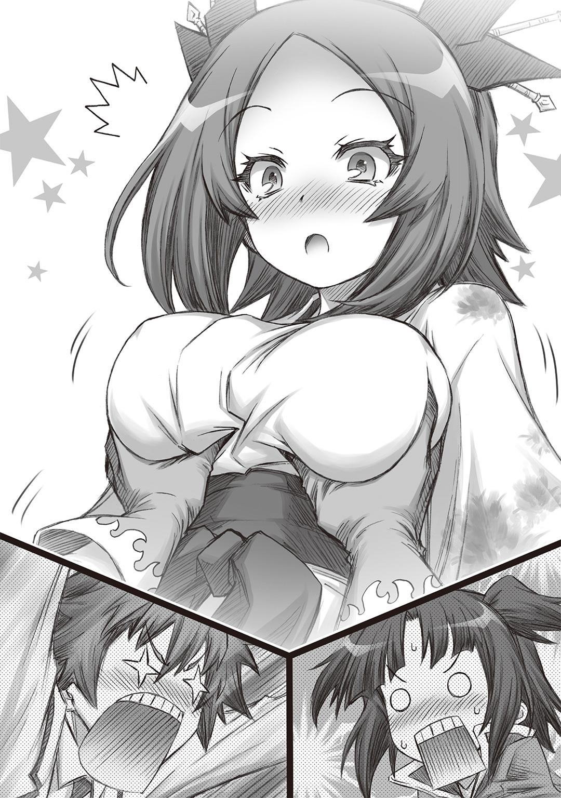
傷つき動かなかったはずのトーコさんの指先が、目の前のお嬢様おっぱいを思うさま堪能している。
「乳を揉んでるだけですよっ！ それの何がいけないってんです！」
「お、女同士でそんな破廉恥な......ひゃあっ!? ちょ、やめ――」
着物の上からとはいえ、指先に感じる双丘の柔らかさは超絶品。例えるなら、崩れないゼリーのような感じ......だろうか。
それを持ち上げたり包みこんだり、ときには転がしてみたり寄せてみたり。
日々の妄想とさまざまなお宝媒体から得たつけ焼き刃のテクではあったが、我ながらそれは、熟練のＡＶ男優ですら裸足で逃げ出すような、極めてエロティックな指使いであったように思う。
「うおおおおおっ！ 巨乳バンザイ！ おっぱいは最高だああああああああっ！」
庭園に響き渡ったのは、確かにトーコさんの凜々しい声色だった。
だが正確には、その雄叫びを上げていたのは彼女ではない。まぎれもなく、このぼくなのだ。
ぼくが自分の意思で、朱音さんの豊満な乳房に指を這わせているのである。
（の、乗っ取られた......!? このわたしが純平くんに、身体を乗っ取られたというんですか!?）
頭の奥のほうから、トーコさんの素っ頓狂な叫び声が聞こえてきた。
どういう理屈かはまるでわからないが、どうやらこの身体の主導権は、今やこのぼく、早池峰純平にあるらしい。さきほどまでとは全く異なり、とくに意識せずともまるで自分の手足のようにトーコさんの手足を動かすことができるのだ。
しかも、満身創痍だったはずなのに、今はもうほとんど痛みを感じない。やろうと思えば、心おきなくパイタッチを楽しみ放題なのである。
「〝神降ろし〟の暴走か」
キツネ耳の幼女が、訳知り顔で頷いた。
「降ろした妖魔の力が強力すぎれば、巫女はその力を制御できず、その肉体を妖魔に乗っ取られることがある。今のお前らは、まさにその状態だ」
（暴走って......。あ、ありえません。今の純平くんは、最下級レベルの妖魔の力しかなかったはずです。わたしが制御を失うだなんて......！）
トーコさんの声色は、珍しく驚愕と混乱で震えている様子だった。
まあ、乗っ取ったぼくもぼくで、まるでわけがわかっていないのだからしかたがない。
「ジュンペーのエロスに対する飽くなき欲求が、一時的に妖気を増大させたのだろうな。傷が一瞬で治癒したのもその影響だ」
（エロスって......まさか、下心だけでそんなパワーアップを果たしたというのですか）
「理には適っておる。なんせこやつは、悪戯が存在理由のような妖魔だからな」
スケベ心とは怖いものだな、と玉藻ちゃんは首を振る。
とどのつまり、この異常事態はぼくの煩悩が生存本能を刺激して引き起こされたものであるらしい。
だとするなら、やることはもはやひとつだ。
「心ゆくまで、このおっぱいを楽しめということっすね！」
「なあっ......!? だ、駄目です！ い、いいから放してくださいましっ！」
朱音さんが真っ赤に顔を赤らめ。刀から手を放してしまっていた。
いかに鬼の頭領とはいえ、彼女は蝶よ花よと育てられてきたお嬢様なのだ。
やはり、こういうセクハラに対する耐性は強くないのだろう。彼女は抵抗することも忘れ、ただただその身を固くし、震えている。
「や、やめてくださいませっ......こんなの......！」
日々トーコさんの暴力に晒されている身としては、朱音さんの初心な反応が実に香ばしい。
なにかこう、嗜虐心を煽るというか、とことん悪戯してみたくなってしまうのだ。
「そうっすか？ イヤよイヤよも好きのうちって言いますよねえ？」
「あ......んっ......！ そこは敏感な......や、やめてえっ！ もうやめてくださいっ！」
「うへへへへ！ よいではないかよいではないかー！」
男として生まれたからには、着物美少女相手に一度は言ってみたい台詞であった。
無理やり地面に押し倒された朱音さんは「きゃ」と短い悲鳴をあげただけで、さしたる抵抗もないまま恥じらいに頰を染めている。
あれ？ マジでこの子、悪戯を受け入れはじめてないか？
「そ、そういうことなら、遠慮なく――」
ぼくは無防備な彼女に馬乗りになり、ごくりと生唾を飲みこんだ。衿から覗く白く透き通った鎖骨が、なまめかしいほどに美しい。
「せ、せめて痛くしないで......」
朱音さんが火照った表情でこちらを見上げていた。
もうこれは、完全にＧＯサインだろう。
ぼくのテクが、かたくなな鬼の少女の心を開いたということなのだ。
「い、いいんすね？ ぼ、ぼくとその、そういうことしちゃおうってことなんすね！ 朱音さん!?」
（や、やめてくださいこの色ボケ野郎！ わたしの身体で性犯罪を犯すのはやめてくださいっ！）
「残念でしたねトーコさん！ こんなおいしいシチュエーション、みすみす逃すわけがないじゃないっすか！」
内なる良心の声を振りきり、ぼくは目の前のお嬢様バディに目を落とした。
こんな超級の巨乳美少女が、ぼくに身体を許そうとしている――。こんな垂涎もののシチュエーション、後にも先にもまずないだろう。
ああ素晴らしきかな我が人生。
（わたしの身体が、こんな下劣な男に好き放題使われてしまうとは......死にたい気分とはこういうものなのですね......）
頭の片隅でトーコさんの嘆きが聞こえていたが、とりあえず無視だ。今の彼女など、所詮は形而上の無力な存在にすぎない。殴られる心配はないのである。
「今のジュンペーに何を言っても無駄だろうな。いろんな意味で暴走しとる......」
支社長も呆れ顔でぼくを見つめていた。
「では、いっただきま――」
と、そのときだった。
はだけた彼女の着物の衿の内側から、何か白っぽい紙のようなものが覗いていることに気がついた。長さ十センチ程度の、細長い短冊状の紙である。
「ん？ なんだこれ？」
「あ、それは――」
遠慮なく引き抜いて調べてみると、その紙には何やら赤い文字で、呪言が記されているようだった。この紙片、どこかで見覚えがあるのだが......。
（それは、例の姉妹札......!?）
と、トーコさん。
言われてみればその紙片は、玉藻ちゃんの額に貼られているお札と瓜二つである。さんざん家探しして見つからなかった姉妹札が、よもやこんなところで見つかるとは。
（灯台下暗しでしたね。まさか、封印した本人が今の今まで姉妹札を隠し持っているとは）
「なるほどー、朱音さんくらいのダイナマイトおっぱいになれば、隠すところには困らなさそうですもんね」
ぼくの言葉に対し、内側から舌打ちが聞こえてきた。
事実なのに。
「馬鹿を言う暇があったら、それをさっさと破り捨てろ！」
玉藻ちゃんに急かされ、ぼくは手にしていた紙片を両手で引き裂いた。
その瞬間、彼女の額に付いていたお札の文字が赤く輝きはじめる。おそらく、封印が解かれようとしているのだろう。
「おお......！」
お札から煙幕のようにシュウシュウと煙が上がり、しばらく経つうちに、表面に書かれていた文字はうっすらと消えてしまっていた。
あとに残ったのは、なんの変哲もない短冊形の紙だけ。
支社長は額のそれを容易くはがし取ると、にっこりと笑みを浮かべた。
「よし、でかしたぞジュンぺー！ 玉藻ちゃん完全復活だ！」
頭の上でキツネ耳がぴん、と起立している。どうやらお札が効力を失い、封じられていた力を取り戻すことに成功したらしい。
「ううっ......不覚でしたわ。セクハラに気を取られていたばかりにっ......！」
朱音さんが悔しそうに歯嚙みした。
完全に形勢逆転である。
「さて、わしをここまでコケにしてくれた落とし前、きっちりつけてもらおうかのう、鬼娘よ」
ふさふさの尻尾が逆立っているのは、威嚇の表れなのだろう。狼狽える朱音さんを仰ぎ見て、玉藻ちゃんは口の端を歪めてみせた。
「うう......！ 誰か！ このキツネ娘を......白面金毛九尾をなんとかするのですっ！」
玉藻ちゃんの復活をさすがに不利と悟ったのか、朱音さんは部下たちに大声で助けを求めた。
池の向こうで不毛な殴りあいをしていた鬼たちが、主の危機を察知し「んん？」とこちらを振り向いた。ぼくたちの姿を見て、ようやく我に返ったのだろう。
彼らはお互い顔を見あわせ、我先にと駆けだした。
「ああ!? 何をやってたんだべ、オラたちは！」
「姐さんをお助けせねばっ！」
屈強な鬼たちの群れが鬨の声をあげ、こちらへと津波のように襲いかかる。
ぼくはといえば、そのあまりの迫力に腰を抜かしてしまいそうになっていた。
「よぐもさっきはコケにしてくっちゃな！」「血祭りだあっ！ 血祭りっ！」
なんかもう、さっき以上に気が立っている様子である。アレをどうしろというのか。
「あ、あわわわ......」
少なくともぼくには、先ほどトーコさんが行ったような華麗な超回避など不可能である。あんなウルトラＣ、よほど度胸がなければできやしない。ぼくの両の手は、お嬢様マシュマロを貪るくらいしか能がないのだ。
「よいぞジュンペー。下がっておれ」
震えるぼくを尻目に、玉藻ちゃんが鬼の軍勢の前に立ちはだかった。
両手を腰にあて、威圧するように薄い胸を張っている。これだけ小さな体軀の少女だというのに、その威厳だけは圧倒的である。
「妖魔王だかなんだか知らねえけんども、所詮はガキだべえっ！」
先頭の鬼が金棒を振りあげた。
しかし玉藻ちゃんは微動だにすることなく、こう口にする。
「控えおろう！ 小童どもが！」
その舌足らずな一喝が、周囲のあらゆるものを震わせた。
鬼たちも朱音さんも、草木も家屋も池の鯉たちも、その瞬間、気圧されたようにビクリと動きを止めたのである。
「頭が高いぞおのれら。魔滅社をなめておるのか」
吐き捨てるように玉藻ちゃんは呟いた。
どこからどう見ても幼女のはずなのに、なぜか逆らうことができない。封印から解放された彼女は、それだけ凶悪極まりない妖力を身に纏っていたのである。
（さすがは、白面金毛九尾というだけありますね。一声発しただけで鬼どもを圧倒するとは）
頭の中のトーコさんですら、若干気圧され気味の様子であった。まあ声が響いた瞬間、すかさず土下座の体勢をとっていたぼくよりはマシかもしれない。
「......ぐぐっ」
鬼たちも一瞬で力の差を悟ったのだろう。彼らは無言のまま武器を降ろし、頭を垂れていた。怯えたように身を震わす彼らにはもはや、抵抗の気配は一切見られなかった。
まさに絶対君主の貫録。妖魔王を名乗るに相応しい覇気であった。
「情けない部下どもですわね......。それでもあなたがたは大江グループの一員ですか」
この場で唯一、玉藻ちゃんに反抗的な目を向けていたのは、朱音さんひとりである。
はだけた着物を手慣れた様子で直しつつ、彼女は再び草薙の柄を握った。
「まだ終わっていませんわ。魔滅社の皆様方......。こちらには、この妖刀がございます。こうなれば、私ひとりででも差し違えてみせますわ」
「ほほう......殊勝な心意気だな。鬼娘よ」
朱音さんに向けられた敵意を軽くいなし、支社長は薄い笑みを浮かべた。
「わし自身が手を下してもよいが......。さすがに酒が回っておる今、手加減はできぬからな。あっけなく殺してしまっては元も子もない。......ここは、優秀な社員に処分を任せることにしようかの」
気づけば、玉藻ちゃんがこちらの服の裾をひっぱっている。
自分のほうを向け、という合図らしい。
（〝神降ろし〟ですね）
と、トーコさん。
「え？ もしかして、ぼくはもう用済みってことっすか？」
（当然です。あなたのような下種野郎に、いつまでもわたしの主導権を渡しておいたままにはしておけません。さあ、さっさと出ていってください）
「あああ、せっかく美少女に公然と悪戯できる機会が......」
「つべこべうるさいぞジュンペー。いいからこっちを向け」
玉藻ちゃんの小さな手が両頰に添えられ、強引に首を曲げられてしまう。痛みのあまり「んげ」と変な声をあげてしまったが、彼女に解放の意志はないようだった。
「はむっ！」
次の瞬間には、有無を言わさずこちらの唇が柔らかなもので塞がれてしまっていた。もちろんそれは、キツネ耳幼女の小さなリップである。
ほんのりと熱い彼女の頰の感触が、冷えた外気の中で少しだけ気持ちいい。
「ん......むっ............!?」
なんかこう、幼女と口づけを交わすというのは実に背徳的な気分がするのだが、されてしまったものはしかたがない。
唯一の救いは、むちゃくちゃ酒臭すぎてあまり感触を楽しむどころではない、ということだろうか。
「んむううううう!?」
そのときだった。
頭の中が急に熱くなり、心臓がどくん、どくんと強く鼓動をはじめたのである。何かが身体の奥からわきあがってくるような、そんな不安な感覚だった。
これが、〝神降ろし〟というものなのだろうか。
確認する暇すらないままに、今度は強い力で後ろに引っ張られるのを感じた。例えるなら、とんでもなく巨大な掃除機に、なすすべもなく吸引されているかの如き状態である。
――うわああああああっ!?
ぼくの意識は、いつの間にか暗闇の中に放り出されていた。
何も聞こえないし、何も見えない。さっきまですぐ目前にあったはずの玉藻ちゃんのこそばゆい鼻息すらも感じなくなっていた。
天も地もわからないような暗い闇の中で、超高速のジェットコースターのように意識だけがぐるぐると回転し......。
「はっ......!?」
目を覚ますと、古びた天井の木目が目に入った。
ひんやりと冷えた身体の下にあるのは、固い床の感触。
周囲の棚に陳列された骨董品の数々を見て、ぼくは現在位置を把握することができた。ここはどうやらあの土蔵の中で、ぼくは仰向けに横たわっているらしい。
「痛つつ......」
鳩尾のあたりをさすりながら、痛む身体を起こした。
そういえばさっき、トーコさんにしこたま踏みつけられていたことを思い出す。
ろくに戦ってもいないはずなのに、早池峰純平の身体はすでにボロボロになっていたのだった。
「無抵抗の人間を、よくもここまで痛めつけられるもんすよねえ......」
先輩の情け容赦のない所業に戦慄を覚えていると、扉の外から凜と響く声が聞こえてきた。
「観念するんですね、着物女。秩序ある人の世に、邪悪な妖魔の存する由はありません」
声の主は、当の先輩本人だろう。
立ちあがって扉を開けると、庭園で対峙するふたりの少女の姿が目に入った。
双方二メートルほどの距離を取り、お互いを睨みつけるように牽制している。
「............」
まるで、ふたりの息遣いがここまで聞こえてくるようである。
片方は刀を手にした着物姿の少女で、もう片方は絶対領域がまぶしいコスプレの少女だ。どうやら、トーコさんは〝ケット・シー〟を降ろすことに成功したようだった。
......絶対領域がまぶしいコスプレ少女......
「あれ？」
よくよく見ればトーコさん、新たに〝神降ろし〟をしたにしては、ぼくを降ろしていた時とさほど見た目が変わっていないような気がする。髪短いし、猫耳もないし。
そんなぼくの疑問に答えるように、近くにいたキツネ幼女が口を開いた。
「いや、ちゃんとわしは〝ケット・シー〟を降ろしてやったんだがな。直前に入っていた妖魔の影響が強すぎて、容姿が固定されてしまったらしいのだ」
「ぼくの影響......？」
なんだろう、ますます自分の正体の不明ぶりに拍車のかかる、もの言いである。
「ま〝ケット・シー〟のヤツも、ゲス野郎の後塵を拝する気にはなれなかったということだ」
妖力の出力自体は問題ないから心配するな――と玉藻ちゃんは笑う。
なんだその理屈。見知らぬ妖魔にゲス扱いされて、心配するなもないだろう。
「〝神降ろし〟ですか」
一方、つい先ほどまで笑みを浮かべていたはずの鬼の少女の顔色には、今や余裕は微塵も感じられなかった。真剣な表情で刀を構え、ぐっと相手を睨みつけている。
「まさか、あの状況からここまでひっくり返されるとは思いませんでした」
「それはわたしも同感です......。純平くんの活躍は、正直言って予想の範疇を超えていました。いろんな意味で」
おお、珍しくトーコさんがぼくを評価している。
ぼくが満足げにうんうん頷いていると、近くにいた玉藻ちゃんが渋い顔を浮かべていた。
「いや、あれ九割方呆れておるだけだからな」
「まあ一割誉めてくれているだけで、ぼく的には大金星って感じっすけど」
「だいぶ調教されとるの、ジュンペー......」
玉藻ちゃんが憐れむような目をぼくに向けた。実に心外である。
「ですが、未だに私の優位は変わりませんわね」
鬼の少女は刀を握り直すと、切っ先をまっすぐにトーコさんに向けた。そのまま最短で相手を貫かんとするばかりの、一撃必殺の構えである。
「――こちらには、この妖刀があるのです。素手のあなたに、遅れをとろうはずがありませんわ」
「さて、それはどうでしょう。やってみなければわかりませんよ？」
魔滅の巫女は不敵に微笑んだ。両手を軽く握り、朱音さんに向けて構えをとる。くるん、と逆立った尻尾は、戦闘態勢が整ったことを示しているようだ。
「では、いきますわよ。魔滅の巫女......！」
「ええ、神凪の名において、魔滅を開始いたしましょう......！」
ふたりの少女が地面を蹴り、激突する。
それぞれ必殺の一撃を決めようと、一瞬で距離を詰めあったのである。
「殺らせていただきますわ！」
先に仕掛けたのは朱音さんだ。彼女は相手の心臓をまっすぐに狙い、鋭い刺突を繰り出したのである。
刀の長さを生かした有効な先手だと言えるだろう。だが、
「うにゃあっ！」
トーコさんも負けてはいない。彼女は化け猫めいた身のこなしで身を屈め、間一髪で刃を回避してみせた。そして低い体勢から、そのまま相手の足を刈るように、回し蹴りを繰り出したのである。
突然のカウンターに朱音さんは狼狽えつつも、
「......やりますわねっ！」
朱音さんは剣の腹で蹴撃をいなし、体勢を立て直す。
「あなたこそ、往生際が悪いですよ。このエセお嬢が」
「うふふ、楽には死なせてあげませんわよ？」
一進一退の攻防は、ほぼ互角のようだった。
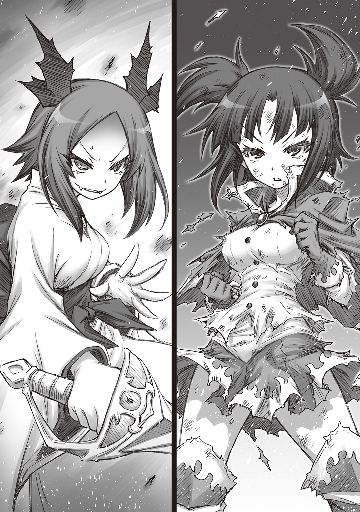
刃と拳がぶつかりあい、庭園の空気が震える。傍で見ているこちらでさえ、思わずたじろぐような圧力を感じるほどだった。
「おお......どっちもすごい！」
「さすが鬼の頭領というだけあるわ。あの酒吞童子の娘は、間違いなく討滅危険度Ａクラス以上だな。あれにタイマンを張れる社員なぞ、魔滅社広しといえども本気のトーコぐらいのものだろうよ」
わしを除けばな、と玉藻ちゃん。
だが、ぼくの興味関心は別にそんなところにはなく。
「ミニスカから覗くトーコさんの白い下着......！ ぷるんぷるんと揺れる朱音さんのたわわなおっぱい......！ なんて素晴らしいキャットファイトだ！ くううっ、どうしてぼくはカメラを持参しなかったんだろう！」
「貴様というヤツは......まあ、もはや何も言うまい......」
玉藻ちゃんが、呆れたような表情でため息をつく。
その傍ら、美少女同士の壮絶な命の獲りあいは、新たな局面を迎えていた。
一瞬の油断をつかれたトーコさんが、地に膝をついてしまったのである。やはり、得物の有無が致命的な戦力差となったのだろうか。
「......む」
剣の切っ先を突きつけられ、トーコさんは動きを止めるしかなかった。
「勝負ありましたわね。そもそもあなたのような矮小な人間が、このわたしに勝てるわけが――」
鬼の少女が口元を歪めた、その瞬間だった。
「隙あり、です」
なんとトーコさんの右手が、朱音さんの豊満な乳房をぎゅっと握っていたのである。
朱音さんは「ふあっ!?」と顔を羞恥に赤らめ、思わず握っていた刀を取り落としてしまった。
我らが十六夜支社のエースは、その好機を逃す女ではなかった。草薙をすかさず拾いあげ、相手にそれを突きつけたのである。
「あなたの弱点が無駄にデカいその胸だということは、純平くんが教えてくれました」
「はううっ......い、一度ならず二度までも、この私に恥を......」
「彼の助平さに助けられたようで、少し癪ですがね」
トーコさんの突然のセクシャルハラスメントによって、朱音さんは頰を紅潮させ、ふらふらと及び腰になっていた。
あのお嬢様、本当にお胸が敏感なご様子である。
そんな彼女の切なげな表情を見ていると、さっきもっと楽しんでおけばよかったと激しく後悔してやまない。いやマジで。
「覚悟なさい着物女――」
トーコさんの握る刀が、煌めくような蒼い光を放った。周囲のすべてを圧倒するような妖気の渦が、彼女を中心に巻き起こったのである。
対する朱音さんは動けない。
胸を鷲摑みされた衝撃から、いまだ立ち直っていないようである。
「はあっ......うう......こ、こんなことが......」
だが、トーコさんの辞書に容赦の二文字はなかった。腰砕けになっている相手に向けて、トーコさんは思いきり上段から妖刀を振りかぶったのであった。
「妖迅一閃っ――！」
「いやああああああああっ!?」
巨大な蒼い斬撃が、鬼の少女を吹き飛ばした。
が、吹き飛ばされたのは彼女だけではない。刃から放たれた妖気は近くにあった石灯籠や背後の土蔵の壁をもろとも巻きこみ、天高く空中へと舞いあげたのであった。
よほどトーコさんには鬱憤がたまっていたのだろう。先ほどの朱音さんの斬撃を遥かに凌駕する妖気の出力である。
「あ、相変わらず派手だなあっ!?」
しがみついてくる玉藻ちゃんと一緒に、ぼくはその場に身を屈めた。下手をすればぼくらもお陀仏である。
「魔滅、完了です」
蒼い竜巻の中心で、トーコさんが満足げに頷いた。
朱音さんの身体は無抵抗のまま宙を舞い、瓦礫と共にどさり、と地面に落下する。
「あ、あんまりですわ......」
美しかったお大江邸の庭園は、今やその主と同様、見るも無惨な姿になり果てていたのだった。
横倒しになった灯籠に腰を下ろし、一息つく。
時刻は現在、午前五時になるところだった。もうすぐ日が昇ろうとしているのか、遠くに見える山の端が少し明るくなってきたようだ。
一方、ロープで身体を拘束された朱音さんの表情は晴れない。彼女は荒れ果ててしまった庭園を横目に見つつ、憮然とした表情で口を開いた。
「この街を守るためには、魔滅社をなんとかしなければならないと思ったのですわ」
彼女は今、部下の鬼たちともども額に魔滅札を貼られた上、地面に正座中である。
なぜ彼女は、ぼくたちをこんな罠にハメようとしたのか――。支社長直々に、その真意を問い正すべく尋問中なのだ。
「街を守るため、だと？ どういう意味だ。むしろ、邪悪な妖魔から街を守っているのはわしらのほうだが」
「冗談はおよしになってくださいませ。悪さをする妖魔などごく一部です。むしろ普段から積極的に街を破壊しているのは、あなたたちのほうではございませんか」
朱音さんが、半目で破壊巫女を睨みつける。
確かにこの庭の破壊っぷりひとつとってみても、トーコさんの魔滅業務は周囲への影響がいささか大きすぎるきらいはある。
「特に神凪瞳子さん。あなたについては『魔滅の巫女』より、『十六夜市の破壊神』と呼んだほうがしっくりくるくらいですわ」
「別に、わざとやっているわけではありませんけど」
本人も自覚があるのか、トーコさんはばつの悪そうな顔でそっぽを向いていた。
「あなたたち魔滅社が建物を破壊するたびに、私たちは心を痛めているのです。社員たちが一生懸命建てたビルや家屋が、いつもいつもあっけなく壊されていく。......建設業者に対して、これ以上の冒瀆はありませんわ」
鬼の少女は、憂いを帯びた表情でため息をついた。
そういえば彼女は、十六夜市の建築業務を一手に仕切るゼネコンの社長さんだった。
昨日の体育館しかり、毎度毎度壊される建物と密接な関わりを持っている人間なのだ。ぼくたちの（というか主にトーコさんの）魔滅業務に関して、常々思うところがあったのかもしれない。
「しかもそのくせ、破壊活動を行っている本人たちは一切悪びれませんし。これはいったいどういう了見なのです」
面と向かって企業倫理に対するダメ出しをされてしまい、支社長は「ううむ」と唸った。
「......で、でも、一応本社を通じて、賠償金はそのつど払っておるわけだしな」
「お金の問題ではありません。誠意の問題ですわ」
憤懣やるかたない、という表情でゼネコン社長が続ける。
「社員たちの中にも、あなた方に対して不満を持っている者は大勢おります。『あいつらのせいでモチベーションが維持できない』『魔滅社をなんとかしてくれないなら、もう仕事をしたくない』――そんなことを言って現場を離れる者もいるのです」
ぼくたちをキッと睨みつけ、彼女は言い放った。
「だからこそ私はいち経営者として、決断したのですわ。諸悪の根元たる魔滅社十六夜支社を排除しようと」
「そ、それがぼくたちを殺そうとした理由っすか」
「いけませんか？ 魔滅社本社は、大江グループと並ぶ日本有数の大企業。妖魔退治の大義名分を掲げられては、法廷での勝ち目は薄いでしょう。私たちにはもはや、あなたがたを物理的に排除する道しか残されていなかったのですわ」
朱音さんの言葉に、周囲の鬼たちが頷いていた。彼らもまた大江建設の社員たち――思いは社長と一緒なのだろう。
「まあ、その気持ちはわからないでもないっすけどねえ......」
ぼくは、彼女の言葉に上手く言葉を返すことはできなかった。まあ、ある面から見れば朱音さんの言っていることも正論に聞こえるからである。
ぼくたちの魔滅業務のせいで、困ってしまうひとたちもいる。妖魔退治だからといって、なんでも許されるわけではないのだ。
「な、なんかぼくたち、わりと悪役じゃないっすかね」
「言うなジュンペー。わしもこのアウェーな空気に少々とまどっておる」
玉藻ちゃんも顔をひきつらせ、どうしたものかと思案に暮れているようだ。
ただひとりトーコさんだけが飄々と「わたし関係ないです」的な態度をとっていたが、さすがにそれは許されないようだ。朱音さんをはじめ、鬼の方々の恨みがましい視線はとくにトーコさんに対して向けられていたのだから。
「む......。わかりました。謝ります。謝ればいいんでしょう」
トーコさんが心底面白くなさそうな表情で頭を下げた。
「いつもいつも街を破壊してすみませんでした。今後は気をつけます。......これでいいですか」
「なんというか、誠意のかけらも感じられない謝罪ですわね」
鬼の少女が、眉間に皺を寄せた。
「謝るというのなら、言葉ではなく態度で示してくださいませ。そうでなければ、私どもは魔滅社を許すことをできませんわ」
「態度......？ 負けた分際で、ずいぶん偉そうな口を聞くのですね。あなたなど、ここで完全に成敗してしまってもかまわないのですよ」
「それでも、あなた方が鬼の誇りを傷つけたという事実は変わりませんわ。私が死ねば、日本中の鬼の一族が魔滅社本部に対して戦いを挑むことになるでしょう」
そういう朱音さんの表情には、一切の噓偽りはなかった。
部下の鬼たちも、頭領の勇ましいセリフに「おおお！」と沸き立っている。
「しゃらくさい......。たとえ日本中の鬼が相手だろうと、べつにわたしはかまいません。神凪の名のもとに、片っ端から魔滅を執行するだけです」
再び睨みあいを始めるトーコさんと朱音さん。どこまでいってもこのふたりが打ち解けあうことはないのだろうか。
「ああ、泥沼っすね、これは」
仮にここでこの鬼たちを徹底的に懲らしめたところで、根本的な解決にならない。それどころか、妖魔との大戦争が起きてしまう可能性すらあるのだ。
「なんとか仲直りできないもんすかねえ。鬼さんたちも、心の底から悪いひとたちってわけじゃなさそうですし」
「むう......そうだな」
玉藻ちゃんがこくりと頷く。
彼女は灯籠から立ち上がると、朱音さんたちに向けて口を開いた。
「まず、魔滅社のやり方に問題があったのは認めよう。お主らとこれ以上対立したくもないからな」
「では、魔滅社は心を入れ替え、今後はもっと他人に迷惑をかけないよう活動していくと？」
「まあ、端的に言えばそういうことだな」
玉藻ちゃんが鷹揚に頷いてみせた。
トーコさんが脇で憮然と口を引き結んでいるのに、果たしてそんな約束をして丸く収まるというのだろうか。
「俄かには信用できませんわ」当然のように朱音さんが首を振った。「その言葉を保証するために、あなたがたはどのような誠意をお見せくださるというのです」
「大丈夫、その方法なら、すでにちゃんと考えておるぞ」
玉藻ちゃんは、ぼくとトーコさんの顔色を見比べながら、にやりと口の端を歪めた。
それは、彼女が大抵アコギなことを企んでいる時の、黒い微笑みである。
「......十六夜支社からの謝罪と誠意の意志を見せたうえで、なおかつ当社の資金繰りにも役立つ秘策だ。心して聞くように」
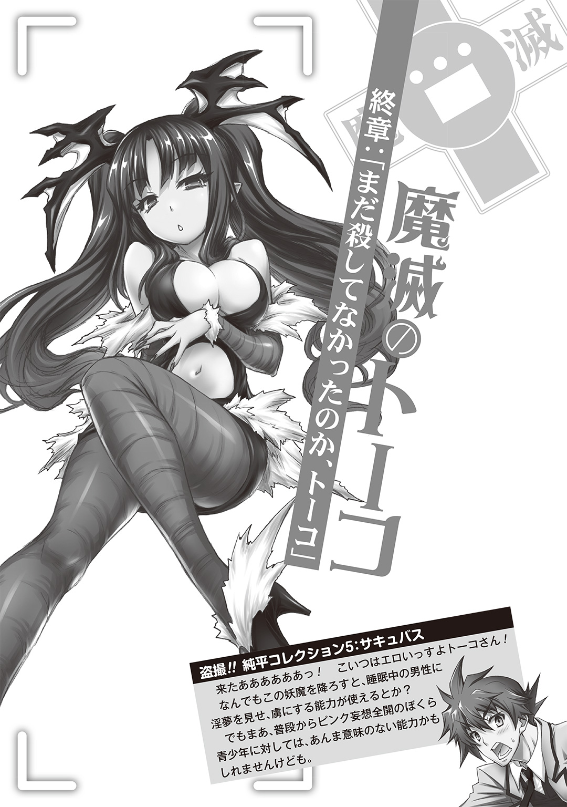
トン、テン、カン、と、夜の十六夜高校に、金槌の音が響いている。
「おい、新入りっ！ ボサっとしとるんでねえ！ 早くこっちにセメント袋持ってこいつったべ！」
「は、はい！ ただいま！」
ここは、新体育館建設現場である。焼失した旧体育館の跡地に、新たな体育館を建てるべく、急ピッチな工事が夜を徹して行われているのであった。
施工業者はもちろん、大江建設。
作業員の鬼さんたちによる、建築現場であった。
「ひいっ......ひいっ......」
総重量百キロを超えるセメント袋が乗った台車を、ぼくは死にものぐるいで運んでいた。
もうかれこれ三時間は休憩がない。すでにＴシャツもニッカボッカも汗まみれ、視界がぐにゃりと歪み始めてくる時間帯である。
「脚がふらふらしてっぞ新入り！ しゃっきりしろ！ その袋、落としたらただじゃすまねえかんな！」
鬼の先輩の怒声が響いた。
鬼というのは彼らの厳しさを揶揄した表現ではなく、もちろん見た目そのものを指した言葉である。ここ大江建設の従業員は、みなすべからく赤黒い鋼鉄の肌を有する〝鬼〟なのだ。
「ああ......もう疲れた......」
昼間は学校。そして夕方から次の日の明け方まではこの現場――。ぼくの日常から休息が姿を消して一週間、身体はそろそろ限界を迎えつつあった。
ぼくをこんな過酷な環境に送りこんだのは、もちろんあの守銭奴支社長である。
玉藻ちゃんが、大江グループへに示した〝誠意〟とは、ぼくたちをこの現場に出向させることだったのだ。
「建築の苦労を知れば、お前らがみだりに建物を破壊することもなくなるだろう。さあ、社会勉強に行ってくるのだ」
表向きはそんなもっともらしい理由が付されていたが、その実、これはただの玉藻ちゃんの小遣い稼ぎである。ぼくらの出向が社会勉強である以上、この現場で賃金が支払われることは一切ない。すべて、あの守銭奴キツネのポケットの中へと吸いこまれているのである。
「はあ、はあ......これ、完全に奴隷っつーか......強制労働っすよねえ......」
あっちを向いてもこっちを向いても、どこもかしこも筋骨隆々な鬼さんばかり。
疲れ知らずのマッチョメンどもは、深夜なので皆正体を隠そうともせず、鋼の肉体をむき出しにして建築作業を行っている。
もう、汗と泥とセメントの臭いはウンザリだ。美少女が三度の飯より大好きなぼくにとっては、この男所帯は地獄以上に過酷な職場だったのである。
「うああっ......！」
あまりの絶望に心が耐えかね、ぼくはついに台車を転倒させてしまった。
しまった。ミスをしたら、また現場監督にドヤされてしまう――。
「こらそこ、なにをしているのです」
案の定、彼女が舌打ち交じりにこちらにやってきた。
長い髪をポニーテールに結び、作業着をお洒落に着こなす監督少女。いつの間にやら、彼女はすっかりこの現場の花として馴染んでいたのだった。
「まったく、心底使えない男ですね、あなたは」
「ひ、ひいっ......!?」
地面に倒れたぼくを、彼女は安全靴で蹴り飛ばしてたたき起こそうとする。その容赦のなさは、この職場でも同じだった。
「純平くん。何度失敗したら気がすむのです。どうしてあなたはどこにいてもそんなに足手まといなんですか」
「というかトーコさん。逆に聞きたいのですが、どうしてあなたはどこにいてもそんなに偉そうなんすか」
彼女は現場監督待遇での出向。ぼくはいち作業員としての出向。
いかにぼくが魔滅社で下っ端扱いされているとはいえ、この待遇の違いはあまりにも酷すぎる。
「そんなことを気にしている暇があったら、早くセメントを運ぶのです」
「はいはい......」
ぼくは身体を起こし、地面に散らばったセメント袋をひとつずつ拾いあげはじめた。ひとつだけでも相当重いため、これがかなりの重労働なのである。
「はあ......」
「その反抗的な態度はなんです。運搬が嫌なら、高所作業に移ってもらいますよ。命綱はありませんが」
「いえ、この仕事が嫌っていうかですね――」
トーコさんの瞳をじっと見つめて、ぼくは口を開いた。
「ぼくは、いつものトーコさんが好きなんですよ」
「は？」
ぼくの一言に、彼女は実に不可解そうな表情を浮かべた。
少しだけ顔が紅潮しているのは、気のせいではないと信じたい。
「いや、ほら。作業着ってどうしても腰回りから下のラインが見えにくくなるじゃないっすか。絶対領域マイスターのぼくにとっては、トーコさんのふとももが見られない職場なんて耐えられないんです。作業効率半減って感じっすね」
もちろん、彼女の作業着姿も悪いものではない。
作業着の胸元に零れる汗は健康的な艶を感じるし、監督の立場から叱られるというのも普段とは違った新鮮なものを感じる。
だがやはり、ぼくが求めるのはギリリズムなのだ。彼女の脚線美が見られないのであれば、生きている価値などほとんどありえない。
「............はあ」
彼女は無言のまま、ぼくを白い目で睨みつけていた。
「ああ、そうだ。いっそ、この職場でも例のコスプレＯＫにしてしまいましょうよ。現場監督の力ならそれくらい可能でしょう？ ぼくのやる気を引き出すためだと思って」
「もう、救いようのないほどの愚か者ですね、あなたは......」
トーコさんが首をふり、背を向けて立ち去ってしまった。
ああ、せっかくのナイスアイディアだと思ったのに。
「しかたがない。おとなしく働いて、元の魔滅業務に戻れる日を待つか......」
トーコさんとあの巫女服が作り出す脚線美を思い浮かべながら、ぼくは台車にセメント袋を乗せる作業に戻るのだった。
「なにが絶対領域マイスターですか。まったく、ひとの気も知らないで」
休憩用のバラック小屋の扉を開け、神凪瞳子は手近な椅子に腰を下ろした。
テーブルに置かれていたヤカンから紙コップに中身を注ぎ、それを一息で飲み干す。冷たい麦茶が、疲れた身体に染み渡るような心地よさをもたらしてくれた。
慣れない監督業は、案外魔滅業務よりも数段疲れるものなのかもしれませんね――瞳子はひとり、ため息をついていた。
「『ひとの気も知らないで』とは、むしろわしの台詞だがな」
ふと、テーブルの下から聞き慣れた声が聞こえてきた。
はっとして覗いてみれば、そこにはお茶請けのお煎餅をボリボリ齧るキツネ耳の少女の姿があった。
「支社長......。何をしているんです、こんなところで」
「んむ。お前らがきちんと建設業務に励んでいるかどうか、経過を観察にな。決して、それを口実に無銭飲食をしに来たわけではない」
そう言う彼女の足元には、かなりの量の煎餅の袋が落ちていた。
自分たちの主は、どうしてこんなにも卑しいのか。妖魔王のくせに。瞳子にとってそれは、永遠の謎であった。
「そんなことよりトーコよ。お前、なぜこの間の一件で、あんなことをした？」
「あんなこと、とは？」
「とぼけるでない。〝神降ろし〟のことだ。ジュンペーの中に封じた妖魔を降ろすなど、よくもそんな危険極まりないことをやってくれたものだな。わしの気も知らないで」
むすっとした表情で、支社長がテーブルの下から這い出てきた。
「大江の鬼をなんとかするためには、それが最善の方法だと判断しただけです」
瞳子の答えに、支社長は「本当にそうか？」と眉をひそめている。
「緊急避難だとしても、リスクが大きすぎるやり方だな。ジュンペーを名乗るあの妖魔......あやつが完全に自我を取り戻せば、どうなるかはわかっておったのだろう？」
「それは......まあ」
今の早池峰純平は――あのスケベでヘタレでどうしようもない後輩は、人間ではない。それどころか、ただの妖魔というわけでもない。
本人はまったく気づいていないようだが、彼は本来、途方もなく強大な力を持った神代の妖魔なのである。
「〝悪戯〟と〝災厄〟の悪神......。ヤツの本領はセクハラなどという可愛いものではない。この世のシステムを根本から変えてしまうような、天変地異レベルの〝悪戯〟なのだよ」
キツネ耳をふるふると震わせながら、支社長は言った。
妖魔の王ですら恐れるような存在――それが早池峰純平を名乗る、あの妖魔なのだ。
「かの、冥府の王が目覚めてしまえば、またあの日のような惨事が引き起こされかねない......」
瞳子の頭をよぎったのは、半年前の死闘であった。
この世を混沌に陥れようとする冥府の王のとある〝悪戯〟――それを阻止するべく、多くの魔滅社社員が命を散らしたのである。
その中には、瞳子の両親もいた。
共に修業した友人たちもいた。
そして、最愛の想い人もいた。
「あの日わしらは多くの犠牲を払って、あやつをジュンペーの身体に封じこめることに成功した。正直に言えば、親しい人間が死ぬのを見るのはわしだって辛い。もう二度と、あのような思いはしたくないというのが本音だな」
支社長が、苦々しげに煎餅を齧る。純平の前では見せたことがない顔であった。
「そう、ですね」
瞳子もよく、あの日のことを思い出しては、うなされる夜がある。
いかに魔滅の巫女として研鑽を重ねていようとも、最愛の人間を目の前で殺されてしまう衝撃に耐えられるほど、瞳子の心は強くはなかった。
まして自分の手でその人間の身体を封印の触媒として利用したのだ。トラウマにならないわけがない。
「今の純平くんは、わたしにとっては全てを奪った仇。近い将来――封印が解けるであろうその日までに、彼を斬らなければならない。それはわかっているんです。でも――」
瞳子は、休憩室の壁に立てかけてある剣に目を向けた。
第一級魔滅兵装――〝草薙〟。
それが唯一、あの冥府の王を倒しうる切り札であり、だからこそ、草薙を扱える瞳子が早池峰純平の魔滅任務を帯びているというわけである。
「でも？」
支社長が首をかしげた。
彼女が言いたいことはわかっている。「躊躇などぜずに、ジュンペーを殺してしまえ」だ。
現に彼女は大江の屋敷でも、自分の酒盛りにかこつけて瞳子と純平をふたりで行動させ、それとなく暗殺の機会を提供してくれていた。
それでも彼を殺せず、経過観察を続行することにとどめたのは、単なる瞳子の感傷にすぎないのかもしれない。
「殺せない、とは言わないよなあ、トーコ。お前が恋い焦がれた早池峰純平は、もう死んでいるんだ。アレはもう、ジュンペーの皮を被った、倒すべき敵なのだぞ？」
「............」
支社長の言葉は、頭ではよくわかる。
だが瞳子は、その言葉に即座に頷くことができなかった。
――ぼくは、いつものトーコさんが好きなんですよ。
そう言って屈託なく笑う少年を、果たして自分は斬れるのだろうか。
あそこまで無邪気に好意をぶつけられる彼に、どんな罪があるというのだろうか。
記憶を失った彼は、もはやかつて戦った冥府の王とは別の存在なのではないのだろうか――。
「封印が解けるまで、あと三か月ほどはあるはずです。支社長、もう少しだけ、見極める時間をくださいませんか」
そう言って瞳子は椅子から立ちあがり、戸口へと向かった。
その背にかけられた「若いな」という呟きにも、振り返ることなく。
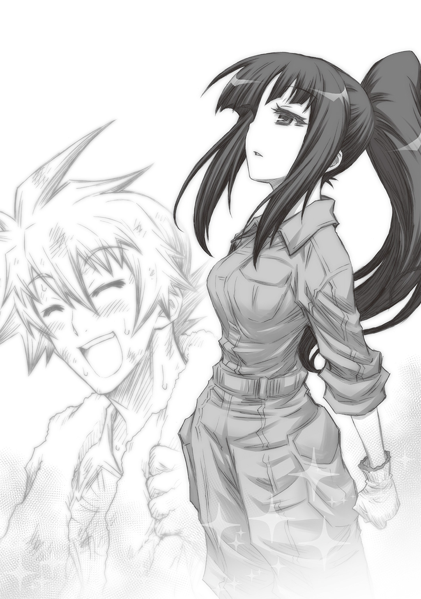
あとがき
はじめまして。畑中りんごと申します。
このたびはジャンプ小説新人賞キャラクター小説部門金賞という栄えある賞を頂いてしまった上、こうして本まで出していただけるということで、驚きでいっぱいいっぱいの状況です。当方わりとネガティブかつ小心者なので、実はすべてが壮大なドッキリなんじゃないかとか、運を使い果たした結果三日後くらいに事故死するんじゃないかとか、いまだ戦々恐々としています。
......夢じゃないよね、これ？
作中のキャラクターについて。
『魔滅のトーコ』は、クールで素敵な毒舌系女子トーコさんと、そんな彼女に邪な思いを寄せる好青年（もといゲス野郎）の純平くんが主役のお話です。
実は彼らのキャラ設定は実体験からくるところがありまして、僕がアルバイトをしていた某ショップでの人間関係に基づいております。......はい。かつて僕がレジを打っていた売り場にもいたんですよね。綺麗なのにやたらと辛辣な先輩女子が。
その先輩、事あるごとに僕をなじってくるんですよ。「どうして一度教えたこともできないの」「もっと使える後輩が入ってくれば良かった」「あんたと同じシフトだと疲れる」「いっそ死ね」などなど。情け容赦のない言葉の数々にレジの陰でハンカチを濡らすこともありましたが、彼女の厳しい指導のおかげで美人から受ける精神的凌辱がある意味ご褒美だと感じられるようになったのもまた事実です。そんなバイトの思い出が、本作に繫がっているのでしょう。たぶん。
今思えば、自分は心底その先輩に嫌われていたのかもしれませんが、トーコさんは純平くんに対してどういう気持ちを抱いているのでしょうね。そのあたり、シリーズ続刊で明らかになったりするかもしれません。（驚くべきことに、本作は続きが出るそうですよ!?）
そして最後に。
テーマイラスト並びに美麗な表紙、挿絵の数々を提供してくださった暁月あきら先生、本当にありがとうございました。本作は先生のイラストがあってこその作品です。トーコさんや純平の色々な表情を見ることができて、感無量であります。
担当の六郷さんならびにＪＵＭＰｊＢＯＯＫＳ編集部の皆様方、およびデザインや印刷関係の方々の助力にも感謝です。至らない新人ですが、今後ともご指導よろしくお願いします。
もちろん、あとがきまで読んでいただいたあなたにも、心からの謝辞をお送りします！
畑中りんご
本書は、ジャンプ小説新人賞'13Ｗｉｎｔｅｒキャラクター小説部門金賞受賞作『魔滅のトーコ』を大幅に加筆修正したものです。
著者紹介
畑中りんご
福島県出身。ジャンプ小説新人賞'13Ｗｉｎｔｅｒにてキャラクター小説部門金賞受賞。受賞した同作『魔滅のトーコ』でデビュー。
熱血だったり心優しかったり頭脳明晰だったり、キャラクターのカッコよさにもいろいろあるとは思うのですが、「自分の欲望に素直に生きる」というのもカッコよさのひとつかもしれません。
これは、そんな主人公のお話です。
楽しく読んでいただければ幸いです！
暁月あきら
週刊少年ジャンプで西尾維新原作『めだかボックス』の作画を担当。好評を博した同作はアニメ化された。
今回の試みは、初めての経験でとても楽しくそして勉強になりました。
実際に出来上がってみると、デザインの時になんとなく自分なりに考えていたキャラクター像と良い意味で全然違った形になり、改めてキャラ作りの難しさや楽しさを感じました。
...コスプレ、絶対領域、えろ。
とても大好きです（笑）
ジャンプジェイブックスDIGITAL
魔滅のトーコ
著 者 畑中りんご
画 暁月あきら
© 2015 R.HATANAKA / A.AKATSUKI
２０１５年８月31日発行
この電子書籍は、ジャンプジェイブックス「魔滅のトーコ」
２０１４年６月９日発行の第１刷を底本としています。
装 丁 石山武彦［Freiheit］
編集協力 北奈桜子
発 行 者 鈴木晴彦
発 行 所 株式会社 集英社
〒１０１－８０５０
東京都千代田区一ツ橋２丁目５番10号
０３－３２３０－６０８０（読者係）
制 作 所 株式会社デジタルディレクターズ
本作品の全部また一部を無断で複製、転載、改竄、インターネット上に掲載すること、および有償無償に関わらず、本データを第三者に譲渡することを禁じます。なお個人利用の目的であっても、コピーガードを解除しての複製は、法律で禁じられています。